| ダブル・コントラクト6 想いがつのる初熱望！？ (ビーズログ文庫) | |
| 香月 沙耶 | |
| (2013) | |
本作品の全部または一部を無断で複製、転載、配信、送信したり、ホームページ上に転載することを禁止します。また、本作品の内容を無断で改変、改ざん等を行うことも禁止します。
購入時にご承諾いただいた規約により、有償・無償にかかわらず本作品を第三者に譲渡することはできません。
本作品は、底本の表現や演出を考慮して本文縦組で制作しております。また一部のページを改変しております。ごらんになるリーディングシステムにより、表示の差が認められることがあります。
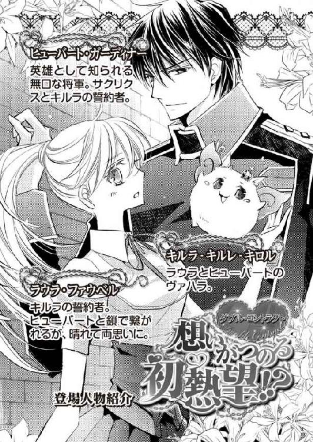
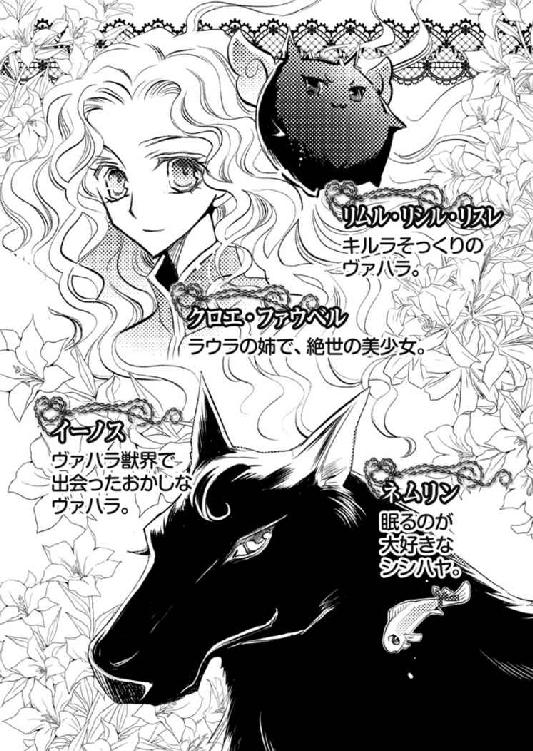
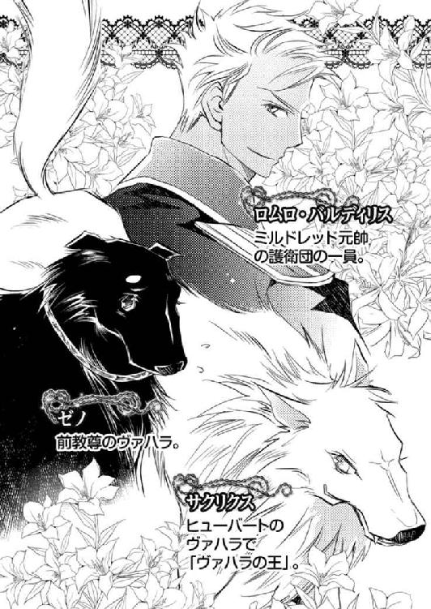
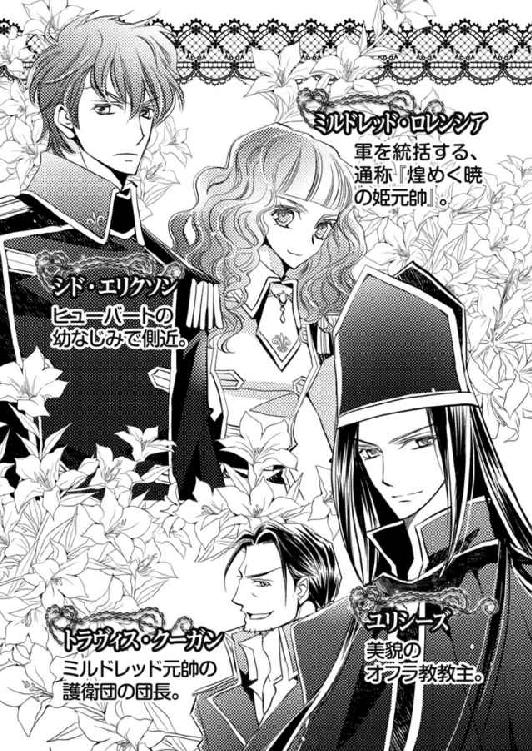
妾がそう言うと、その者は、そーなんですか？ とのんびり笑った。
そして勘に障る笑顔のまま、首を傾げた。
「姫は嫌いなものが多いですねえ。どうしてこの匂いが嫌いなのです？」
「なにゆえ貴様に話さなければならぬのじゃ」
ツンとそっぽを向く。
「そんなこと言わないで、教えてくださいよ。ね、姫？」
優しい......ように聞こえるが、それは口調だけじゃ。この者が本当は、ちっとも優しくないことを、妾は重々承知している。
再度促され、答えなければ何度も問われるかもしれないと思った妾は、それも面倒じゃ、と嫌いな理由を告げた。
「おやまあ、普通、それは好きな匂いではないのですかねえ？」
不思議そうに目を瞬かせるその者に、妾は大きく首を振る。
「嫌いと言ったら嫌いなのじゃ！ そんなもの、捨ててしまえ！」
「まあまあ姫、癇癪を起さないでくださいよ。これはね、とっても大事な物なのです」
「なにゆえそれが大事なのじゃ」
妾は相手の問いにちゃんと答えてやったのに、その者はただにっこり笑うだけで、返事をしようとしない。
「姫にとって、大事なことを教えてあげたでしょう？ だからちょっと手伝ってくださいよ」
妾は胡乱に目を眇めた。
「貴様に何を教えられたかのう？」
ふふ、と奴はまた笑う。
「そんな意地悪言わないで。これをね、撒いてほしいのです」
「撒く？」
その者はにんまり口元を歪めてうなずく。
「これをヴァハラ以外の生き物が吸ったり被ったりしたら、どうなるのかなあ、と思いまして。つまり実験がしたいのです」
実験。
何やら不穏なことを考えているようじゃが、興味を惹かれる。
「何処に撒くのじゃ」
妾は問うた。
その者は、青い瞳を優しく細める。もったいぶりながらも、ようやく唇を開いた。
「ヴァハラ獣界へ」

鬱蒼と濃い緑の木々が生い茂る森の奥深くに、その教堂はあった。
枝を大きく広げた木によって、森の中は日中でも薄暗い。地面は苔で覆われ、花々も日差しを恋しがるように、悲しげに頭を垂れている。
森の中には、教堂に向かうための道があるが、周囲は雑草で覆われ、その道を今にも侵食しようとしている。
これから雨の季節がやってくる。この道も草に埋もれて、遠からずなくなってしまうだろう。
教堂の周囲には生命力豊かな蔓草が生え放題で、建物全体を包み込むように絡みついていた。
緑や黒に近い小さな葉が、びっしりと壁を覆っている。
「こりゃひどいなあ。建物全体を蔓草が覆い隠しているぞ」
「おい、あれを見ろよ。舞台の上まで塞がっているじゃないか」
空に浮かぶのは、青みを帯びた美しい毛色の獣──ロレンシア国民から、神の遣い、あるいは神そのものと呼ばれているヴァハラだ。
背には、焦げ茶色の軍服を着た男を乗せている。
男は、蔓草にすっぽり覆われたドーム型の舞台を見下ろして、やれやれとばかりに首を振った。
「アイネイアスくん待った。今、何しようとした？」
「何って、蔓草を焼き払おうとしただけだ」
ヴァハラ──アイネイアスはそう言って、口を大きく開いた。
「ちょっと待って！ サクリクスくんみたいに、建物丸ごと焼きはらったりしないよう、じゅうぶん加減をしてくれよ？」
「王じゃあるまいし、俺がそんなヘマをするはずないだろうが。それよりとっとと中を調べて帰るぞ」
不機嫌そうな口調で、今にもヴァハラの光を放ちかけたアイネイアスに、男は、なるほどと肩を竦めた。
「ああ、さっきから機嫌が悪かったのは、早く教堂に戻りたかったからか。ほとんど喋らないから、何を怒っているのかと思った」
「トラヴィス、俺はな、さっきからじゃなくて、教堂を出る前からずっと機嫌が悪かったんだよ！ だいたいなんだって俺がセルリア教堂を調べなけりゃならないんだ。シドとイムに行かせればいいじゃないか！」
アイネアスが憤然とそう言い募ると、男──トラヴィスは無精ひげの生える顎を指先で搔きながら、まあまあと宥めるように背を叩いた。
「エリクソン少佐とイムくんは、あの子たちの親御さんの調査に取り掛かっているだろう。いくら少佐が優秀だからって、身体はひとつしかないしさ」
「......娘の家族か」
アイネイアスはそう呟くと、ふっつり黙り込んだ。
「ファウベル家だったっけ？ あの家族に加え、セルリア教堂の方まで調べろなんて言ったら、少佐『僕はおまえの小間使いじゃない』って拗ねちゃうだろうし」
「シドなんか拗ねさせていればいいんだよ」
アイネイアスこそ拗ねたように言うと、トラヴィスは、ふっと笑いだした。
「......なんだよ」
「いやいや、本当に誓約のヴァハラは、誓約者と離れるのを嫌がるなあ、とね」
「当たり前だ。そばにいなけりゃユリシーズを守れないじゃないか」
大切な誓約者の名を口にした途端、アイネイアスは、もう少しの時間も無駄にしたくないと思ったのだろう、舞台の上部を覆う蔓草に向けて、再び大きく口を開いた。
トラヴィスに言ったように、ちゃんと加減して建物を寸分も損なわず、蔓草のみを焼き払う。
トラヴィスは舞台の上部に降り立つと、ぽっかり空いた穴から、舞台を覗き込んだ。
「あーあ、荒れ放題だね、......って、アイネイアスくん？」
背後から覗いていたアイネイアスが、ふいに、宙に浮かんだ。
「どうした？」
「......いや、なんだ？ なんだか、奇妙な感じがする」
「奇妙？」
トラヴィスはもう一度舞台に視線を落とす。
蔓草が上を覆っていなかった間に降った雨によってだろう、ふやけてボロボロになった紙や本がそこかしこに散らばっている。
目を凝らすと、筒状のものや、濁った液体の入ったガラス瓶も見えた。
確かに奇妙で怪しげな状態だが、恐らくアイネアイスが言っているのは、トラヴィスの目が捉えたものとは少し違うようだ。
人間とヴァハラの感覚の差異、だろうか？
「中を探ってくるから、アイネイアスくんはそこで待ってて」
トラヴィスはアイネイアスの声が返ってくる前に、近場にあった手頃な蔓をしっかり摑むと、舞台に飛び下りた。
「うお！」
途中蔓が切れて、危うく落下しかけたトラヴィスだったが、すんでのところで転ぶのを回避する。
無事舞台に着地したトラヴィスは、あらためて周囲を見回した。
床に落ちている書物を一冊拾い上げる。
「『ヴァハラの生体について』。......まあ、教堂だし、あっても不思議はない」
だがそれよりも、とトラヴィスは呆れてため息をついた。
上からは見逃していたが、壁際には書物が床に直置きされていて、何本もの塔をつくっていたのだ。
雨ざらしにあった本は、このあと読もうとしたら、大層苦労することだろう。
本は貴重だ。それを、こんなにも雑に扱う人間が、トラヴィスには信じられない。
「仮にも教主ともあろうお方が、ヴァハラ関連の本を、こんなふうに扱うかねえ？」
しかも相手は、教尊候補でもあるというではないか。
「おい、トラヴィス」
蔓草を取り去った部分から、陽光が差し込んでくる。その光を背負ったアイネイアスが、トラヴィスを見下ろしていた。
「なんだい、アイネイアスくん」
「ちょっと上がって来い。嫌な予感がするんだよ」
「予感って、......アイネイアスくん、占い師でもあるまいし」
「茶化すな。とにかく早く」
アイネイアスにも明確な理由がわからないようだ。
首を傾げつつも、トラヴィスはわかったよと返した。
ふと思いついて、その場にあった怪しげな紙の束を手に取ると、帰りは扉を使って外に出ようと歩を進める。
だがそこで、トラヴィスの上体が、ぐらりと揺れた。
「......おや？」
酒を飲んで、酩酊したような感じだった。
「おい、トラヴィス......！」
アイネイアスの焦る声が降ってくる。
ふいに、鼻孔を甘くくすぐる花にも似た香りがした──ような気がした。
ラウラ・ファウベルがヴァハラ獣界にやってきて、そろそろ一ツ日が経とうとしている。
その短い間で、ヴァハラ獣界に生息する動物たちにもたくさん出会った。
襲われることもあったし、怖い思いもしたけれど、心からの恐怖を抱いたことはなかった。
それは、ラウラにとって一番大事で一番信頼しているひと──ロレンシアの英雄、ヒューバート・ガーディナー将軍と、誓約のヴァハラ、キルラ‐キルレ‐キロルが、いつもそばにいてくれたからだ。
だから恐怖より、好奇心の方が勝っていたのかもしれない。
ラウラが心から愛するヴァハラの故郷であるヴァハラ獣界は、とても美しい世界だった。
巨大な滝や、人界では見たことのない色合いの草や木々、七色の海、発光する花や葉......目にしたすべてのものが美しい。
もちろん、ヴァハラ獣界にやってきた理由を、片時も忘れてはいない。
ラウラの大切なたったひとりの姉、クロエ・ファウベルが、ヴァハラ獣界に飛び込んでしまったため、彼女を追ってきたのだ。
クロエはひとりではなく、『ヴァハラ獣界の女王』だと名乗った、小さな黒きヴァハラのリムル‐リシル‐リスレ、そしてともに舞台の穴から落ちた、軍人のロムロ・バルディリス中尉と一緒にいるらしい。
姉が何を考えて、そんな行動を取ったのか、ラウラには見当もつかない。
たくさんのひとに迷惑をかけてもなお、ヴァハラ獣界に向かったクロエに、ラウラは早く会いたかった。会って理由を訊きたかった。
少しでも早く。
──ところが。
「ふーんふーんふーむ。それゆえ吾輩は考えたのですよ。人間という存在を知る近道は、人界に行くことだって」
「ではなにゆえそなたは人界にゆこうとしないのじゃ？」
さっさとゆけばいいではないか、とキルラ‐キルレ‐キロルが口を挟む。ラウラとキルラはただいま同調中のため、開いた口はラウラのものだ。
「『イーノス』！ って呼んでくださいよ。自己紹介したのに、『そなた』なんて呼ばれたら、吾輩拗ねちゃいますよ」
ラウラが知るヴァハラは皆表情が豊かで、そのうえ個性的だ。
ラウラたちがヴァハラ獣界で初めて会ったヴァハラ──イーノス、と名乗った彼も、相当個性豊かだった。
──こんなお喋りなヴァハラ、会ったことないよ......。
ミルドレッド・ロレンシア元帥の誓約のヴァハラも話し好きだったが、彼......否、乙女ヴァハラ、クインの比ではない。
イーノスは一度喋りはじめたら、なかなか口を閉じない。話が長い。しかも抑揚が大仰なものだから、聞いているだけなのに、なんだかどんどん体力を奪われていくような感覚を覚えるのだ。
「では、イーノス。改めて質問じゃ。なにゆえ人界にゆかないのじゃ？ 通路はあちこちにあるであろう。簡単にゆけるぞ？」
ラウラの口を通してキルラが再び問いを投げかけると、イーノスは額にかかるくるんとした毛を振り乱すほどに首を振った。
「だって」
「だって？」
「だって怖いんだもん」
「......」
てへ、と牙を剝き出しにして笑ったらしいイーノスに、ラウラばかりか、内にいるキルラまでもが、がくりと肩を落とした。
「人界に行きたいけど、怖くて行けない～、って思っていたところに、なんと人間の方がヴァハラ獣界にやってきた──ッ！ 吾輩、この人間たちと一緒にいたら、ひとのことがわかるかも～!? ってね、思ったわけですよ、そこの軍人さん」
小首を傾げてイーノスが見上げた先には、先刻からひと言も口を挟まずにいた男──ヒューバートがいた。
「吾輩ヴァハラだし、空も飛べるし、結構役に立つと思うんですよ。だからね、あなた方の旅に、同行させてくださいなッ！」
「断る」
ヒューバートは一刀両断とばかりに、そう告げた。
「はい？」
「断る、と言った」
ヒューバートは、同じ言葉を繰り返したかと思うと、イーノスからじゅうぶん距離を取った状態で、彼に懐くシシハヤのネムリンへと手を伸ばした。
その動きは、目で追うことができないほど速いもので、気づいた時には、ネムリンはヒューバートの大きな掌に包み込まれていた。
「ラウラ、キルラ‐キルレ‐キロル、行くぞ」
持っていてくれ、とネムリンを差し出され、ラウラは慌てて両掌で受け取る。
彼らシシハヤは、遠く離れていても、念で仲間と交信をすることができる。
クロエと行動をともにするロムロのそばにもシシハヤがいるため、ネムリンに念を送ってもらって場所を特定していた。
広いヴァハラ獣界で、やみくもにクロエを探しても、見つかる確率は低い。
ネムリンはクロエを探すために、いてもらわなければならないシシハヤだった。
ヴァハラ獣界でひとの言葉を話せるのはヴァハラだけだから、ネムリンの言葉を、ラウラやヒューバートは理解できない。だがラウラたちには、誓約のヴァハラ、キルラがいてくれる。
キルラは、普通のヴァハラにはない能力があった。
ヴァハラ獣界の獣の言葉を理解できるのだ。
ネムリンとキルラがいてくれることで、ラウラたちは広大なヴァハラ獣界で迷うことなく、クロエを探すことができるのだった。
温かなラウラの掌が心地好いのか、ネムリンは、ゆらゆらと揺れている。
ヒューバートは、左手をラウラの背に添えると歩きだした。
「ま、待って、待って！ なんで吾輩同行しちゃダメなの!? 納得いかないんですけどもッ！」
ヒューバートは無言のまま振り返った。
そして再びひと言。
「胡散臭い」
「は？」
──そ、それは、将軍、あまりにもはっきり言いすぎでは......。
確かにお喋りすぎて、ちょっとウザ......いやいや、うるさい......いや、賑やかだけれど、とラウラはそろりとヒューバートをうかがう。
イーノスは、少しの間、何を言われたのかわからなかったかのように、呆然とした体でいた。だがヒューバートの言葉が理解できた途端に、急に横を向いて、何事か呟きはじめた。
「ふ、ふふふふふ。胡散臭いと言われた。初対面の人間に、胡散臭い、と......。吾輩そんなに胡散臭い？」
「......」
「どこが胡散臭いんだろう。姿？ 確かに額の毛がどういうわけかくるんとしちゃっているが、これはくせ毛だし、吾輩のせいではないもん。毛色だってごく普通の黒毛だし、特別肥えているわけでも瘦せているわけでもない、平均的なスタイルだし、胡散臭いところなんて何ひとつないではないか」
そんな独り言を呟いたあとで、イーノスは、すい、と前を向いた。
「吾輩、自身をよくよく検証してみましたが、胡散臭いところなどありませんぞ。吾輩が言うのだから間違いありません！ さあ、ゆきましょうぞ！」
イーノスはそう断言した。
「俺の言葉は通じなかったようだが、言い間違えたか？」
あっさりラウラの隣に並ぼうとするイーノスをけん制しつつ、ヒューバートは、微かに首を傾げる。
「ええと、言い間違えては......いないかもしれませんが、ちょっと直接的すぎっていうか」
「そうか」
ヒューバートはうなずくと、では言い直す、と口を開いた。
「言い直すってことは前言撤回ですね。やっぱり吾輩が胡散臭いっていうのは、軍人さんの目の錯覚、見間違い......」
「胡散臭いではなく、不審に思う」
ばっさり言い直されたイーノスの表情が凍りつく。
「ヒューバートよ。それは同じ意味を持つ言葉のように、我には聞こえるが」
「し、将軍......」
確かに胡散臭いし不審動物だけれど、本ヴァハラが目の前にいるところで、と首を竦めるラウラの前で、イーノスは唐突にはらはらと涙を零しはじめた。
「わ、あ、あの......！」
「不審、吾輩、不審人物......？」
「人物ではないぞ、イーノスよ。不審動物もしくは不審ヴァハラじゃの」
キルラが親切に追い打ちをかける中、
ンピチュ！
ラウラの手の隙間から無理やり這い出たネムリンが、一直線にイーノスに飛んでいく。
「あ......！」
「ネムリン!?」
ラウラとキルラが慌てていると、ネムリンはしきりにピチュンンピチュと囀るように鳴く。
大丈夫だべさ。おいらがついているべさ！
キルラと同調しているラウラにも、ネムリンの言葉が理解できる。
なんとネムリンはイーノスを慰めていた。
「えっと、ネムリン。そんなにイーノスさんのことが、好きなんだ」
「種を違えても育まれる友情や愛情というのは、意外とあるものじゃのう」
キルラもまた、感慨深そうに呟く。
ラウラの脳裏には、以前人界を騒がせた、黄金の翼を持つスイカレンカと、小さな小さなエジュウトが思い浮かんだ。
彼らもまた、違う種族だったが、互いを必要とし合っていた。
考えてみれば、人間とヴァハラもそうではないか。
互いの間に結ばれた誓約があるからと言ってしまえばそれまでだが、その誓約を越えて、ラウラはキルラを大事にしたいし、幸せにしたいし、いつだって笑っていてほしいと思う。
「ううう、シシハヤが何か言っているが、吾輩にはわからんよお」
「ネムリンはイーノスを励ましているのじゃ。おいらがいるから大丈夫とゆうておるのじゃぞ！」
すかさずキルラが通訳をすると、イーノスはふいに顔を上げた。
「純白の髪のお嬢さんの内にいるヴァハラくん、君はこのシシハヤの言葉がわかるんですね」
「うむ、わかるぞ」
「実はちょっと前に見聞きしていたんですよ。遠くからだったから自分の目と耳がおかしいのかと思ったんですが、本当にわかるんだ。すごいですねえ」
褒められたキルラは、えっへんと胸を張った。
「すごかろう！」
「でもなんで君はほかの種の言葉がわかるんでしょうねえ？」
ヴァハラであるイーノスの、至極当然であろう疑問だ。
「もしかして新種なんでしょうか？」
「新種......。わ、我はヴァハラであるぞ！」
「うん、ですから新種のヴァハラ」
「......」
その場に微妙な空気が流れる。
キルラの存在については、ラウラも考えたことがある。
ローデリー地区オフラ教教主のユリシーズも、キルラの特殊性については折に触れ口にしていたし、まず身体つきからして、別の生き物ではないかと思うくらい違っている。
それでもラウラにとってキルラは、誰がなんと言おうと、大切な誓約のヴァハラだ。きっとヒューバートも同じ思いでいるだろう。
だがその微妙な空気をつくりだしたイーノスはといえば、まったく頓着せずに口を開く。
「ああそうだ。吾輩、君とそっくりなヴァハラを知っていますよ」
「な、なんと......!?」
「先刻お嬢さんとの同調を解いた時に見ましたが、君は白毛ですよね。彼女は、毛の色こそ黒でしたが、身体つきも頭の上の角も背中の金色の羽も一緒でしたなあ」
ラウラはハッとヒューバートを見上げた。
ヒューバートの脳裏にも、『彼女』が思い浮かんでいるのだろう、微かに眉根を寄せていた。
『妾はヴァハラ獣界の女王じゃ！』
『妾はサクリクスと戦い、見事あの者を倒したのじゃ！』
そう叫んだ、黒い毛色の小さな獣──リムル‐リシル‐リスレ。
「君とあの仔は同種なんでしょうねえ」
のんびりとイーノスはそう言った。
「の、のう、イーノス。その、我とよく似た者のことを、もっと聞かせてはくれぬか？」
「わっ」
ラウラと同調していることを一瞬忘れたのか、キルラは思わずといったように、イーノスに向かって歩を進めた。
だがすんでのところで、後ろからヒューバートに引き寄せられる。
「......キルラ‐キルレ‐キロル」
あのヴァハラに近寄るな。
声は聞こえなかったが、ヒューバートがそう思って引き留めたことが、ラウラにはじゅうぶん伝わってくる。
胡散臭い......不審を覚えるヴァハラには近づくな、と思っているはずだ。
ラウラの腕を離さないヒューバートと、行きたそうにもじもじと身を揺するキルラの様子を見て、イーノスはふいに、にんまりと目を細めた。
ヴァハラは大抵表情が豊かだが、イーノスは格別だった。
つい先刻まで大粒の涙を零していたとは思えない笑顔で、大きくうなずいた。
「いいですよ。道中たっぷりとお聞かせいたしましょう」
「──」
あっ、とヒューバートを振り返ると、先刻よりさらに、眉間が寄せられていた。
──ああ、不機嫌度が増している......。
わずかなヒューバートの表情の変化から、彼が何を考えているのか、どんな心情なのか、ラウラにも徐々にわかるようになってきた。それはとても嬉しいことなのだが、ヒューバートの機嫌が悪くなるのは避けたい。
「あの、将軍......」
「ほ、本当か？ 本当にたっぷり聞かせてくれるのか？」
「ええ、ええ、もちろんですとも！ 吾輩噓は言いませんよ。はい！ よろしくお願いしますね、新種のヴァハラくん、白い髪のお嬢さん、そして軍人さん」
目を細めて挨拶をするイーノスに、ヒューバートが同行はしないと言ったことを、はたと思い出したのだろう、キルラはちらちらと上目遣いでヒューバートを見上げる。
「ヒューバート。......お願いなのじゃ」
「......」
「我にとって一番大事なのは、誓約者たる一番目と二番目じゃ。ふたりがいてくれたら、このヴァハラ獣界で、我と同じ種の者がいなくても構わないと思っていた」
「キルラ......」
「じゃが、あの者が我の前に現れた。我は、あの、我に似た者のことを知りたい。あの者が何を考えているのか、少しでもいいから知りたいのじゃ。じゃからこのヴァハラ──イーノスを、同行させてほしい。頼むのじゃ」
ラウラと同調した状態で、翠藍色の瞳をうるうるさせながら『お願い』をするキルラに、ヒューバートは無言ながら、気持ちを揺さぶられているようだった。
ヒューバートが『胡散臭い』、『不審を覚える』と言うのならば、ラウラは彼の勘を信じる。
だが一方で、初めて出会った、同種かもしれないリムルにキルラが興味を持つのは当然のことで、イーノスの言葉なんか無視して、と言うのは、酷でもあった。
ずっと自分はひとりだと泣いていたキルラを思い出すと、今でもラウラの胸は痛んだ。そして思う。
──キルラ、ちゃんと自分の気持ちを言ってくれるようになったな。
ラウラも遠慮をして口をつぐんでしまうことがあるからひとのことは言えないが、キルラが自らの想いや願いを隠さずに言ってくれて、実はちょっとだけ嬉しくもあった。
──やっぱりキルラはあの仔のこと、気になっていたんだ。当然だよね。
きっと我慢をさせていたであろうキルラに、内心ごめんねと謝った。
「ラウラ」
「あ、はい」
「俺は、おまえには危険に近づいてほしくないと思っている」
「......はい」
「だが、キルラ‐キルレ‐キロルの望みも叶えてやりたいと思う」
その気持ちはわたしも一緒です、と返す。
「俺は、俺の力を過信しない。もちろん今までのように、おまえを守ることに全力を注ぐ。その上で、キルラ‐キルレ‐キロルの望みを叶えようと思う」
「将軍......」
ヒューバートの決断は早かった。
一度息をつくと、同行を許可するとうなずいたのだ。
「わあいっ、やったあ！ ありがとうございます～、軍人さん！ 大丈夫ですよお、吾輩そんな悪いヴァハラじゃありませんから」
自分は悪者じゃありませんよと、しれっと言う者を単純に信じるほど、ラウラも子どもではない。
だがラウラの中で密かに喜んでいるキルラを感じると、じゅうぶん用心しつつ、自分の誓約のヴァハラの望みを叶えようではないかと、そう思った。
「ヒューバート、ありがとうなのじゃ！」
キルラは──つまりラウラは──、ヒューバートに抱きつくと、背中に回した手に、ぎゅうぎゅうと力を込めた。
「キルラ、もう！」
キルラがしょっちゅうヒューバートに抱きつく癖は、大概慣れてもいいのではと思うのだが、やっぱり自分の意思の外で急接近するたびに、ドキドキしてしまう。
「おやおやまあまあ～、軍人さんと白い髪のお嬢さんは、もしや恋仲ですかあ？ じゃあ中に新種のヴァハラくんがいる状態じゃあ、存分にイチャイチャできませんねえ？」
下世話なことを言いだすイーノスにげんなりしながらも、ラウラはそっとヒューバートから距離を取った。

「ふーんふーんふーむ。ゆっこう、ゆっこう、どこにゆっこう？ はて、我々はいったい、どこに向かうのでしょうか？」
はりきって先頭を進んでいたイーノスと、彼に懐くネムリンのあとに続く。
振り返るイーノスに、『果てなしの海』と告げたのはキルラだった。
「果てなしの海。ってどこです？」
「む？ そなた『果てなしの海』を知らぬのか？」
「えへへー、吾輩あんまり移動しないんですよ。これまでひとつのところでのんびりやっていたんで、世事には疎いっていうか」
「ヴァハラ獣界では有名な場所ではないか。赤青黄色といった、美しい七色の波が絶えず寄せては返す、果ての見えない海じゃぞ」
「なんとまあ、七色の海とは珍しい。そりゃ見てみたいものですなあ。それで、どうしてそこに行くんです？」
「それはのう、......うぐっ」
話しはじめようとしたキルラを止めるべく、ヒューバートが大きな掌で、そっと唇を塞いだ。
「あ、お聞かせ願えない、ってことですかねえ。軍人さん、意外とケチですなあ」
「ううう、うううう......！」
口を塞がれたままのため、言葉が意味を成さない。ヒューバートがすぐに外してくれたので、ラウラはムッとしつつ、イーノスに一歩詰め寄った。
「将軍はケチじゃありません。イーノスさん、訂正してください」
「おっとこれは失礼。お嬢さんは可愛らしいお顔をなさっているのに、意外と気が強いですねえ。でもあんまり気が強いと嫁の貰い手がなくな......えっ、まさかそこで剣を抜きますか軍人さん......!?」
「え!?」
慌てて振り返ったら、イーノスの言葉どおり、ヒューバートが剣の柄に手を置いていた。
「今の言葉、訂正してもらおう」
「訂正？ ええと、気が強いってこと？」
「いや、気が強いのは、ラウラの美点だ」
「え」
美点と言ってもらえるのは嬉しいが、気が強いと思われているのには正直しょんぼりだ。
「もちろんほかにも美点はたくさんあるが」
「う......」
よもやのヒューバート本人からのフォローに、ラウラは、どんな顔をしていいのかわからなくなる。
「えっと、じゃあ、嫁の貰い手がってところ？」
「嫁の貰い手はいるからそれも別に構わない」
「......」
なんだかさり気なくとんでもないことを言われたような気がする。
気のせい、だろうか......？
じわじわと熱くなっていく頰を、ラウラは押さえた。
「じゃあ何を訂正したらいいんですか？ 吾輩わかりませんよ～」
「ラウラを可愛いと思っていいのは俺だけだ。だからおまえの口が、ラウラを可愛いと言うな」
「......」
イーノスはぽかんとした。ラウラもだ。
ヒューバートがなんと言ったのか、一瞬理解できなかった。だが悟った途端に、さらに顔中が熱くなる。
「し、将軍......!?」
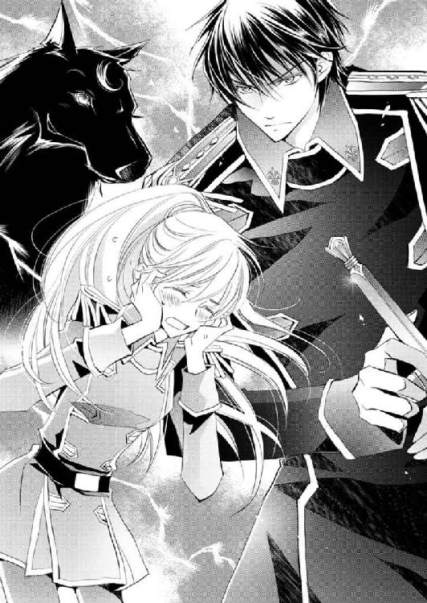
「はっはー、すごいねえ、青春ですねえ。でも白い髪のお嬢さん、あなた結構大変ね」
「──」
今日初めて会ったヴァハラに、半笑いしつつ同情混じりの眼差しでそんなことを言われてしまって、ラウラは身の置きどころがなくなる。
「将軍......、あの、そ、そういうことは、あまり言わないで......」
「なにゆえじゃ、ラウラ。ヒューバートはラウラのことが大好きなのじゃから、別にゆうてもよいじゃろう？」
何がいけないのじゃ、とキルラからも言われて、ラウラの味方はどうやらこの場にはいないようだ。
「あ、じゃがヒューバート、我からもひとつ訂正じゃ。我もラウラのことを可愛いと思うておるからの。ヒューバートだけではないぞ」
「キルラ‐キルレ‐キロルは構わない」
「あれえ、ひいきですよ軍人さん。えこひいき反対！ 吾輩だって白い髪のお嬢さんを可愛いって思ったっていいじゃない～？」
「もう皆さんやめてください......！」
どうしてこんな話になったの、とラウラは顔を真っ赤にしながら叫んだ。
ヒューバートと出会うまで、ラウラを可愛いと言うひとなんて、クロエくらいしかいなかったのに、最近とみに、その言葉が耳に入ってくる。
ヒューバートにそう言われるのは嬉しいけれど、同じくらい恥ずかしいし、何度言われても慣れない。耳が火照って仕方がない。
「ははは、お嬢さんてば可愛いな、......うおっ、マジで剣を抜かないで軍人さん！」
ピチュンピチュ？ ピチュピチュン
先を急がなくてもいいんだべさ？ 仲間までもうすぐだべさ
どうやらこの場で一番冷静なのは、シシハヤのネムリンのようだ。
澄んだ鳴き声に、ラウラとキルラが、ハッと我に返った。
「あ、そ、そうだね。早く行かないと！」
「そうじゃの。ネムリン、すまなかったの」
「なんて言ったんです、そのシシハヤは」
「先を急ぐんじゃなかったのか、というようなことを」
「へ～。こんな小さいのに、思考できるんですねえ。びっくり仰天摩訶不思議ですなあ」
ンピイチュピチュンー
そうだべさ、おいらもちゃんと考えているんだべさー
ふよふよと飛んでいたネムリンが、イーノスに甘えるように黒毛にうずもれる。
「それにしても、どうしてネムリンはそなたにそんなに懐くのであろう？ ロムロもシシハヤに好かれていたが、ネムリンはメロメロではないか」
キルラの疑問はもっともで、ラウラもあらためてイーノスを見つめた。
額のくるんとした毛以外は、それほど特色のない、ごく普通の外見だ。中身は相当個性的だが、内面的な部分は、あまり関係がないように思える。
「イーノス？ 聞いておるのか？」
「......」
キルラの声に、だがイーノスはまったく反応しない。
「イーノス！」
再度叫ぶように名を呼ぶと、ようやく顔をこちらに向けてきた。
「聞いていなかったのか？ なにゆえネムリンはそなたに懐くのじゃろうと言ったのじゃ」
「へえ」
「へえではない。そなた返事がおかしいぞ!?」
「シシハヤってどれくらい脳みそがあるんですかねえ。中を覗いてみたいなって想像していたら、なんかぞくぞくしてきちゃいましてね。まあそれを言ったら、新種のヴァハラくんの頭の中も見てみたいんですよ。なんで同種だけでなくほかの動物の言葉もわかるんでしょうねえ。まあ中を覗いてもわかんないかもしれないですけども」
「......なんと、そなた我を解剖したいとでもゆうのか!?」
「そんな野蛮なことはしませんよー。まあ、見られるのなら見たいなっ！ ていう程度の願望です」
「......」
「なんてことを考えていたから、新種のヴァハラくんの言葉、聞いてませんでしたー。ごめんね！」
てへ、とイーノスはおどけたように笑った。
──なんか、摑みどころのないヴァハラだなあ。
これまでラウラが出会ってきたヴァハラとイーノスは、微妙に違う気がする。
どこが、とは具体的に言えないのだが、ほんの少しだけ、違和感を覚えるのだ。
ラウラが今まで接してきたヴァハラは皆誓約者がいて、自ら望んで人界にやってきた者たちだ。だがイーノスは違う。
その差異による違和感なのかしらと、ラウラは思う。
ラウラ、ラウラ。こやつヒューバートの側近のようなことをゆうたぞ！
キルラがラウラの内で、こっそり話しかけてくる。
──あ、そういえば、出会った頃、エリクソン少佐もそんなこと言ってたね。
なんだか懐かしい。
──人界にいる皆さん、元気かな。
ユリシーズ教主は、舞台の術に空いた穴を塞げただろうか？
まだヴァハラ獣界から、透けた獣たちが押し寄せてきているのだろうか？
自分たちの行く末だけでなく、たくさん気にかかることがある。
──だけど、一歩ずつ進んでいかなきゃ、だね。
うむ！
ラウラとキルラは互いの心を受け止めながら、しっかりうなずいた。
一行は気を取り直し、『果てなしの海』へと向かう。
ヴァハラ獣界にやってきて以来、『祝い森』にいた時以外はしょっちゅう獣たちに追いかけられた。ところがつい最前ヤトと戦って以降、イーノス以外の動物にはまだ会っていない。
そのためラウラたちは、スムーズに『果てなしの海』へと向かうことができた。
「のうイーノス」
「はい、なんですか？」
『果てなしの海』までもう少し、というところで、キルラがイーノスへ声をかけた。
「我とよく似たヴァハラについて教えてほしいのじゃ」
イーノスは思い出したかのように、ふふっと笑った。
「姫のことですね」
「姫？ あの者は姫なのか？」
「いーえー。吾輩がそう呼んでいただけですよ。気位が高くて、他者に頼みごとがあっても、簡単に頭を下げない。誰もが自分に傅き、自分こそが最強と思っている。ワガママな姫のような方じゃないですか」
イーノスの言葉は、リムルをバカにしているように聞こえるが、そんな性質こそが可愛いのだと思っているようだった。
「イーノスとあの者は、どこで会ったのじゃ？」
「吾輩の住処に、姫がやってきたのですよ」
「住処？」
「はい。姫は最強の誓約者が欲しいそうで、そのような人物と会うにはどうしたらいいのかと相談にやってきたのですよ」
──どうしてイーノスさんに相談を？
あのリムルのことだ。最強の誓約者を探すという目的があったのならば、即座に人界に行こうとするのではないかと、ラウラは首を傾げる。
「姫は極度の見栄っ張りで、一度ですら失敗をしたくないのですよ。だからまず、自分より詳しい者に確認してから行動するのです」
「だからイーノスさんを訪ねた、ということですか？」
「はいそうですよ。これでも吾輩、住んでいた森では知恵者として有名だったのです。ま、と言っても、人界で誰が最強かなんて、全然わかんないんですけどもねえ。適当に、人界の王様か、オフラ教の一番上のひとじゃないですかって返事しておきましたけども」
「......」
ラウラがヒューバートを見上げると、彼もまたラウラに視線を注いでいた。
──だからあの仔は、ジェイラス教尊様のところへ行ったのね......。
イーノスが口にしたリムルの性格が当たっているのであれば、ジェイラスが自分ではなくゼノを選んだ、という事実は、受け入れ難い屈辱であったに違いない。
リムルがヴァハラ獣界の女王であるというのが真実かどうかはともかく、強大な力を持っていることは、ラウラも嫌というほど知っている。
「姫、結局誓約できたんですかねえ？」
イーノスの問いに、答える者はいなかった。
──姉さん......。
ラウラの姉、クロエが、ヴァハラ獣界に飛び込んだ時、本来の見事なプラチナブロンドが、黒髪だったという証言があった。
つまりクロエは、ヴァハラと同調をしていたことになる。
誓約者を持たない漆黒の毛色のヴァハラといえば、リムル‐リシル‐リスレしか思い浮かばない。
人界で誓約者のいないヴァハラと出会うなんて、まずない。そのヴァハラとクロエが出会って、一ツ日も経たずに誓約をし、そしてヴァハラ獣界に行くなんて、現実的ではない。
とすれば、やはりクロエが同調していたヴァハラは、リムルだと考える方が自然だ。
リムルは最強の人物と誓約を交わすことを望んでいた。
クロエは華奢で体力もあまりないし、腕力があるわけでもない。リムルが理想とする誓約者からはかけ離れているが、不思議な力を持っている。
未来を占ったり、失せ物を見つけたりするクロエの力を、ラウラは幼い頃から折に触れ見てきた。
リムルは、クロエの不思議な力こそを欲したのだろうか？
だがクロエの目的は？
ラウラに内緒で、別のところへ行くという工作までして。それはきっと、ラウラに心配をかけまいとしたのだろうが、そもそも姉がヴァハラ獣界へ行こうとした理由が、皆目見当がつかない。
ゼノとの誓約は、絶対にしないと言っていたのに、なぜ急に別のヴァハラ──しかもそれがあのリムルだ──と誓約を結んだのか。
──早く追いつかなきゃ。
ラウラの歩が、無意識のうちに速まった。
クロエと同調しているリムルにも目的があるのかもしれないと初めて思い至ったラウラは、その『目的』に、言いようのない不安を覚える。
──姉さん、無茶しないで。お願いだから、『果てなしの海』にいて。動かないで。
「ねえねえ、吾輩も質問をしていいですかあ？ どうしてあなたたちはヴァハラ獣界にやってきたんです？」
イーノスからの質問に、ヒューバートは無言を貫く。
「あれ？ 吾輩はちゃんとお教えしたのに、そちらはお答えくださらないんですか？ ショックだなあ、さびしいなあ、悲しいなあ、泣いちゃおうかなあ」
イーノスはわざとらしく、すんすんと鼻を啜ってみせた。
そうなるとそわそわ落ち着かないのは、リムルのことを訊ねたキルラだ。
「の、のうヒューバート、ちょこっとだけゆうてはならんじゃろうか？」
「......」
ヒューバートは目を眇め、そうして軽く息をつく。
「ラウラの姉を探すためだ」
キルラに任せると、どんどん話してしまうだろうと危惧したのか、ヒューバート自身が口を開いた。
「お嬢さんのお姉さんもこちらにいらしているんですか......!? なんとまあ、いつから人間はやすやすとヴァハラ獣界にやって来られるようになったのでしょう。吾輩びっくり！」
本気で驚嘆しているらしい。イーノスは、珍しく、むむむと唸った。
「もしや吾輩が知らないだけで、人間はしょっちゅうこちらに来ているんでしょうかね？」
「それはわからぬが、少なくともヒューバートは今回が初めてではないのであろう？」
「なんと！ 軍人さんはこれが初めてではない!? この地でヴァハラと同調せずにそこまで自由に動けるとは、人界ではさぞかし人間離れした素晴らしい身体能力なのでしょうねえ。すごいですねえ。羨ましい」
「羨ましい？ なにゆえじゃ？」
「ははは、それはともかく、つまりお嬢さんのお姉さんが、果てなしの海にいらっしゃるということですな？」
そうじゃ、とキルラはうなずく。
その時、ラウラの視線の、遙か先に、チラチラと輝くものがあった。
「将軍、あれ......！」
「『果てなしの海』じゃ！」
一行はようやく、『果てなしの海』に到着した。
ヂュィィ......
いぃとしぃきあぁなたぁ......
ヂュ───ィィィ......
わぁ───がもぉとへ......
吹きすさぶ風とともに、奇妙な音が聞こえる。
クロエ・ファウベルは、目に映る極彩色の景色を見ながら耳を澄ました。
「ねえリー、あれは誰の声？」
「声？ 風であろう」
「風の音じゃなくて、......うーん、メスの虫に求婚ソングを捧げてもそっぽ向かれちゃいそうな、音程の外れたダミ声で歌っているオスの鳴き声っぽいの。『愛しき貴女、我がもとへ』って聞こえるんだよね。さっきから耳について離れないんだよ」
どう表現したら伝わるかしらと思いつつクロエがそう言うと、背後から噴き出す声が聞こえた。
「ははっ、ラウラさんのお姉さんは面白いひとだな」
凄まじい勢いで落ちながら陽気に笑う男へ、クロエは胡乱な目を向ける。
「ねえあなた」
「ロムロ、です。ロムロ・バルディリス」
「ロムロくん。君、ついてくる気？」
「ついてくる気っていうか、ついていかざるを得ないっていうか」
「まあそうなんだけど、なんで一緒に落ちちゃうかなあもう」
「それはあなたが不審人物そのものといった体で舞台上にいらっしゃったからですよ。不審人物を捕らえるのがわたしの仕事ですから」
「別に不審人物になるつもりはなかったのよ。人知れずひっそりとヴァハラ獣界に行くつもりだったんだから」
「なぜ、人知れず？ ラウラさんが心配なさるでしょうに」
「だからラウちゃんが心配しないように、あたしなりに工作してきたのよ。でも君が一緒に落ちちゃったから、もしかしたらバレちゃったかも」
あーうー、どうしよう。
クロエは眉間にしわを寄せつつ、低く唸った。
クロエはまさに今、ヴァハラ獣界へと続く通路を滑り落ちているところである。
姿はキルラにそっくりの、だが性格はかなり曲がった小さきヴァハラ──リムル‐リシル‐リスレと誓約を交わし、ある目的のためにローデリー地区のオフラ教教堂舞台から、ヴァハラ獣界へと飛び込んだ。
だが舞台を警備していた背後の男──ロムロ・バルディリスに腕を摑まれ、そのまま彼までも一緒に落ちることになってしまったのだ。
せっかくひっそりとひと知れず行動しようとしていたのに、これでは計画が台無しだ。
「ラウラさんに心配かけてでも、ヴァハラ獣界に行こうとされたその理由を伺っても？」
ロムロ・バルディリスの問いに、クロエが小さく唇を開きかけたその時、人界とヴァハラ獣界を繫ぐ通路がいきなり消失した。
「うわ......っ！」
青々とした緑の匂いが鼻腔をくすぐったかと思うと、巨大な木が目前に迫っていた。
「わ、わ......」
「うひゃあっ！」
クロエの控えめな驚きの声の一瞬後に、同じ口から頓狂な叫び声がけたたましく発せられる。
「おおっ！」
背後のロムロは、どこか楽しげな声だ。その声と同時に、逞しい腕がクロエの腰に回り、ぐいと引き寄せられる。
そのままクロエを庇うように抱え込み、ロムロは薄水色の葉を持つ木に突っ込んだ。
小さな葉や枝が、頭や頰に擦れぶつかるが、ロムロに庇われているために痛みはほとんどない。だが一気に落ちる感覚に、うわ、と声をあげた。
──地面に落ちる！
思わず目を閉じてしまったクロエだったが、ふいに何か、とてもやわらかなものにふんわりと包み込まれ、ゆっくり視界を開く。
「......あ、れ？」
どうやら自分は仰向けに倒れているようだ、と認識する。
薄水色の葉を持つ大きな木々と、目に痛いほどの青空が見えた。
身体には軍人の腕が巻きついていた。彼を下敷きにしているようだと、遅まきながらクロエは気づく。
「痛、......くない。なんだこれは」
ロムロの不思議そうな声に、クロエは左右に視線を振り向けた。
「あ、水みたいなお布団」
クロエは以前、ヴァハラ獣界に落とされたことがある。
落下の際には意識がなく、気づいた時には、ヴァハラの王、サクリクスが迎えに来てくれたから、ほとんど覚えていないのだが、その時にも、この水でできた布団のようなものに助けられたのだ。
ロムロは『水みたいなお布団』というネーミングが面白かったのか、また笑いだした。
「これはラハヤじゃ」
「『ラハヤ』......。ラウちゃんから聞いたことがあるような」
ヂュイ！
クロエ様！
どういうわけか、布団がクロエの名を呼んだ。
「ん？」
ヂュイ、ヂュイィィ！
お会いしたかった、愛しのクロエ様ァァ！
「んんんん？ ヂュイって音と一緒に、なんか言っているように聞こえるんだけど」
「それは妾と同調しているから、ラハヤのゆうていることがそなたにもわかるのじゃ」
「リーって、キルちゃんみたいにほかの動物の言葉もわかるんだ」
便利だねえ、とのんきに口にした名前は、クロエが同調しているヴァハラ──リムル‐リシル‐リスレには禁句だったのだろう。いきなり目をつり上げて立ち上がった。
「あやつの名を妾に聞かせるでない！」
「んーはいはい、わかったからそんなに怒らないの」
ぞんざいにうなずいたクロエは、落ち着いて周囲に目をやった。
「そなた、ちゃんと妾の話を聞いておるか!?」
「聞いてるよー」
クロエたちが落ちた場所は森の中だった。
人界ではまず見ない、薄水色の葉を持つ木と、その葉とよく似た色の花が群生している。
水色の花は可憐で愛らしく、クロエは、ああ、ラウちゃんに似合いそうな花だなあ、などとのんびり考えた。
清々しい緑と甘酸っぱい花の香りに満たされた森の空気は爽やかで、クロエは深呼吸をする。
二度、胸いっぱいに息を吸い込んだクロエは、さてと、と歩きだした。
「ちょっと待ってください、ラウラさんのお姉さん」
「クロエ・ファウベル」
クロエが名乗ると、褐色の肌の青年は、人懐こくにこりと笑った。
「クロエさん、どちらへ？」
問いつつ、ロムロはよいしょ、と立ち上がった。軍人にしては動きが重いのではないかとクロエは一瞬思い、そしてふと気づいて、ロムロに近づいた。
肩から腕、胸元、腰と、ぽんぽんと順に軽く叩いていく。
「......何をしているんです」
「動きが緩慢だから、もしかして落ちた時あたしを庇って怪我でもしちゃったのかと思ったのよ。でも平気そうね、よかった。あ、庇ってくれてありがと」
ロムロはさらに目を細めて微笑む。
「お気遣いありがとうございます。丈夫なのが取り柄ですので」
「あら、ラウちゃんとおんなじこと言うのね」
最愛の妹を思い出して、クロエもまた笑顔になる。
「ラウちゃん、丈夫なだけが取り柄だから、って自分のこと言うのよ」
「ラウラさんの取り柄はほかにもたくさんあるでしょう」
「そう、そうなのよ！ 可愛いし美人だしカッコいいし気立てはいいしがんばり屋だし手先は器用で料理も上手でとっても優しいしね！」
妹自慢を存分にすると、ロムロは目を丸くする。だがすぐに、面をほころばせた。
「クロエさんはラウラさんが大好きなんですね」
「もちろんよ。あたしの最愛の妹だもの」
「その妹さんを悲しませるかもしれないのに、どうしてヴァハラ獣界へ？ その黒い髪、あなたは今、ヴァハラと同調していますね？ そして同調しているヴァハラは、リムル‐リシル‐リスレ、ですよね？ 彼女はラウラさんやキルラくんを攻撃しましたよ」
あらためてのロムロの問いに、クロエは唇を引き結んだ。
別に秘密にしておきたいわけではない。
ただ、今現在、妹のラウラを悲しませているかもしれないと考えた時、気持ちが沈んでしまったのだ。
──ラウちゃん、あたしがヴァハラ獣界に来たこと、知らされたかな？
もしかしたら、まだバレていないかもしれない。だが舞台にはあの、目端の利くユリシーズ教主や、彼の誓約のヴァハラ、アイネイアスがいた。
同調して黒髪になったクロエを、アイネイアスに見られたかもしれない。
せっかく工作してきたのに、全部無駄になった可能性が高い。
クロエはため息をついた。
「クロエさん？」
「──探し物があるの。だからリーと誓約を交わした上で、ヴァハラ獣界に来たのよ」
「探し物」
「そう。とっても大事な探し物。でも探し出せないかもしれないから、ラウちゃんには言えなかった」
クロエは続けてロムロを見上げた。
大きな男だ。もしかしたら、英雄将軍と謳われるヒューバート・ガーディナーよりも長身なのではないか。
顔を思いきり傾けなければ目と目を合わせられないから、一緒にいると首が凝りそうだ。
そんなことを思いながら、クロエは可憐な唇を開いた。
「そういうわけだから、君はもう帰って」
「は？ なんで？」
「なんでって、あたしの方が訊きたいわよ」
ロムロは、なんでそんなことを言うんですかとばかりに、驚いた顔をしている。だがクロエの方こそ驚きだ。
「君にはここにいる理由なんてないでしょ？ たまたまあたしに巻き込まれてヴァハラ獣界に来ちゃったんだから。ほら、あの辺りに人界に戻る通路があるし、君くらい身体能力が優れていたら、木に登って、えいやーって飛び込めば人界に戻れるよ」
「......ずいぶんずさんなアドバイスじゃの」
ぼそりとリムルが突っ込むが、クロエはさらりとスルーする。
「わたしがひとりで人界に戻ったら、ヴァハラ獣界に飛び込んだのはあなただと報告しますよ。それでも帰れ、と？」
「あ、そっか。......うーん、それは困るな」
「仮にわたしがラウラさんに直接お伝えしなくても、報告した上官が家族であるラウラさんに知らせるでしょうね」
「だよねえ」
クロエは目を眇め、ちらりとロムロを見やった。
その、何かよくないものをたっぷり含んだ視線を受けて、ロムロの穏やかな表情に、ふと緊張が走る。
「......何を考えています？」
「ん？ ラウちゃんにあたしのことが伝わったら困るからどうしようかなあ、と」
「ふははっ、なるほど、自分の用事が済むまでこやつを縛り付けてこの森の中に転がしておくか、あるいは色仕掛けで口をつぐませようか、か。面白い、妾が手伝ってやってもよいぞ」
「あ、リーってば、言ったらダメだよ」
同調しているヴァハラに文句を言うと、ロムロは呆気にとられたように目を見開いた。だがそれも一瞬のことで、腹を抱えて笑いだす。
その笑いが収まるのを待っていたのだが、いつまで経ってもゲラゲラ笑っているものだから、次第にクロエは不機嫌になっていく。
ロムロがようやく笑みを収めたところで、クロエは腰に手を当てて詰め寄った。
「ちょっと、本気でどっちか実行しても構わないんだけど」
するとロムロはまたじわじわと笑いそうになり、それをぐっとこらえたような、おかしな表情をしてみせる。
「クロエさんより腕力のあるわたしをどうやって縛り付けるのか物凄く興味がありますし、色仕掛けもそれなりに心惹かれますが」
ロムロはそう言いつつ、クロエに顔を近づけた。
長身を少し折り曲げるように、優しい気配を漂わせながら、目と目を合わせてくる。
「第三の選択を、ぜひしてもらいたい」
「......君、物好きね」
ロムロが何を望んでいるのか、言われずとも察することができる。──一緒に行く、とこの男は言いたいのだ。
「はい。物好きなんです」
ロムロは鷹揚にうなずいた。
クロエは黒髪をくしゃくしゃと搔き上げ、大きなため息をついた。そして踵を返すと、どんどん歩いていく。
「仕方がないなあ。言っておくけど、君がピンチに陥ってもあたし助けないよ？」
「自分の身は自分で守りますよ。わたしはあなたがピンチの時には助けると思いますが」
「ずいぶん自信があるんだね」
「自信といいますか、ただそうしたいと思っているだけですよ」
「ふーん。軍人さんは大変だ」
「軍人さん、といえば」
ロムロは、ふふ、と笑った。
「何？」
「マントの下のお姿は、どういうわけでその装いになったのですか？」
「ああこれ？ リーがあたしに男装してほしいって言うから」
似合う？ とマントを脱いで、くるりと回ってみせる。
クロエの装いはといえば、軍服だったのだ。
とはいえ、本物の軍服ではない。
ローデリー地区で月末におこなわれる仮装デーに、軍人の扮装をする者は意外と多い。
そのため第二商業区には、仮装用の軍服がふんだんに売られていた。
男性の誓約者がいいとリムルが散々言っていたため、せめて服装だけでも男物にしてあげようという、クロエのささやかな心遣いだった。
ちなみに本物の軍服にはない紫色だ。しかも女性の仮装用のため、ボタンは七色にキラキラ輝くガラス製で、襟元や袖口にはフリルや小さなリボンまでついている。
これだって、クロエからすれば邪魔、無駄としか思えない装飾だが、ひらひらキラキラが大好きなヴァハラ──リムルの好みだろうと、あえてチョイスしたものだった。
普段ラウラに、もうちょっと色合いとか模様の合わせとか考えて、と散々嘆かれている自分にしては、最大限にがんばったつもりだ。
男装しつつ、ふわふわキラキラ。完璧ではないかと、クロエは自画自賛する。
紫色の軍服に、リムルが絶対手離さないと言って持参した赤いショールを身につけたら、色合わせがおかしいと呆れられるかもしれないが、クロエにはそこまでのセンスはない。
「なっ？ ゆうておらん、妾はそのようなこと断じてゆうておらんぞ！」
「ええ？ だって男の誓約者がいいって、あんなにぎゃんぎゃん言ってたじゃない」
「じゃから！ 男と男装では天と地ほども違うであろうが！」
「そんな変わんないってば」
「変わらないはずがなかろうがああ！」
それこそぎゃんぎゃん騒ぐリムルに、クロエはああもううるさいなあとにべもない。
そんなふたりの掛け合いのような会話を半歩下がったところで聞いていたロムロは、にこにこと笑っていた。
「ところでクロエさん」
「何？」
「この、......ラハヤ、でしたか、どうするんです？」
「ん？」
ロムロに言われて振り返ったクロエは、軽く眉間にしわを寄せた。
ヂュイ、......ヂュイィィ
ああ、......やっと振り返ってくださった
ヂュイ
忘れられていたのかと
ヂュヂュヂュイ、ヂュイィ
どうかお供させてください、クロエ様
「えっとね、助けてもらったのはありがたかったけどもね、お供はいらない」
クロエははっきり言い切る。すると水の塊のようなラハヤが、まるで泣きだすかのようにふるふると震えたかと思うと、ひとつがふたつ、ふたつがよっつにと、どんどん分裂していく。
「む？」
リムルもまた、渋面になる。
やがてラハヤは数えきれないほどの水の玉に分かれた。
ヂュイヂュイヂュィィィ！
せめてこの中のひとりだけでもぉぉぉ！
掌ほどの大きさにまで分裂したラハヤが、突っ伏さんばかりにそう叫ぶ。
「うーん」
ヂュイヂュイヂュイ......！
シシハヤはお連れするのにズルイですう......！
ヂュイヂュイ！ ヂュイイイイ～！
水の守護者としてシシハヤは格下ですぞ！ わたしたちの方が絶対役に立ちまする～！
「シシハヤ？ 何それ」
「ああ、この子たちのことかな？」
ロムロが軍服のポケットの中から、青白い小さな魚をそっと出した。
「人界に来ていた子たちで、どういうわけか懐いてくれて......あれ、一匹足りない」
五匹いたはず、と首を傾げるロムロの周りを、四匹のシシハヤがふわふわと飛んでいる。
ンピチュー、ピチュ！
ンピチュ、ピチュピチュ
本当だ、足りないべさ！
どこへ行った、あやつは本当にのんき者だべさ
「なんか迷子になっちゃったみたいだよ？」
クロエが通訳すると、ロムロは心配そうに辺りを見回す。
「たかだかシシハヤ一匹、どうでもよかろう。とっととゆくぞ」
クロエ......リムルは歩きだしかける。だがぞろぞろついてくるラハヤを振り返り、
「貴様らはついてくるなや！」
一喝した。
すると雷に打たれたかのように、ラハヤたちは地面スレスレにまで落ちていく。
ヂュイ、......ヂュィィ、ヂュイィィィ
なんと、......恐ろしや、クロエ様の内にいるアレはなんだ
ヂュイ、ヂュイィィ
恐ろしや、恐ろしや
ラハヤたちはうち震え、クロエに近づこうとしない。
「こっ、こんなにこんなに可愛らしい妾に対して、恐ろしいとはなんじゃ！ この不届き者めらがあ！」
「リー、今同調中だよ。リーが可愛いかどうかなんて、ラハヤにはわからないでしょうが」
「あっ、むう、ラハヤどもめ、妾の真の姿を見たら、あまりの可愛さにびっくり仰天するに違いあるまいぞ！」
ぷんぷん怒るリムルに、クロエは呆れたように肩を竦める。
「リーってばなんでそんなに自分に自信があるのかな。すごい偉そうだよね」
「偉そうではなく偉いのじゃ。妾はヴァハラ獣界の女王であるぞ。妾はかつての王、サクリクスに勝利したのじゃからな！」
「えー、噓言ったらダメだよ。サクリクスくんに追いかけられてびっくりして怖くなって、薬をぶちまけただけじゃない」
あっさり暴露すると、リムルはクロエの内で絶句した。だが次の瞬間、カァッと頰を紅潮させ、勢いよく手を振り回す。
「うっ、噓ではない！ 妾は噓などついてはおらん......！」
「だからあたし全部視ちゃったって言ったでしょ？」
「断じて噓ではなぁぁぁぁい！」
「おふたりとも、傍から見ているとすごく面白いんですけど、そろそろやめません？」
ロムロの声に、はた、とふたりは我に返った。
見ればロムロとラハヤばかりか、森にいたらしい動物たちに、周りを囲まれていた。
「あら」
少なくとも両手指の数以上の種類の動物がいた。親子連れが多く、ラウラだったら目を細めて可愛い可愛いと喜ぶことだろう。
動物にさほど興味のないクロエは、ずいぶんたくさんの種類がいるのねと思う程度だったが、ロムロは別の方面に思考を傾けていたようだ。
「大小さまざまな動物がいますね。天敵じゃないのかな？」
「そういえばそうだね。あっちの子の牙はどう見ても肉食獣なのに、こっちの草食動物にしか見えない子たち、ずいぶんのんびりしているなあ」
「ここが『祝い森』じゃからじゃ」
「『祝い森』？」
ここはヴァハラ獣界の獣たちが出産する森で、中では殺生が禁じられていると、一旦怒りを収めたリムルが説明をしてくれた。
「へー。そういうの誰が決めたんだろうね。ていうか、動物がその決まりを守ってるっていうのが驚き。ね、リー」
確かに、とロムロもうなずく。
その問いへの返事は、リムルからはなかった。
「どうでもよい。ゆくぞ。そなたには、目的があるのじゃろう」
「そうだった。行こう」
再び歩きだす。
だが十歩ほど進んだところで、クロエの足がぴたりと止まった。
無言のまま振り返る。
ついてくるなとリムルが一喝したラハヤばかりか、動物たちまでもが、クロエの後ろにずらりと並んでいたのだ。
あ、振り返られた！
おお麗しい！
もっとこちらにいらしてー！
なんという芳しい香りなんでしょう......
お供させてくださいませ、クロエ様
「......さっきは便利ねって思ったけど、撤回する。すごい、面倒」
動物たちの声が次々と聞こえてくるものだから、頭がクラクラしそうだ。
「むううう、そなただけがヴァハラ獣界の者たちを惹きつけるのは納得できん......！ 妾はヴァハラ獣界の女王であるぞ。愛され慕われ心砕かれるべきは妾であろう！」
笑い上戸らしいロムロなど、ずらりと続く動物たちを見るなり、肩を震わせて笑いだす始末だ。
「妾はついてくるなとゆうたはずじゃ！ 貴様ら目障りじゃ、散れえ！」
再びの雷の如き怒声に、小さな獣たちは思いきり跳ね上がって逃げだす。大きな動物は、いずれも驚いたり退いたりしたが、中には逃げない者もいた。
連れて行ってくだされ！
クロエ様
クロエ様──！
「気持ちだけ受け取っておく。ついて来ちゃダメだよ。絶対ダメだからね！」
リムルの言葉が本当ならば、ここにいる動物たちは皆出産前後のはずだ。身重か赤ん坊がいるはずで、そんな動物たちについて来られてもすごく困る。
クロエは全力で走る。
お待ちください～～ッ！
それでもしつこく追いかけてくる動物もいて、クロエは、あーもう！ と拳を握った。
すると隣を走っていたロムロが、振り向きざま剣を抜いた。
「ちょ、ロムロくん何するの!?」
抜刀なんて、まさか斬らないでしょうねと慌てていると、ロムロは追いかけてくる動物たちからじゅうぶん距離を取った場所で、一度目は水平に、二度目は垂直に、凄まじい勢いで剣を振った。
ビリ、と空気が震える。
気が、放たれる。
その気に触れた動物たちは、つんのめるように肢を止めた。中にはキャッと鳴き声をあげてひっくり返る小動物までいた。
シン、と静まり返る獣たちへ、ロムロは鷹揚に微笑む。
「クロエさんの警護はわたしに任せ、あなた方はご自身の子育てに、全力を注いでください。皆さん、どうぞよい親となってくださいね」
人間の言葉など伝わるだろうか？
だがきっと、ロムロの強い気は感じたはずだ。クロエにだって伝わってきた。
剣を振る姿はずいぶん男前だが、周囲を四匹のシシハヤがうろちょろしているので、どうにも締まらないなあ、とクロエは呟く。
「なんていうか、面白い子ね、ロムロくんて」
「変人とゆうのではないか、ああゆうのは」
「はは、変人はひどいな。変わり者くらいにおっしゃってください」
「大して変わらん」
「ええ？ 変わりますよ。男と男装くらいには」
朗らかに笑いながら、ロムロはクロエの隣に並んだ。
歩を踏み出すが、今度こそ動物たちはついて来なかった。──ラハヤを除いては。
「どうしますか？」
振り返ったロムロへ、クロエはうーん、と唇を尖らせる。
「あの子に関しては、とりあえずほっとくか。命の恩人だし、そう無下にはできないし」
「じゅうぶん無下にしていると思うがの」
ぼそりと呟いたリムルの声は無視だ。
クロエの『許し』が伝わったのか、水の玉のようなラハヤたちが、列をなしてついてくる。
面倒だが仕方がない。
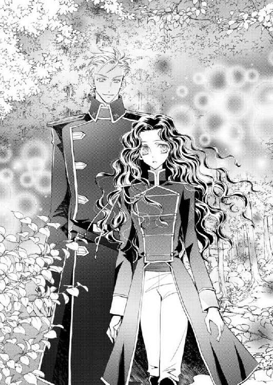
しばらく歩くと、森の終わりが見えてきた。
「ところでどちらへ向かうのです？」
もっともな問いに、クロエはロムロに目をやった。
漆黒の瞳は純粋な興味の光に溢れていて、周囲ではあまり見ないタイプだなと思う。
クロエに色目を使わない異性はあまりいないから、こういうタイプは付き合いやすい。
ラウラの恋人である英雄将軍や、オフラ教の教主なども、女としてのクロエに興味を持っておらず、欲が見えないから、話をしていて楽だ。
──将軍はラウちゃんの姉って目で見るし、教主様はあたしを女としてじゃなくて、不思議な能力を持つ人間として興味を持っているみたいだけど。
それでも妙な空気を持ち出されないだけマシというものだ。
そんな中、ロムロはそのふたりのどちらでもない雰囲気で接してくるから、なんとなく面白い。
「クロエさんの瞳は不思議色ですね」
「不思議色？ そうかな」
「ええ、薄い紫色の、その内側に、青というか翠というか、そんな色も見えます。不思議色」
近くで目を覗くと、ロムロはにこりと笑う。
「君の持つ色も面白いんじゃない？」
「肌が黒いのに金色の髪だから、奇妙ですか？」
「奇妙っていうか、綺麗って意味なんだけど」
「ありがとうございます。わたしの国では金髪は魔者の印と忌み嫌われているので、そう言ってもらえるのは嬉しいです」
へえ、とクロエは目を丸くした。
「なんでひとって、色がちょっと違うくらいで人外認定しちゃうんだろうねえ。狡猾な魔者だったら、きっとほかの人間と変わらない、ごく普通の目立たない姿を取ると思うけどな」
クロエの弁に、ロムロは瞠目する。かと思ったら、じわじわと双眸を細めて微笑んだ。
「確かに」
「行き先はね、『はじまりの森』ってところ」
クロエはロムロに場所の名を告げた。
「『はじまりの森』」
「うん。そこに、あたしの探し物があるはずなの。ね、リー」
「......そうじゃ」
それまで珍しく黙り込んでいたリムルが、小声でうなずいた。
「どうかした？ リー」
「なんでもない。別に貴様らの話に聞き入っていたわけではないぞ」
クロエとロムロは目を合わせる。
力はあるが、まだ幼いらしいリムルは、たまにこうして無意識のうちに己の心の内を吐露する。それがなんだか面白い。
ロムロにもそれが伝わったのだろう、目を細めて柔和な表情をしている。
「何を笑うておる」
「リムル‐リシル‐リスレは可愛いなと思ったんですよ」
「無論、妾は可愛いぞ」
「んー、そういうところは可愛くないんじゃないかなってあたしは思うけど」
「何を!? 可愛い妾を可愛いとゆうてもよいじゃろう！」
「そこはさ、ほら、謙遜しとけってことよ」
「謙遜？ そのような言葉、妾は知らん」
きっぱりそう言うリムルに、クロエもロムロも笑った。
「さ、『はじまりの森』に行こう。リー、案内頼むね」
「むう......！ ふたりとももっと妾を敬え！ 貴様ら、妾がいなければこの広いヴァハラ獣界で迷子になること必至じゃぞ！」
「その時はリーだって迷子じゃない」
「わ、妾は迷子になぞならん！」
「だったら一緒にいるあたしたちも迷子にはならないよ」
クロエとしてはごく当たり前の返しをしたのだが、リムルはそれがひどく悔しかったようだ。
「むきゃー！ 貴様、妾に口答えするでない......！」
「あ、なんかキルちゃんみたい」
と口にしてしまったものだから、一層リムルは憤る。
ぎゃんぎゃん騒ぎながらの道中は、退屈する暇もないかもね、とクロエは軽やかに歩を進めた。

クロエとリムル、ロムロの三人組の旅は、確かに退屈とは無縁になりつつあった。
「なんというか、大行進、という感じですね」
苦笑混じりのロムロの声は当然聞こえたが、クロエは振り返らない。
見てもうんざりするだけだからだ。
ヴァハラ獣界にやってきて、二ツ刻から三ツ刻は経っただろうか。
人界は真夜中だったが、到着したヴァハラ獣界は日中だった。今はそろそろ日が傾きはじめている。
クロエはあまり身体が丈夫ではなく、激しい運動はできない。だがリムルと同調しているためか、歩き続けてもまったく疲れていなかった。
「貴様ら目障りじゃ、散れ！」
「リー、放っておきなよ」
「そなたは嫌じゃないのか!? ゾロゾロとついて来られて」
「言っても聞かないんだからしょうがないじゃない。別に襲ってくるわけじゃなし、害はないでしょ。うんざりするだけで」
『祝い森』を出た時には、ついてきたのはラハヤのみだったのだが、今はもう、数えるのも面倒なほどの動物たちが、まるで人気の菓子店の新作ケーキを待ち兼ねている客のように列をなしている。
彼らのお目当ては、甘いケーキならぬ甘い香りを纏うクロエ・ファウベルだった。
なんていい匂いだろう......
うっとりするわねえ
もっとおそばに寄ってもいいかしら
行きましょう......！
さざなみのように、そんな声が絶えず聞こえてくるのだから、うんざりもする。
しかもうんざりするのは、動物たちにばかりではなかった。
彼らがクロエに賛辞を送るたびに、中のリムルがキリキリと悔しがるのだ。
悔しがるだけならまだしも、一度怒りを募らせるあまり、動物たちに向けて大きな光を放射したのはまったく勘弁してほしかった。
その光を見て恐れた動物はごくわずかで、『素晴らしい力』だと、なおさら懐いてくる者の方が多く、リムルのやったことはまったく逆効果だったのだから。
「あとからシシハヤの一匹も追いかけて来るのじゃぞ。これ以上うるさくなっては敵わん！」
「シシハヤって念が使えるんですね。便利だな」
ロムロが気にしていた迷子の一匹だが、四匹と念を送り合い、ヴァハラ獣界には戻ってきているのだという。
四匹が「こっちに向かっているそうだべさ！」と大層嬉しそうにしていたから、そのまま伝えたら、ホッとしたようにロムロは笑っていた。
「それより、そろそろはじまりの森に着く頃じゃないの？ 祝い森から歩いて行ける距離だって言ってたよね？」
「確かに見えてもおかしくないですね。大きな森なのでしょう？」
「うむ、そうじゃ。白と黒の葉が茂る、陰鬱な森であるぞ。先刻の祝い森とは比べ物にならぬほど大きいのじゃ。たとえば人界の町ひとつ、すっぽり入るくらいじゃぞ」
「へえ、じゃあ本当に見えないのはおかしいな」
クロエは首を傾げ、無駄とは思うが背伸びをしてみた。フラットな大地が広がるばかりで、森らしいものはまったく見えない。
「おや？」
クロエより長身のロムロが、何かを見つけたように声をあげた。
「川がありましたよ。なんだか面白い色をしています」
「面白い色？」
「ええ、赤青黄の色をしています」
「へえ！」
さらに進んでみれば、確かにロムロが言うように、面白い色の川が流れていた。その川伝いに歩いていくと、だんだん色が増えていくように見えるから興味深い。
「クロエさん、あちら」
ロムロが指し示す方を見ると、眩い鏡のような水面が見える。
「海か湖でしょうか？」
「む？ 海じゃと？ ......おかしいのう」
リムルの呟き声はごく小さなものだったが、クロエにはしっかりと聞こえた。
「おかしいって、何が」
「な、なんでもない。ゆくぞ」
クロエとロムロは顔を見合わせるが、はじまりの森へ行くには、リムルの案内が必要だ。
ふたりはそのまま進むことにした、のだが。
「──」
「──」
「綺麗な海だねえ。赤や青や黄色や緑、紫にオレンジ、ピンクの色の水なんて、人界じゃ見たことないよ。ヴァハラ獣界すごいねえ」
クロエはそう言いつつにっこり笑った。
「クロエさん......、顔怖いですよ」
「ん、何か言ったかな？ ロムロくん」
クロエがちらりと睨むと、ロムロは苦笑して首を振った。
「はじまりの森って、白黒の葉を持つ木が群生している大きな『森』だよね、リー」
「......そうじゃ」
「ここには木一本ないけども、はじまりの森はどこ？」
「......」
リムルはとうとう、ふっつり黙り込んでしまう。
「──間違えた、ね？」
クロエがはっきりとそう言うと、中でリムルが低く唸った。
「ちょ、ちょっぴり方向を違えただけじゃ！ 別に間違えたわけでは」
「思いきり間違えているでしょうが。間違いは認めなよ」
クロエがあっさり追い込むと、またしても子犬のように唸る。
「まあ、間違えたのは仕方がないので、どうします？ そろそろ日が暮れそうですが、はじまりの森はここから近いのでしょうか？」
「......、う......」
「ん？」
ロムロが耳を傾けつつ、顔を近づけてくる。
「ここから歩いてゆけるが、今からじゃと夜になってしまうとゆうたのじゃ！ 何度も言わせるでない......！」
逆切れをされて、ロムロは思わず苦笑している。
「ねえリー、あなた本当にはじまりの森の場所、わかってるよね？」
「もちろんじゃ。妾が人界にゆくまで住んでいた場所であるぞ......！」
それなのに場所を間違えるとは......。
「もしかしてリーって方向音痴なの？」
まさかの方向音痴疑惑に、クロエがそう問うと、リムルはふっつり黙り込む。
「え、本当に方向音痴？ ちょっと、動物が方向音痴ってどうなのよ？」
「な、何度も方向音痴とゆうでない。そなた失礼じゃぞ！」
「いや、失礼とかなんとかじゃなくって、ちょっとロムロくん、大笑いしている場合じゃないって。この子もしかしたら場所わからないかもしれない疑惑が勃発しているんだよ!?」
うははははと遠慮なく笑っているロムロに、クロエは唇を尖らせる。
「それは、そうなんですけど、本当に動物が方向音痴って、考えたらなんかおかしくてたまらなくて......！」
盛大に笑われたリムルは、クロエの中でわなわなと震えながら絶句していた。
「わ、......笑うでなぁぁぁいいい！」
リムルはそう言うや、滅多やたらに光を放出しはじめる。
周りにいた獣たちは、慌てて逃げ惑う。
「ちょっ、リー、やめなよ......！」
「うるさい、黙るのじゃ。妾をバカにする者は誰であろうと許さぬぞ！」
「別にバカにしたつもりはありませんよ、リムル‐リシル‐リスレ」
「ならば笑うでない～～ッ！」
リムルの光が、あわやロムロに激突しかける。それを、抜群の身体能力を持つロムロは、ひらりとかわした。
クロエの身体が、ふわりと宙に浮く。
十ガラン（歩数にして十歩程度）ほど上がったところで、白い砂浜にいる動物たちを、キッと睥睨する。
「妾は貴き血を持つヴァハラであるぞ。誰であろうと、この妾を笑う者は許さん。妾に跪き、忠誠を誓うのじゃ──！」
闇を纏ったかのような、漆黒の美しい髪をなびかせながら、リムルは遙か遠方にまで轟けとばかりに叫んだ。
それは、笑われた羞恥から発せられた、強大な怒りだった。
クロエからすれば、笑われたくらいでどうしてそんなに怒るのか、まったく理解できない。
ロムロが笑ったのだって、なんの含みもない。リムルが方向音痴だという事実が、ただ面白かっただけだろう。
だがリムルはその笑いを、嘲笑されたと感じたのかもしれない。
身体が熱い。この熱さは、リムルの怒りだ。
その熱が光となり、砂浜一帯を煌々と照らした。
凄まじい眩さに、クロエ自身も目を閉じる。
だがその光が、ふいに消失した。
そしてそのままクロエは、砂浜に向かって落ちてしまう。直前でロムロが抱き留めてくれた。
「うう、笑う、でない......」
「ええ、すみませんでした。謝りますから、とりあえず落ち着いて」
癇癪を起こした子どもを抱きしめるように、きゅ、きゅ、とやわらかく力を込められる。
リムルはむずかって首を振ろうとするが、力が入らず、結局ロムロに身を委ねた。
クロエの中で、何やらぼそぼそと言い訳めいたことを呟いている。
「うーん、まずい。ちょっと身体に力が入らない」
もともとあまり丈夫ではないのだ。リムルに無茶をされると、クロエにもダメージがダイレクトに来てしまうようだった。
ロムロはクロエを抱き上げたまま、辺りを見回した。
今にも日が沈みそうだ。今夜はここで野宿ですねと言いながら、ロムロは白い岩を背に、クロエを座らせた。すかさず下に滑り込んできたのは、『水みたいなお布団』ことラハヤだ。
おかげでごつごつの岩と砂場は、極上の布団の感触に変わる。
「動けない......」
「目を閉じて、ゆっくり休んでください」
「......早く見つけなきゃ」
「ええ。ですがまず、探し物を探すために、動けるようにならないと」
「......んー。あのね、ロムロくん」
「はい？」
「丈夫なのが取り柄って、ホントすごいと思うのよ、あたし」
目を閉じながら、クロエはそう言った。
「だって丈夫だったら、ちょっとくらい無理しても大丈夫でしょう？ 丈夫じゃないと、ちょっと無理しただけでも、次の日起き上がれなくなったりしちゃうんだもの。そういうの、嫌だなあって思うんだ」
「体力的に無理ができないのならば、体力以外のところで無理をすればいいのでは？」
クロエは、目を開けた。
七色の海は夕焼け色に染まり、人界で見る海とほとんど同じだ。
──ああ、子どもの頃、よく海に行ったなあ。
ここではない、その海を思い出すクロエの横で、ロムロはいつものように柔和な笑みを、その面に浮かべていた。
「ねえロムロくん、体力以外のところって、どこで？」
「たとえば頭を使ったり、使える人間を手のうちに引き入れて自分の思うままに動かしたり？ 色仕掛けも効くかもしれませんね」
ふざけてではなく、真面目に言いつつユーモアも感じさせる答えに、自然に笑みが零れた。
「ふふ、それ、悪くないね」
「ね？ だからとりあえず今は、わたしやラハヤを使って、あなたは休んでいてください」
「......ありがと」
ロムロは穏やかな表情でうなずくと、よいしょ、と言いつつ立ち上がった。
「ロムロくん、それおじいちゃんみたいだよ。癖なの？」
クロエが注意すると、ロムロは初めて気づいたように、ごく軽く目を見開いた。
「ああ、本当に。気をつけますね」
にっこり笑って、食べ物を探してきますと歩いていく。
「あれ、こっちに温泉が湧いていますよ」
「え？」
「クロエさん、あとで動けるようになったら入るといいですよ。いい湯加減っぽいです」
少し離れたところで、ロムロが声をかけてくる。
「じゃあ一緒に入ろうか」
温泉があるならぜひ入りたいけど、体力がいつ戻るかわからないし、ひとりで入ったら危ないかも、と返すと、遠くでむせる音が聞こえてきたから、クロエは、悪戯っぽく舌を出した。
「意外と色仕掛けも効くかも？」
そなた悪趣味じゃのう。
リムルの呆れたような声に、クロエは小さく肩を竦めた。
──かもね。それよりリー、落ち着いた？
む、とリムルが唇を尖らせるような気配を感じる。
──別に怒るのもいいけどさ、わかったでしょ。あたしそんなに体力ないのよ。もっとちゃんと考えて、無駄な力は出さないで。でないと、必要な時に必要な力が出せなくなるからさ。
そんな軟弱な身体で、......、......を、──のか？
リムルの声が、切れ切れに聞こえてくる。
──ああ、なんか、眠い。
目を閉じていると、睡魔がどっと押し寄せてくる。
人界は真夜中だったが、ヴァハラ獣界は日中で、そのままずっと歩き続けたのだ。
疲れているんだなと思いつつ、クロエはラハヤに包まれながら、すとんと眠りについた。

そのままうっかり、本当についうっかり、朝まで眠ってしまった。
思っていたより、自分は疲れていたようだと、クロエは振り返る。
眠りすぎたくらいなので、今朝は元気いっぱいだが、リムルには呆れられ、ロムロには気遣わしげな目を向けられた。
「うーん、ごめんごめん、もう平気だよ。お腹が鳴っちゃうくらい」
「あ、とりあえずご飯です。砂地に生えていた植物の根っこについていた実と、同じく砂地に咲いていた花の実、あと海藻と貝類」
ロムロの上半身が裸なのは、どうやら海に潜って食料を採ってきたから、らしい。
「全部食べられるのかな？」
「昨夜と今朝食べてみましたが、大丈夫でしたよ」
ごく軽くそんなことを言うから、クロエは呆れた。
「毒があったらどうするの」
「それはまあ運で。というのは冗談です。動物たちが食べていたから、人間が食べても平気かな、と」
それでもじゅうぶんアバウトだが、クロエは礼を言って勧められるまま口にした。
根についていたという実は、温泉に一晩中つけていたようで、ほっくりとやわらかい。花の実はほんのり甘く、海藻と貝類でつくられたスープは塩気が絶妙で、ちょっとびっくりするくらい美味しかった。
「うわ、すごい、美味しい」
差し出された分をすべて食べ終えると、クロエはさっそく立ち上がった。
「温泉に入りたいけど、先を急ごうか」
ヂュイ、ヂュイィ
クロエ様、クロエ様ぁ
ずっとクロエの下で布団になってくれていたラハヤが、そろりと声をかけてくる。
「ん？」
あのですねえ、ひと言申し上げたいのですがあ
「何？」
はじまりの森なのですが、あまり、近寄らない方がよろしいのではないかな、と
「え、なんで？」
ラハヤは小さく震えながら、そっと囁いた。
あそこはですねえ、近寄ってはいけない場所なんです
クロエは一度、瞬きをした。
そして内にいるリムルを、そろりと探る。
リムルからの反応はなかった。
人界に来るまでそこで暮らしていたというリムルが、育った場所をそんなふうに言われて怒らないはずがないのに、彼女は喋ろうとしない。
「どうして近寄ってはいけないと言われているの？」
だからクロエは、ラハヤにそう問うた。
ラハヤはもじもじと震える。だがラハヤにとって、クロエの言葉は絶対のようで、やがて話しはじめた。
あそこは、神が住まう場所です
「神様が住んでいるなら縁起のいい場所じゃないの？」
神は貴き存在ですが、恐ろしくもあります
神の前では、我らなど塵芥も同じ
はじまりの森は、名のとおりはじまる場所なのです
はじまりとは生まれいずる場所
生き物が生まれてくる場所なのです
ラハヤはヂュイヂュイと続ける。
『祝い森』と似ているのかと思ったが、どうもニュアンスが違うようだった。
クロエは、ふるふる震えるラハヤを見据えた。
「心配してくれているんだね」
でも、とクロエは続ける。
「でもね、あたしはその場所に行かなければいけないの。そこに、探し物があるから」
クロエはきっぱりとそう言うと、しっかり足を踏みしめて歩きだした。
ラハヤはためらっているようだったが、それでもクロエについてきた。
──ヴァハラの、神、か。ねえ、リー。
胸の内で、ひっそりとリムルを呼ぶ。
──怖がられているね。はじまりの森に住む神様。
クロエは囁いた。
だがリムルからの返事はない。
──リー、ねえ、リー。
......なんじゃ。
──本当にリーは、方向音痴だから、はじまりの森への行き方を間違えちゃったの？
わ、妾とて、ちょっぴり間違うことくらいあるわ！
──別に責めているわけじゃなくて、リーは会いたくないのかなと思っただけだよ。
「会いたくない？ 誰のことをゆうておるのじゃ」
リムルが声にして問うてきたから、クロエも心の中ではなく、唇に言葉を載せた。
「リーは、リーのお母さんに会いたくないのかなって思ったんだ」
と。
「あれが、『果てなしの海』......！」
ラウラは半ば走るように歩を進めた。もちろんヒューバートも同様だ。
「吾輩ちょっと飛んで先に見てきますよ。人間がいたら、お知らせしますねえ！」
そう言うや、イーノスは音もさせずに上昇した。あっという間に姿は小さくなる。
イーノスを追いかけるように、ラウラたちもとうとう走りはじめた。
「ラウラ、疲れていないか？」
「わたしは大丈夫です。将軍こそ、あまり無茶しないでくださいね」
ここは人界ではない。ヴァハラ獣界ではヴァハラと同調していないと、押し潰されそうなほどの圧に苛まれることになる。
イーノスが言うように、人並み外れた体力と身体能力を持つヒューバートだからこそ、こうしてヴァハラ獣界にいられるのだ。
ヒューバートは、体調を慮るラウラの言葉に、やわらかく目を細めてうなずく。
やがて到着した『果てなしの海』を見た途端に、ラウラは、わあ、と声をあげた。
「すごい......！」
ヴァハラ獣界へと繫がる通路で一瞬だけ見えたが、実際こうして目にした『果てなしの海』は、想像していた以上に煌びやかで美しかった。
目の前に広がる海は、陽光を受けて、本当に様々な色が瞬いている。
水平線の辺りは群青色、手前は淡い青。その青に光が当たった途端に、鮮烈なオレンジ色に変わる。さらに赤、黄、紫と、どんどん変化していくのだ。
白い砂浜に寄せては返す波も、様々な色をしている。
「なんて綺麗。万華鏡みたい......」
あまりにも美しくて、ラウラはその光景に、ぽぅ、と見惚れた。
だがすぐに、この海にやってきた目的を思い出したラウラは、周囲を見回した。
「少しだけ上昇してみるのじゃ。ヒューバートからなるべく離れないように気をつける。よいか？」
以前上昇しすぎてヒューバートを心配させたことを覚えていたキルラがそう言うと、もうひとりの誓約者は周囲を見回し、そしてうなずいた。
「うむ、行ってくるのじゃ！」
「行ってきます！」
ラウラとキルラは、白い砂を蹴って、勢いよく飛び上がった。
上から見る『果てなしの海』は一層眩い。宝石を砕いてばら撒いたように、光と色が乱舞する。だがラウラは、その美しい海から視線を引きはがし、緩やかなカーブを描く海岸線に目を凝らした。
ひとどころか、動物一匹いない。動くものといえば波だけだ。
ただただ真っ白な浜辺が続くばかりの中、視界の端に、辛うじて岩場が見えた。
「ラウラ、あの岩場に移動してみるのじゃ」
「うん！」
下方に目をやる。
ヒューバートはほぼ真下にいて、ラウラが動くたびに、自らも移動しているようだった。
「将軍、あちらに行きます！」
叫んで岩場を指すと、うなずいたのが見えた。
ラウラとキルラは、岩場まで飛んだ。
白っぽい岩は、海同様に陽光を反射してとても眩しかった。
目を細めて、それでも必死にクロエたちを探すが、やはり見当たらなかった。
「......いないのう」
「......うん」
がっくり肩を落としていると、水平線からイーノスが飛んできた。
「お嬢さ～ん！」
ネムリンと一緒に、ぶつかるようにイーノスが接近してくる。
「わ」
「ここ海って呼ばれていますが、湖なんですねえ！ 向こう側にも岸がありましたよ」
「え、そうなんですか？」
ずいぶん大きな湖だなと驚いていると、イーノスはこくこくとうなずいた。
「それで、ひとがいないかぐるりと湖を一周してきたんですが、いませんねえ」
ンピチュピチュ
移動してしまったようだべさ
イーノスと一緒にいたネムリンもそう付け加える。
「......そうですか」
目に見えて消沈するラウラに、イーノスは、ニ、と牙を見せて笑う。
「まあそう落ち込まないで！ 吾輩いいものを見つけましたぞ」
「いいもの、ですか？」
「そうそう。ほら、あの岩場に下りてみましょう」
ちらりと砂浜にいるヒューバートに目を向けた。──剣の柄に手が置かれている。
ラウラとイーノスの距離が、ヒューバートには許容できないくらい近いのだろう。
──わ......。
ラウラが腕を伸ばしても触れられないほどには、距離を保っているのだが、早く下りなきゃと急いでうなずいた。
ふと、イーノスの前肢に血のようなものが滲んでいることに気づいた。
「イーノスさん、前肢、怪我していませんか？」
「え？ ああ、うん、そういえばさっき岩場に引っ掛けちゃいましたあ」
「大丈夫ですか？ 薬、ありますけど」
「平気ですよ。ありがとうお嬢さん。さて」
下方に向かうラウラについてきたイーノスのスピードが、いきなり増した。
「これがいいものです。ほぉら！」
「わ、わあぁぁ───ッ!?」
イーノスがいきなりラウラに体当たりしてきたのだ。そして岩場に囲まれた水溜まりに、勢いよくドボンと落ちてしまう。
「ひゃあっ！」
冷たい！ ......と、思いかけたところで、あれ、と首を傾げる。
「おお？ 温かいのう。ラウラ、温泉じゃ！」
「ぐはっ、ま、待って待って軍人さん、斬らないで......！ 吾輩お嬢さんにゆっくり温泉に浸かってもらいたかっただけなんです～～ッ！」
焦るイーノスの声に、頭からずぶ濡れになったラウラは、慌ててそちらに顔を向けた。
ヒューバートは、ごつごつとした足場の悪い岩の上に立っていた。そして今度こそ抜刀し、剣をイーノスの喉元に突きつけていたのだ。
「お嬢さん、助けて～！」
「し、将軍、......わたしもキルラも大丈夫、です」
「うむ、ここは温泉じゃぞ、ヒューバート。あったかくて気持ちよいのじゃ」
だがヒューバートは剣を退かず、ちらりとラウラたちを見下ろす。
「ほら、軍人さん、お嬢さんも新種のヴァハラくんもそう言っていることですし！ 吾輩親切心でやったのですぞ。年頃のお嬢さんだったなら、一ツ日でも入浴抜きってちょっと辛いのではないのかなあと思ったわけですよ！」
確かに、イーノスが言うように、昨夜入浴できなかったのをちょっとだけ気にはしたけれど、人界と同じように過ごせるとは、ラウラだって思っていない。何よりクロエを探すのが第一の目的なのだから、少々の不便くらい我慢できる。
──なんでイーノスさん、人界の女の子の気持ちがわかるの？
だがそれで、服を着たまま温泉に突き飛ばすなんて、イーノスは親切心だったかもしれないが、正直ありがた迷惑だ。
軍服がびしょ濡れになってしまったではないか。
はあ、とため息をつくラウラとは異なり、同調しているキルラは、常から入浴大好きとあって、嬉しそうだった。
「なんともよい湯加減じゃのう。のうのう、ヒューバートも一緒に入らぬか？」
「は？ キ、キルラ、何言うの......!?」
「おお、よいですなあ。吾輩も入り......ぐはっ、や、刃が喉元にもはや食い込みそうですぞ、軍人さん......！」
イーノスを見下ろすヒューバートの眼差しは、静かに凪いでいる。ところが内心は、かなり物騒なことを考えているようで、一向に剣を収めようとしない。
「......将軍」
「ヒューバート、とにかく我とラウラは、このまま湯に浸かることにするがよいじゃろうか？」
ヒューバートの瞳が、イーノスからラウラへと向かう。
頭からびしょ濡れのラウラを見つめ、そうしてこのまま即移動はできないと思ったのだろう、ため息をついてうなずいた。

「湯～、湯～、よい加減じゃのう、ラウラ」
「そ、そうだね......。ね、キルラ、そろそろ上がらない？」
「む？ 入ったばかりではないか。まだ身体の芯まで温まってはおらぬぞ？」
しまった、キルラは大の湯浴み好きでしかも長湯好きなのだ。
ラウラとの入浴後にも浴室に残り、ヒューバートとも一緒に入るほどだった。
「いや、でもね」
「確かにラウラの姉の行方は心配じゃが、今ネムリンが仲間と交信してくれておるじゃろう？ 居場所がわかるまで、我らもここから動けぬぞ」
「それは、そうなんだけども」
確かにとてもいい温泉だ。湯加減はちょうどいいし、心なしかいい匂いがする。ラウラが好んでよく飲む、花茶と似た香りだった。
そのうえ目前に七色の美しい海が広がっているのだから、眺望も最高だ。
だがとにかく落ち着かない。
──だって岩場越しに、将軍がいらっしゃるんだよ......！
誓約の鎖が出現する法則がわからなかった頃、扉越しの入浴はよくしていた。けれどここは屋外で、しかも人界ではなくヴァハラ獣界、そんな場所で濡れた服を脱いで湯に浸かるのは、非常に心もとない。いくらキルラと同調しているとしても、だ。
岩をひとつ挟んだところに、ヒューバートがいるのだから。
もちろんヒューバートは、無防備な状態でいるラウラを守ろうと、そばにいてくれているのだが。
「ヒューバートも一緒に入ればいいのにのう」
「キルラ、人間の男女は、そうそう一緒に湯浴みはしないのよ」
「なにゆえじゃ？」
「結婚もしていないお互いが、そう簡単に肌を見せ合うのはダメなの。女の子は特にね」
キルラは首を傾げる。
「それが以前から不思議だったのじゃ。なにゆえ肌を見せてはダメなのじゃ？ 別にヒューバートに見せてもよいではないか」
「いやいや、よくないよ......！」
「ふーむ、我にはよくわからん。ラウラの肌はとっても綺麗でスベスベなのじゃから、見せびらかしてもよいと思うのじゃがのう」
「よくないってば！」
人間の言葉を理解し、誓約者と同調ができるとはいえ、ヴァハラとひとは基本的な考えが異なるのだろう。
──そういえば出会った頃、結婚のことで結構衝撃的なことを聞いちゃったよなあ。
ヴァハラの結婚事情に興味を募らせ訊いてしまったラウラが悪いのだが、あれは本当に恥ずかしかった。
「なんだか楽しそうですねえ。吾輩も入りたいもので......、うご......っ」
「──」
岩越しの、のんきな声のあとに、喉を絞め上げられたかのような、不穏な音が聞こえた。
何があったのかとちらちら岩を見ていたラウラに、キルラが呟く。
「むーん。ならば我がラウラとヒューバートと一緒に湯浴みができるのは、ふたりが結婚をしてからでないと無理なのじゃろうか」
「......は？」
「じゃから、ふたりが結婚してからでないと」
「うわ──ッ！ キルラ何言うの......!?」
ヒューバートに会話が筒抜けの状態で、『結婚』という特別な言葉を使わないでほしい。
ラウラは焦るあまり、思わず湯の中から立ち上がった。──と、いきなり派手な水音が聞こえて驚いたのか、岩に背を預けていたヒューバートが振り返り、結果がっちり目と目が合ってしまった。
そしてその時、最悪のタイミングで身体に巻いていた浴布が湯の中に落ちてしまったのだ。
「う、わ......わ」
絶句したまま棒立ちになったのは一瞬のこと。ラウラは悲鳴をあげて、湯の中に頭までダイブした。
──み、見られた......!?
下ろしていた長い髪が、身体のあちこちを隠してくれたかもしれないが、いつもは服で隠れているところを、ヒューバートに晒してしまった。
──うわーん......！ 恥ずかしすぎる！
オフラ教教堂に泊まった時、やはり似たようなことがあった。
濡れた身体を温めるために、ヒューバートの目の前で湯に浸かることになったのだが、そのトラブル時には服を着ていた。
けれど今は......。
やっぱり外で湯に浸かるなんてやめておけばよかったと、猛烈に後悔しても遅い。
息が続く限り、湯の中に沈み込む。いよいよ苦しくなって、ラウラはようやく湯から顔を上げた。
「ぶはっ、ラウラ、苦しかったのじゃ！」
「ご、ごめん、......でも、うう......」
このあと将軍とどんな顔をして話せばいいの、とラウラは湯あたり寸前のふらつく頭で必死に考える。
「──ラウラ」
岩場越しに、ヒューバートの呼ぶ声が聞こえた。
「は、はい」
声がみっともないほど上擦る。
「そろそろ上がって来い。湯の中で倒れられたら困る」
「うっ......」
確かにとっても困る。
ラウラはわかりましたと返し、そばに用意していた、乾いた浴布を手に取ったのだった。
ずぶ濡れになった軍服は着られないから、洗濯済みのオフライトの長衣を身に着ける。
長い髪はなかなか乾かず、ラウラは浴布を使って、念入りに水分を吸い取る。
まだ濡れているし、と内心で言い訳しながら、ラウラはいつまでもぽんぽんと髪を拭った。
「ラウラ、そろそろ乾いたのではないか？」
「......そ、だね」
うなずいて、緊張しながら、おずおずと岩場から砂場へと足を踏み出した。
「......お、お待たせ、しました」
時間をかけたのは、ヒューバートと対面する時間を少しでも遅らせて、自分を落ち着かせたかったからだ。
だがいくらあがいても、ヒューバートと顔を合わせずにはいられないわけで、まだぽぅ、と熱く感じる頰に手を当てながら、ゆっくり歩み寄る。
ヒューバートの顔が見られない。俯くラウラに、内でキルラが、『なにゆえラウラは恥ずかしがっているのじゃ？』と問うてくる。その質問に答えられずにいると、ふいにキルラが顔を上げた。
「のうヒューバート、ラウラはなんだかすごく恥ずかしがっているのじゃが、どうしてじゃろう？」
ヒューバートは一瞬言葉を詰まらせたように、唇を引き結んだ。
──怒っているように見えるけど、ち、違うんだよね......。
「む？ ヒューバートも答えられんのか？」
「ふーんふーんふーむ。吾輩は知ってますよお。ふっふふー」
「なんと、イーノスはわかるのか？」
「わかりますとも、新種のヴァハラくん。さっき言ったじゃないですか、吾輩知恵者だって。知りたい？」
「もちろんじゃ」
うなずいてイーノスに近づこうとするキルラ──ラウラの腕を、ヒューバートが摑んだ。
びく、と震えるラウラに、戸惑うようにヒューバートの指が緩んだが、すぐにまた摑み直される。
「ラウラ」
「......は、はい」
呼ばれても、なかなかヒューバートを見られない。握られている腕が熱くて、もちろん腕だけではなく、身体中のそこかしこでふわふわと熱が上がる。
「先刻おまえを見たのは不可抗力だったが、──すまなかった」
「え、あの、いや、あ、謝らないでください......」
謝られたら余計に恥ずかしくなる。
ちらり、とヒューバートを見上げようとし、だが続けて言われた内容に、直前で硬直する。
「責任を取ろう」
「は、い？」
「もちろん今回のことがなくとも、おまえを手離すつもりはなかったが」
「あの、......し、将軍？」
ヒューバートを、ようやくのことで見上げる。
いつものように、何を考えているのかわかりづらい平静な表情だ。だが紺碧色の双眸の中に、どこか平時と違う色が瞬いているように見える。
「責任、って？」
「おまえのあられもない姿を見た責任を」
「ええっ、なんか違いますよその表現！」
「どの表現だ？」
「あられも......って、な、なんか、すごく艶っぽいっていうか色っぽいっていうか、と、とにかくなんか違いますって！」
もう嫌だ～、と顔を覆うラウラだったが、内でキルラが、『ラウラのゆうていることが我にはひと言も理解できんのじゃ』と呟いているし、ヒューバートにもどうやら伝わっていないようだった。
「実際艶っぽく色っぽかったから、間違ってはいないと思うが」
「うわーんっ、将軍もう黙ってください──！」
顔を覆っていた両方の掌を、ヒューバートの唇に押しつける。
心持ち目を見開くヒューバートと、間近で視線が合ったラウラは、逸らしそうになるところを一生懸命こらえた。
「あのっ、せ、責任は必要ないですよ？ あれは事故ですし、仕方ないですし！」
焦りつつもそう言うと、ヒューバートの双眸が、微かに細められる。
掌に当たるヒューバートの唇が動いた。
「......え？」
そろりと掌を浮かす。
「それは聞けない。必ず俺に、責任を取らせろ」
「......」
それはつまり。
ラウラは、もうこれ以上はムリというくらい、顔を真っ赤にした。
──もうダメ、ドキドキしすぎて、このまま倒れちゃいそう......。
「おお、ヒューバート、ラウラのドキドキがすごいぞ......！ どうしてラウラはこんなにドキドキしておるのじゃ!?」
「大丈夫か？」
ドキドキさせた将軍が言わないでくださいよ～、と文句を言いたいが、ラウラは小さくうなずいた。
「だ、大丈夫、です。......あの」
本当に、『責任』を取るつもりなのだろうか。
ヒューバートはいつだって本気だし意地悪は言わないし噓もつかない。たまに言葉が足りない時もあるけれど、巷で英雄将軍と称えられている彼が、誠実で優しいひとだと、ラウラは知っている。
だから本気でそう言っているのだろうとは思うのだが。
──だ、だって、責任って......。
「なるほど、責任とはつまり結婚のことなのじゃな。ようやくわかったぞ！」
ラウラの思考を察知したのか、キルラが突然そう叫んだ。
「キルラ......！」
「のう、ラウラ、結婚したらヒューバートと一緒に湯浴みができるのう！」
喜ぶキルラと、赤くなったり青くなったり大忙しのラウラが、交互に表に出てくるものだから、傍から見たら、ずいぶん騒がしくめまぐるしいことだろう。
「ははっ、なんとまあ、面白いですなあ」
のんきに笑うのはイーノスで、ラウラはもう勘弁してと、力なく肩を落とした。その肩に、ヒューバートの大きな掌が触れてくる。
俯いた顔を上げると、ヒューバートの瞳が眇められる。優しい表情で見つめられると、ドキドキしているうえにきゅんとまでするものだから、ラウラは内心で白旗を揚げた。
──ああ、もう、どんな将軍にも、どんな将軍の言葉にも、ときめいちゃうんだから仕方がない。
「将軍、先ほどのことは、本当に責任を取っていただかなくて大丈夫ですから」
「俺に責任は取ってもらいたくない、ということか」
「あのっ、責任ではなくって、わたしも将軍とずっと一緒にいたいです。だから『責任』は要りません、っていう意味です」
思いきってラウラはそう言いきった。
「ずっと一緒に？」
「はい」
「その〝ずっと〟は、一生と考えてもいいか？」
「は、はい？」
「そうか」
ヒューバートは言質を取った、とばかりに微かに笑みを浮かべた。
「は？ あれ、わたし返事しました？ 今のは返事じゃなくて、質問返しっていうか......！」
慌てるラウラを、ヒューバートは引き寄せた。
「わ」
やわらかく背中と腰に腕を回されて抱きしめられる。
「では、一生一緒に」
「──、......」
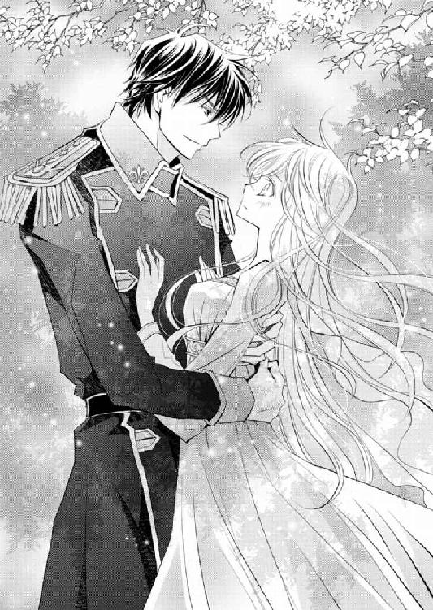
──い、今の言葉は、もしかして......。
ラウラは身を竦ませた。
一生一緒に、なんて、まるで──まるで、プロポーズではないか。
カァッと全身が熱く火照って、もうどうしていいのかわからなくなる。
──で、でも、将軍のことだから......！
もしかしたら、本当に言葉どおり、『一生一緒にいる』だけなのかもしれない。
キルラの誓約者として誓約の鎖で繫がっているわけだしと、混乱のあまり、そこまで穿って悩まなくてもいいことまで、ぐるぐると考えてしまう。
「ふーふふーん。ふーたりの世界～という感じですなあ。吾輩の方が照れちゃいますぞ」
「シーッ、イーノス、今ふたりが盛り上がって、とってもいいところではないか。邪魔をするでない！」
「新種のヴァハラくんってば、そんなふたりの世界の中で、よくもそう平静でいられますねえ」
「何を言う。ふたりが仲良しで我はとっても嬉しいぞ。むしろこのまま結婚してくれと思うくらいじゃ。なにしろひとの結婚はヴァハラと違い、いろいろ面倒なことが盛りだくさんらしいからの」
むふんとキルラが笑うと、イーノスは実に人間のような仕草で首を傾けた。
「確かにヴァハラと人間の結婚が同じだったら、吾輩ちょっとびっくりですけどもね」
キルラとイーノス、ふたりに茶々を入れられ、我に返ったラウラは、そっとヒューバートの胸を押して少しだけ距離を取った。
「あの、将軍。今のようなお話は、もっと落ち着いた場所......たとえば人界に戻ってからにしません、か？」
あえてここで話さなければならない話題ではないだろう。
ヒューバートは幾分不満そうだったが、すぐにうなずいた。
「じ、じゃあ、ネムリンに、仲間と交信してもらって......、ん？」
ンーピチュー
「え、ちょっとネムリン、ちょっと待って......！」
「どうした」
「ネムリン、眠くてたまらないって......わ、わっ」
今にも地面に落ちそうなほど低空飛行のネムリンを、慌てて掌で掬い上げる。
「ネムリ......」
「眠っておるのう」
「......あああ」
ラウラは消沈して肩を落とした。
ネムリンが起きてくれなければ、クロエがこの『果てなしの海』からどの方角へ向かったのか、皆目見当がつかない。
「どうしましょう......」
「起こせばいいんじゃないですかあ？」
「それがネムリン、眠ったらなかなか起きてくれないんです」
「地面に叩き落としたらどうですかねえ」
「そんな乱暴なことできません......！」
ラウラが眉間にしわを寄せても、イーノスはどこ吹く風といった体だ。
「でもこのシシハヤにしか、お嬢さんのお姉さんの居場所を探れないんですよねえ？ シシハヤが起きるのをただただ待っているんですか？」
確かにそれは、大変な時間のロスだ。
「吾輩ちょっと妙案があるんですけど聞いてもらえます？」
ふんふんと鼻を鳴らしながら、イーノスがヒューバートを見上げた。
ヒューバートの片方の眉がごく軽く上がったのを見て、それを了解の印と勝手に受け取ったイーノスは、地面を蹴り、宙に浮かんだ。ヒューバートの目線とほとんど同じ高さまで上昇すると、ラウラたちがやってきた方向とは逆側に顔を向けた。
「見てのとおり、吾輩ヴァハラですのでこうして宙に浮かべます」
うむ、当たり前じゃな、とキルラがうなずく。
「新種のヴァハラくんと同調している白い髪のお嬢さんもまた、空を飛ぶことができます」
「そんなことはわかりきっておるが、何が言いたいのじゃ」
「つまりこの場で飛べないのは軍人さんだけということですね」
「ヒューバートは人間なのじゃから当然であろう」
「はい当然です。ただ、軍人さんが飛べれば、格段に早く移動ができるわけで、空から探せば、お嬢さんのお姉さんもすぐに見つかるかもしれない」
「......」
「そこで軍人さん、吾輩の背に乗ったらどーですかあ？ というのが、妙案です！」
イーノスはヒューバートの周りをぐるりと回る。
「断る、なんておっしゃいませんよねえ？ だって軍人さん、今この場で飛べないの、あなただけですよ？ お嬢さんの足手まといになってるじゃないですか」
「なってませんよ、何言うんですか！」
「そうじゃぞ、イーノスよ！ ヒューバートはいつもいつも我とラウラを助けてくれているのじゃぞ！」
言われた当の本人より先に、ラウラとキルラの方がいきり立って、イーノスに詰め寄った。
「いつも助けてくれていても、今は役立たずじゃあないですか」
「役立たずじゃありませんよ！ そこまで言うなら、キルラ！」
「うむ！」
ラウラとキルラは、イーノス同様身を浮かせる。そしてヒューバートに眠っているネムリンを手渡すと、背中側に回った。ヒューバートの身体に両腕をしっかり回すと、力いっぱい引き上げた。
「......おい」
わずかとはいえ持ち上げつつ、ラウラはイーノスへと顔を向ける。
「わたし......ッ！ とキルラが、将軍を運びますよ！」
「そうじゃぞ！ ラウラは乙女にしては力があるからの、我の力も合わせれば、二番目のひとりやふたり、持ち上げてみせるぞ！ ふぐぐぐぐぅぅぅ......！」
ラウラとキルラ、ふたりの精いっぱいの力でヒューバートを持ち上げ、よろよろと進む。
「ラウラ、キルラ‐キルレ‐キロル」
「ちゃ、ちゃんと進めますし、絶対落としませんから......！」
「ムダな体力を使ってどうする」
「むっ、ムダじゃありませんよ、ガーディナー将軍」
「そうじゃぞヒューバート。これは我とラウラの心意気じゃ！」
ヒューバートは微かに息をついた。
「とにかく一度下ろせ」
そう言われ、ラウラとキルラは渋々ヒューバートを下ろす。
「おやおや、三ガランしか進んでませんよお？」
揶揄するように笑われ、肩で息をしながら、ラウラはむう、と唇を引き結ぶ。
ヒューバートの温かな掌が、上下するラウラの肩に、優しく置かれる。
「俺を背に乗せてもいい、と？」
「ええ、ええ、構いませんとも！ お嬢さんを温泉に突き飛ばしちゃいましたしねえ、お詫びの印に。はいどうぞ」
問われたイーノスは、無防備に背中を向けてくる。
「......将軍」
ヒューバートはイーノスの背を見、そしてラウラに視線を向けた。
恐らくヒューバートの脳裏には、イーノスの先刻の発言が残っているのだろう。
足手まといとか役立たずとか、これまで一度も言われたことがないのではないか。そう考えると、ヒューバートにさえ思ったことをあっけらかんと口にするイーノスの性格が、なんだかちょっと恐ろしい。
そしてヒューバートは、信頼していないヴァハラの背に乗る危険と、そうしてまでも得られる情報──クロエの行方を探す──の、どちらを取るべきか考えているのだろう。
ヒューバートの決断は早かった。
「背に乗ろう」
「将軍」
ラウラの方がよほど不安そうな顔をしていたようだ。ヒューバートは、ふ、と口元に笑みを浮かべた。
「落とされた時には、おまえとキルラ‐キルレ‐キロルに助けてもらおう」
「あ」
──将軍が、わたしを頼りにしてくれた。
そう思うや、ラウラは背筋をぴんと伸ばした。
「ま、任せてください！」
「もちろんじゃ！」
キルラとふたり、力強くうなずく。
「やだなあ、落としませんよお。軍人さんが吾輩をくすぐったり首を刎ねたりしようとしない限り」
イーノスはあらためてヒューバートへと背を向ける。
イーノスに跨ろうとしたヒューバートが、そこで一切の動きを止めた。
「どーしましたか？」
振り返ったイーノスを、ヒューバートはじっと見据える。
「おまえ」
ヒューバートの紺碧色の瞳と、イーノスの青い目が、間近で合った。
「将軍？」
「この、──」
何事か言いかけたが、ヒューバートはハッと七色の海を振り返った。
ヒューバートが視線を注ぐ方──水平線へと、ラウラも目を向けた。
「あれは、シシハヤ？」
七色の光を受けて、キラキラと輝くシシハヤの大群がやってくるのが見える。
「なんと、透けておるではないか......！」
「な、なんで？」
シシハヤは人界の魚のように、くっきりとしたうろこが見える、まさに空を泳ぐ魚──空魚だ。だが目の前に迫るシシハヤは、人界にやってきたものたち同様に、青白く透けていた。
「ラウラ、ヒューバート、水の中からも何かやってくるぞ！」
キルラが水中に目を凝らすや、ぎょっとしたように叫んだ。
「な、何......？」
よくよく見たところで、叫び声をあげた。
クラゲによく似た生き物が、いきなり水の中から顔を出し、ふっくらと空に浮かんだ。
「あれ、教堂にやってきたクラゲもどき......！」
「ミュウィンじゃ！」
「ミュウィン？」
「そうじゃ」
穴の空いた舞台から様々なヴァハラ獣界の獣たちがやってきたが、あのクラゲもどきこと『ミュウィン』は相当厄介だった。
身体が毒液で守られていて、触れたら指が焼けてしまうのだ。
そのミュウィンが、一斉に水中から飛び出してきた。
十や二十という数ではない。百は超えているのではないか。
七色の海と幻想的に青く滲むシシハヤ、白濁した半透明のミュウィンと、皆とても美しい。これが絵画だったならば、存分に見惚れるだろう。
けれどシシハヤやミュウィンの恐ろしさをじゅうぶん知っているラウラは、背筋を震わせて迫りくる彼らをじっと見つめた。
イーノスと出会い、この『果てなしの海』にやってくるまで、ラウラたちは一度もヴァハラ獣界の獣たちと遭遇しなかった。
それを不思議に思いはしたが、会えば会ったで、追いかけられたり襲われたりしたために、むしろ先を急ぐラウラたちには好都合だった。
だがここにきて、どういうわけかいきなり何種類もの動物たちが、ラウラたちに近づいてくる。しかも、近づいてくる動物たちは皆、人界にやってきたものたちのように、いずれもうっすらと透けているのだ。
──どうして透けている生き物と、そうじゃない生き物がいるの？
透けてしまう理由があるの？
ヒューバートはラウラを己の背に庇うと、剣を抜いた。
「キルラ‐キルレ‐キロル。ラウラを頼む」
「無論じゃ！」
ヒューバートに再度手渡されたネムリンを落とさないよう、ラウラは掌で大事に包み込む。
「戦うのですかあ！ 軍人さん!?」
イーノスが突然頓狂な声をあげた。
「こちらからは仕掛けない。だが向かってくるというのであれば容赦はしない」
ヒューバートが剣を構え前方を見据えると、近づいてきていたシシハヤとミュウィンが、ふいに動きを止めた。止めたばかりではない。まるで強い力に押されるようにじわじわと後退していく様子を見て、ラウラは目を瞠った。
「シシハヤらはヒューバートの闘気に触れただけで退いたぞ」
「素晴らしいですなあ」
「そうであろう。我の二番目は素晴らしいのじゃ」
むふん、と喜ぶキルラに、イーノスは目を細める。
「ところで何度か君が口にしている『二番目』というのは、どういう意味なんです？」
「それはのう、我にとって、ラウラが一番目の誓約者で、ヒューバートが二番目の誓約者なのじゃ」
「あ、こら、キルラ......！」
ラウラがヒューバートに集中している間に、キルラがこちら側の事情の一部をぺろりと口にしてしまった。
慌てるラウラに対し、イーノスはといえば、不可解なことを聞いたとばかりに、ぽかんとしている。
「誓約者がふたり、ということで？」
「そうじゃ」
「キルラってば......！」
「それは、あり得ないですねえ」
イーノスは、ないない、と首を振る。
「む、ないことはないぞ！ 我は、ラウラとヒューバートの誓約のヴァハラじゃ！」
「ならばやはり君はヴァハラではない」
「──」
「ヴァハラの力を持つが、ヴァハラ獣界を統べるヴァハラとは違う生き物だ」
イーノスははっきりそう言いきった。
ラウラとキルラは反論もできず、言葉を失う。
だがそこで、シシハヤたちと対峙していたヒューバートが、剣はそのままに視線だけをイーノスへと向けた。
「ふーんふーんふーむ。いくら物騒な気をぶつけられても、吾輩意見を翻しませんよ！ といいますか、よそ見をしている暇はないはずですがね、軍人さん！」
イーノスが叫んだ刹那、数百ものシシハヤの群れが、ヒューバートに襲いかかってきた。
「将軍......！」
ヒューバートは顔をイーノスに向けたまま、無造作とも思える速さで剣を振った。
その軌跡を避けるように、シシハヤたちは上下に分かれ、だがすぐにまた群れとなって突っ込んでくる。
英雄将軍はさらに左から右へと剣を流し、軍服の裾を翻しながら、一気に飛び上がった。
上空から一閃、シシハヤたちはたまらず左右にばらける。だがさらに空いた隙間から、ミュウィンが毒液を滴らせながら、ヒューバートに迫りくる。
「将軍、左手です！」
ミュウィンの動きは鈍い。風に漂いゆっくり前進してくるが、ヒューバートの前方ばかりか、左右後方からもやってきて、気づけば四方を取り囲まれていた。
「将軍......！ キルラ！」
「わかっておるぞ、ラウラ！」
額に火を当てられたような熱さを感じた瞬間、キルラの光が放出される。
その光に触れるなり、ミュウィンたちは慌ててヒューバートから距離を取った。だがすぐにまたひとかたまりになると、ヒューバートに突進していく。
ラウラたちが攻撃しても、シシハヤやミュウィンたちは、こちらにやって来ない。ヒューバートにばかり向かっていくのだ。
「どういうこと？」
「ラウラ、とにかくヒューバートの援護じゃ！」
「うん！」
ヒューバートを中心に、徐々に輪を狭めていくシシハヤとミュウィンたちへと、攻撃の照準を合わせる。
「素晴らしい。同調していても光を放つことってできるんですね！ じゃあひとの身でありながら、姿を消すことも可能なのかな？」
ラウラはハッとイーノスを振り返った。
「何が素晴らしいんですか」
「君がヴァハラではないことは厳然たる事実である。だが吾輩は、君を蔑んでいるわけでも悪口を言っているわけでもないのですよ。むしろ褒め称えたい！ だって新種である君は、現ヴァハラより優れているではありませんか！」
イーノスは高らかに叫んだ。
「ヴァハラと同じ能力を持つばかりか、ヴァハラには絶対にできない、複数の人間と誓約を交わすことができ、さらに別種の言葉を理解することができるなんて、君、最強じゃあないですか！ ほかにも、さらなる素晴らしい能力を秘めているのでは？」
イーノスはらんらんと目を輝かせながら、ラウラとキルラに詰め寄った。
その、強い眼差しに、ラウラは寒気を覚えた。
──な、なんなの？
どうしてだろう、イーノスが、恐ろしいものに見えて仕方がない。
知らぬうちに後ずさりするラウラに、イーノスは一歩、また一歩と近づいてくる。
「きっと姫もそうなのでしょうね。吾輩気づきませんでしたよ。なんともったいないことをしてしまったのでしょう。吾輩のバカバカ、もっとちゃんと話を聞いてやればよかった！」
「もったいないって、どういう意味ですか」
イーノスはにっこり笑った。まるで人間のように、はっきりと。
背筋が震える。
「それはね、白い髪のお嬢さん」
ゆらりと黒い何かがラウラの目に映った。それは風のようにも、靄のようにも見えた。
──靄......、黒い、靄......！
刹那、ラウラの脳裏に浮かんだのは──
『わたしは平凡な人生などごめんだ』
そう冷たく言い放った男の顔だった。
──ジェメル、様......？
次の瞬間、目の前が真っ白になるほどの、強烈な痛みを腹部に感じる。痛みとともに花のような甘い匂いが全身を包み込み......ラウラとキルラの意識は、そこでぷっつりと途切れた。
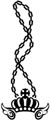
「ラウラ！」
シシハヤやミュウィンと戦いながらも、ヒューバートの意識は常にラウラに向けられていた。だからラウラの意識が途切れた瞬間には、ヒューバートは一気に背後へと飛んで、イーノスの喉元に剣先を突きつけた。
ラウラの長い髪が、白い砂の上に広がっている。
意識を失い、倒れ伏すラウラに、ヒューバートの鼓動は捩れるように速くなった。
「どういうつもりだ」
「いやあ、吾輩としては穏便にことを運びたかったんですけどもねえ、どうもあなた吾輩をすごく警戒していますし、協力を仰いでも耳を貸してくれそうもないし、だったらこのお嬢さんと中にいる新種のヴァハラくんだけいただいちゃおうかなあ、ってね、思っちゃったんです」
「何が目的だ」
イーノスはふいと押し黙る。だがヒューバートがさらに剣を持つ腕に力を込めると、早々に口を開いた。
「んー、探し物をしているんですよ。その手伝いを、お嬢さんと新種のヴァハラくんにしてもらいたいんです」
「探し物」
「はい」
イーノスはうなずくと、にんまり笑った。
ヒューバートの身体能力は、ここ、ヴァハラ獣界においても、抜群に優れていた。
確かに本来の力すべてを出し切ることは難しいが、力を使えない場所ならばそういう場所なりに工夫をすればいいことを、体験的に知っていた。
何しろ幼い頃から、容赦というものを一切知らない祖父とともに、命がけの旅に出ていたのだから。自分でなんとかしなければ、命がいくつあっても足りなかった。
背中に目はない。だが気配は、生き物であればなんであろうと探ることができる。
ヒューバートは目にも留まらぬ速さで、イーノスの首筋に突きつけていた剣を背後に向けた。襲いかかってきたミュウィンをひと薙ぎし、そして瞬きひとつもの時をかけず、再びイーノスの動きを封じた。
前肢を上げかけていたイーノスは、驚いたように口をぱくつかせた。
「......、なんとまあ」
「勝手に動けば首を刎ねる」
イーノスは小さく喉を鳴らした。
「さすがは英雄将軍ですなあ。お見事ですぞ！」
「その通り名を知っているか」
「あなた、有名人ですからね。世事に疎い吾輩ですが、さすがにロレンシアの英雄の名は存じ上げておりますよ」
「ならば人界に行ったことがないというのは、噓ということになる」
黙り込みながらもにやにや笑うイーノスへ、ヒューバートはさらに問う。
「おまえ、ヴァハラではないな」
「は？」
「ヴァハラの中にいるおまえは、誰だ」
低く問うた刹那、イーノスの青い瞳が、カッと見開かれた。
「なんと英雄将軍は千里眼の持ち主か──！」
「おまえが纏うその匂いを嗅いだことがある」
「匂い？ ......なんとまあ、英雄将軍はひとではなくまるで獣ですなあ。これは普通の人間には感知できないほど閾値が低いのに」
ため息を零すイーノスは、明らかにやる気を失ったかのように、全身から力を抜いている。だがヒューバートは油断をせず、片時もイーノスから意識を離すことはなかった。
「おまえは誰だ。なぜオズウェル・ジェメルがつくった、あの薬と酷似した匂いを纏っている」
『オズウェル・ジェメル』──かつてファウベル姉妹の後見人を務めていた男で、高位貴族第三位という身分であったにもかかわらず、ヴァハラ狩り事件の犯人だ。
ラウラたち姉妹とは、浅からぬ縁のある男だった。
その男がつくった、ヴァハラを自由にする薬を、なぜこの『イーノス』は纏っているのか。
ヴァハラはこの匂いに弱い。少し嗅いだだけで昏倒してしまうほどだというのに、なんともないというのは、別の薬なのか、あるいは──。
「ああ、英雄将軍はあの件に深く関わっていたのだったな。うっかりしていた」
「つまりおまえも、あの件に関わっていたということか」
「将軍の能力がこれほど人外じみているとは思ってもみなかった。やはり世事に疎いのはいかんなあ。......がよく言っていたか。『他者ともっと関わりを持て』って」
ヒューバートの問いなど聞こえてもいないかのように、懐かしそうに、そしてどこかさびしそうにイーノスはそう呟くと、緩く首を振った。
「俺の問いに答えろ」
「『オズウェル・ジェメル』。ええ、はい、存じ上げておりますよ。ヴァハラ好きが高じてヴァハラ狩りをしでかした、愛すべきバカのことでしょう？」
イーノスの双眸が、酷薄に眇められる。
オズウェルなど一顧だにせず、ただの虫けらにしか思っていないように、ヒューバートの目には見えた。
その表情が不快で、ヒューバートは微かに眉根を寄せる。
「......おまえは何者だ」
ふっ。
イーノスは笑った。
「吾輩はね──」
口が開いた。
「───、ですよ」
イーノスの声をかき消さんばかりの大きな鳴き声が、ヒューバートの背後から迫ってくる。
振り返ったヒューバートは、一層険しく目を細めた。
七色の美しい海の上空から、こちらに向かって鳥が飛んできていた。
「巨鳥か」
人間が両手を広げた、さらに倍の長さの羽を持つ鳥だ。
羽も頭のふわふわとしたとさかも、鋭い爪も嘴さえも、すべて燃えるように華やかな深紅の鳥が鳴いた。
だがその身はやはり──透けている。
巨鳥は大きな眼でぎょろりとヒューバートを見下ろしてきた。
「将軍にはそいつの相手をしていただきましょう！ ではこれにておさらば！」
少々の痛手は覚悟の上か、イーノスは突きつけられた剣から、一気に距離を取った。
ヒューバートは躊躇なく巨鳥に背を向けると、砂浜に倒れるラウラへと迫るイーノスを追いかける。
「ちょっ、敵から目を離すなんて、何思いきったことしてくれちゃっているんですか！」
「俺の今の敵はおまえだろう」
「うわ、将軍全然ブレないなあ！」
そういうひと、嫌いじゃありませんが、困るんですよ！
イーノスはふいに甲高く叫んだ。
「来ぉい来ぉい！」
その声とともに、前肢を砂地に擦りつける。
ヒューバートの嗅覚が、花のような甘い匂いを感じ取った。
イーノスの声が響き渡り、さらに甘い匂いが周囲に撒き散らされるや、巨鳥ばかりか、シシハヤやミュウィンまでもが、一斉にヒューバートに襲いかかってきた。
ゴォウ......！
巨鳥の羽が繰り出す風圧は凄まじい。そして、剣にも匹敵するであろう鋭い爪が、ヒューバートを握り潰さんと目の前に迫った。
「......ッ！」
人界にいる時よりわずかに動きは鈍いが、じゅうぶん間に合う速度で、その攻撃をかわす。嘴での二手、爪から繰り出される三手も同様に、横に、背後に飛んで避けた。
「すごいなあ、さすがは英雄将軍だ」
流した視線の先に、ぐったりするラウラを背に乗せたイーノスの姿があった。
「あなたのお嬢さん、お借りしますねえ。返せるかわかりませんが、さよぉならあ！」
「ラウラ！」
ヒューバートの叫ぶ声とともに、剣を持つ右手首が熱を持った。
鎖が出現する──！
「ふぉぉ～～ッ!? なんですこれは──！」
ラウラとヒューバートを繫ぐ黄金の鎖がくっきりと出現する。
ラウラの身が背から落ちかけ、イーノスは慌てて高度を下げた。だが出現した鎖は、ラウラをヒューバートへと引き寄せようとする。
意識を失っているとはいえ、ラウラにわずかすらも痛みを与えるのはヒューバートの本意ではない。鎖を出現させてしまったことに、ヒューバートはぐっと奥歯を嚙みしめ、一気に走った。少しでも早くと、飛び上がってラウラの身体を受け止める。
「なんですか、その鎖......、誓約の、鎖？ ひととひとを繫いでいる......!?」
イーノスは混乱して、高く声をあげた。
「......ラウラ」
己の腕の中に戻ってきた少女に、心底安堵の息をつく。
だが喜んでばかりはいられなかった。
ラウラを抱いたまま、ヒューバートは砂浜を走った。
巨鳥がヒューバートの髪に掠るほど近くに迫ってくる。
「あ、ちょ、お嬢さんを傷つけてはなりませんぞ！」
イーノスが慌ててそう叫ぶと、キャア、と鳴く声が後ろから聞こえてくる。一拍置いて、空から声が降ってきた。
「ちょっと伺いたいのですがッ！ その鎖！ なんなんですか！」
「おまえに答える筋合いはない」
「確かにそうですけどもッ！」
イーノスは地団太を踏まんばかりに悔しがる。
もちろん、イーノスに構っている暇はない。
上空から攻撃を仕掛けてくる巨鳥とシシハヤ、ミュウィンからの攻撃を、一撃たりとも受けるわけにはいかなかった。
必ず守ると約束した最愛の少女を腕に抱いているのだ。一瞬とはいえイーノスに攫われた事実は、ヒューバートにあらためて強い決意を抱かせた。
絶対にラウラを危険な目に遭わせない、と。
ヒューバートは白い岩場までやってくると、ラウラを岩に凭せかけるよう、そっと下ろした。そしてその身を背に庇い、躊躇なく振り返った。
容赦なく突っ込んできたシシハヤとミュウィンを払い落とし、剣の切っ先を差し向けると、巨鳥らはぴたりと動きを止めた。イーノスもだ。
「おひとりで戦うつもりだ、と？」
ヒューバートは無造作にうなずいた。
なんの不都合もない、というように。
するとイーノスは、突然狂ったように笑いだした。
「なんとまあ、英雄将軍は本当に剛毅なお方だなあ！ こんな時でなければ、ぜひお友達になりたいくらいですよ」
「断る」
「おや、つれない」
イーノスは、今度は密やかに笑った。
「それ、誓約の鎖ですね。ああ返答は結構ですよ。もしやヴァハラではない新種と、しかもふたりと誓約したために、誓約者たちもまた繫がってしまった、というわけですかねえ？ まあ大変ですこと」
ヒューバートの面は、微風ほども揺るがない。完璧に無表情だ。
「将軍はともかく、お嬢さんはさぞかし大変だったでしょうねえ。ふふ、いろんな騒動があったに違いない。想像しただけで、なんだかワクワクしてきますよ」
表情を変えないヒューバートに、イーノスはわずかに近づいた。
「それが誓約の鎖だというならば、吾輩、断ち切ることができますよ。おや、やっと表情が変わった！ とはいえほんの少しの変化か。ホントに将軍は、自制心の強い立派な軍人さんだ」
ヒューバートの剣が届かないギリギリまで顔を近づけてくる。
「本当ですよ。だって将軍、あの時の当事者でしょう？ 誓約のヴァハラと誓約者を繫ぐ鎖を引き千切られた。あれ、吾輩もできます」
「────」
ヒューバートの全身に、力がみなぎる。
「だってあの薬、今持っていますから！」
イーノスはそれまでのゆっくりした動きから一転、前肢を突き出してきた。迫る前肢の爪に、黒っぽく変色した液体がこびりついている。血か、と思ったのは一瞬で、その液体こそが『薬』であることに気づいたヒューバートは、即座に顔を背けた。
もちろん、背にはラウラを庇っているから、身体を動かしはしない。
ヒューバートは息を止めながら、正確に剣を振った。
「ぎゃっ！」
叫び声とともに、わずかながら血が飛び散る。
「いったぁあい──！ 痛い痛い痛いぃぃ！ き、斬りましたね！ 吾輩が親切にも鎖を断ち切ってやろうと言ったのに......！」
「必要ない」
ヒューバートは剣の如く鋭い口調でひと言告げた。
指先からちょっぴり出血しただけで涙目になっているイーノスは、恨みがましい眼差しでヒューバートに視線を据える。
「そりゃ将軍はいいかもしれませんが、お嬢さんはどうなんでしょうねえ！ あなたみたいに、何を考えているのかわからない無表情な朴念仁とずっとずっと一緒にいたら、息が詰まっちゃうんじゃないでしょうかあ？」
「......」
白い砂浜に、イーノスの血が一滴落ちる。じわりと砂に吸い込まれていく黒っぽい血は、すぐに見えなくなった。
「ねえ将軍？」
「ラウラの思いはラウラの口から聞く。他者の言葉は必要ない」
はっきりと断言する。
イーノスはふいに、口をつぐんだ。じっとヒューバートを見つめ、そうして何か思い至ったのか、長い息を吐きだした。
「お嬢さんを信頼し、きっとお嬢さんも同じだけあなたを信頼しているのでしょうね。信じる心を持てるのは幸せなことだ」
静かな声だった。
「だが申し訳ないね。吾輩はどうしても、このお嬢さんの内にいる新種のヴァハラくんが必要なんです」
──来る。
ヒューバートは全方位に向けて意識を研ぎ澄ます。
だが衝撃は、思いも寄らぬ場所からやってきた。
突然足元が揺らぐ。地揺れか、と一瞬足先を見る。すると砂の中にいたありとあらゆる生き物が飛び出してきたかと思うと、間髪容れずにヒューバートへ襲いかかってきた。
一匹一匹は弱く小さいが、水辺に住む数百、数千もの生き物が、視界を覆わんばかりに、一斉に飛びかかってきた。石のように硬い殻や鋭いとげを持つ生き物が、全身にぶつかってくる。
ヒューバートは視界で情報を得ることをすぐにやめた。目を閉じ、気配のみで襲いくる生き物たちを剣で払っていく。
だが砂浜中の生き物は、イーノスの思いに従い、ヒューバートに容赦なく体当たりをしてくる。
あの血か、とヒューバートは悟った。
イーノスが、前肢の指先に薬を仕込んでいるのは間違いない。そこを傷つけたことで、薬混じりの血が砂浜に落ちた。
どんな作用があるのかはわからないが、あの薬の匂いを嗅ぐか浴びた生き物は、イーノスの意のまま、その思いを受けて、命令に従うのだろう、とヒューバートはおおよその見当をつけた。
オズウェル・ジェメルがつくった秘薬も、ヴァハラの意識を乗っ取り、己の思うがままに扱った。今回の薬は──以前のものもそうだったのかもしれないが──ヴァハラだけではなく、ヴァハラ獣界の獣全般を操れるのかもしれない。
身体が透けている生き物はすべてイーノスのしもべと考えた方がいい。
攻撃を受けながら、冷静にその解を導き出したヒューバートは、一度一切の動きを止めた。そして一拍ののち、目を見開いた。
ヒューバートは視界に飛び込んできた巨鳥を、静かに見据える。
わずかな力みもなく構え、突進してくる巨鳥の頭を薙ぐように、剣を振り下ろした。
白い砂浜に、深紅の鳥がドウと音を立てて落ちてくる。その背後にいるイーノスに向けて、ヒューバートは一気に走る。それは、獣たるイーノスですら逃げられないほどの速さで、目前まで迫るヒューバートを、ただただ啞然と見ている姿が映る。
「う、わ」
仕留める。
ヒューバートは剣をイーノスの頭上へ振り上げ──振り下ろした！
ンピチュ
だがその時、イーノスを庇うように、ヴァハラの前に、青白い光がふわりと漂った。
尾びれに赤いリボン──ネムリンだとそう認識した刹那、ヒューバートの剣は寸前でぴたりと止まった。
「──」
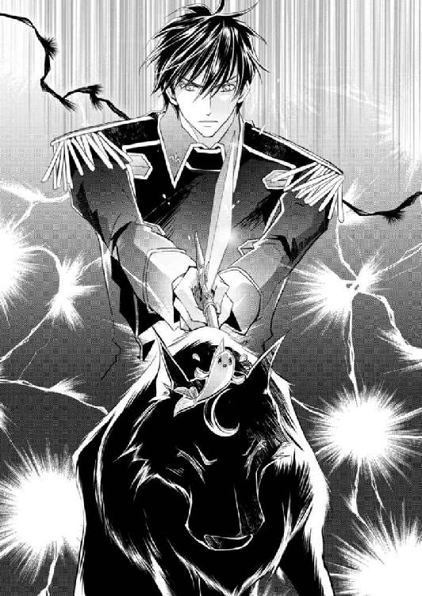
ラウラとキルラの助けがないから、ネムリンが何を言っているのか、ヒューバートにはわからない。だがピチュンピチュンと懸命に鳴くネムリンの言葉は通じなくとも、何を伝えようとしているのかは理解できた。
ヒューバートに制止を求めているのだ。
「......」
隙はなかった。
こんな時でも、ヒューバートはじゅうぶん周囲に気を配っていたし、もちろん背後のラウラの存在は片時も忘れず意識していた。
だが、ネムリンに庇われたイーノスの姿が目の前からかき消えたその、ほんの一瞬の間に、形勢が逆転した。
ずっと息を止めていたヒューバートに、目も眩むほどの毒めいた甘い匂いが纏わりつく。
「──ッ！」
まるで匂いで編んだ外套に包まれたかのように、ヒューバートの全身を覆い込んだ。
身体が動かない。万力で締めつけられているようだ。
視界がゆっくりと濁っていく。
ヒューバートはそれでも、強く剣を握って気を探った。
姿を消しても気配はある。ヒューバートは狙い澄ましてイーノスに剣を差し向けた。
ひゃっと声があがったが、手ごたえはなかった。
「なんと恐ろしい。将軍はヴァハラ獣界のどんな獣よりも強いのですなあ。肉体だけでなく、精神も」
心底感心したような声だった。
「すみませんねえ、将軍。お嬢さん、いただいていきますぅ」
耳元で囁かれる。ヒューバートは剣ではなく腕を伸ばしてイーノスを摑んだ。
「ちょ、は、離して......！」
摑んだ毛先を離さず、引きずり下ろす。砂浜に引き倒されたイーノスは悲鳴をあげた。
そのまま上に乗りかかると、さらに痛い痛いと甲高く叫ぶ。
「な、なんでそんなに動けるんだ......!? 薬半滴で、巨鳥ですら吾輩の意のままに操れるというのに、将軍本当に人間ですか！」
「おまえと同じ、人間だ」
「──吾輩はヴァハラですぞ」
「外側はそうだろうが、中身は人間だろう」
「......」
「おまえにどんな理由があろうと、ラウラとキルラ‐キルレ‐キロルは渡さない」
目を開いても、もはや何も見えない。イーノスの姿が消えているのかそれとも現れているのかもわからないが、それでも捕らえた腕から、一瞬たりとも力を抜かなかった。
「ぐ、ぅ......っ」
喉元を絞め上げすぎたようだ。苦しげなイーノスのうめき声に、ヒューバートはわずかに指先を浮かせた。
「......ん」
小さな声が、背後から聞こえた。ラウラだ。
意識が戻ったのか、とイーノスを絞め上げたまま上体を起こした刹那、これまで以上に甘い匂いが、周囲に漂った。
「ああ......！」
苦しげなラウラの声に、完全に振り返ったヒューバートの背を、強烈な痛みが襲った。
わずかに身をぐらつかせると、今度はイーノスを捕らえている両腕に、刺すような痛みを覚える。ミュウィンの毒液に触れたか。
「......っ」
「これでも食らってくださいなぁぁぁ！」
甲高いイーノスの声とともに、かつてサクリクスと引き離された時以上に強烈な衝撃が、ヒューバートを襲った。
「ハ、ハァッ！ 将─、今─こそ──ら─ですぞ。──二度─お会─したく───せんな！」
砂浜に倒れ伏すヒューバートの真上から、切れ切れに声が落ちてくる。
耳もよく聞こえない。もとより視界はまったく利かない。背と両腕の猛烈な痛みは無視できても、全身に伸し掛かる巨大な圧が、ヒューバートに一ガランたりとも動くことを許そうとしない。
重く肢を引きずる音がする。そして再び、ラウラの微かな声。
ヒューバートは真っ白に濁る視界を上げた。
何も見えない。
「ラウ、ラ、......キ、...ラ」
メキ、メキ、と軋む音がした。
剣を持つ右手首に感じるのは、引き千切られそうなほどの痛み。
そして。
ぶつん、と。
恐ろしいほどの喪失感とともに、何かが、切れた。
「おさらばですぅぅぅ──！」
イーノスの声は、瞬く間に遠く離れていく。
「ラウラ......！」
ヒューバートの声に応える少女は、そこにはいなかった。
黒く見えるのは、川面が藻にびっしりと覆われているからだ。
黒に近い、濃い緑色の藻をかき分けると、その下の水は意外なほど澄んでいて、さらさらと穏やかに流れている。
「サクリクス王......っ、がんば、って！」
濃厚な甘い匂いにフラフラになりながらも、ゼノはヴァハラの王を、やっとのことで川まで運びきった。
「悪ぃな、ゼノ」
「だい、じょうぶ。川に入れるからね、溺れないでね。ボク泳げないから、もし王が溺れても助けられないんだ」
「......おう」
うつぶせになった状態で、サクリクスの上半身を岸に残し、下半身を川の流れに浸す。
「うわ、冷たい......！ サクリクス王、大丈夫？」
川のせせらぎに触れたゼノが、身をびくつかせたが、サクリクスは無言だった。
ゼノの言う水の冷たさが、サクリクスには感じられなかったのだ。
青い瓶に入っていた薬を、黒い『アレ』にぶちまけられて以来、感覚がひどく鈍い。
これまで当然のものとして得ていた五感が、薄いベールを隔てたところにあるようだった。刺激を自分のものと感じることができず、それがたまらなくもどかしい。
実のところ、薬を被る前にあった喉の痛みも、今はまったく感じなかった。
サクリクスの誓約者であるヒューバート・ガーディナーと、大事な養い子であるキルラ‐キルレ‐キロルとの誓約を解除しようとした時に受けてしまった傷だ。
普段ならばすぐに完治したに違いないのに、この傷はいつまでも塞がらず、ジクジクと不快な痛みをサクリクスに与えた。
傷が治らない理由は、サクリクスにもわからない。
だがもしかしたら、という予感はあった。
──誓約の主が、キルキルだったから、か？
あるいは、誓約の鎖によってつけられた傷だからかもしれない。
通常のヴァハラではない、サクリクスの養い子、キルラ。
もちろんどんな姿をしていようと、キルラはサクリクスにとって、愛おしい宝だ。
キルラが何者なのか、なんのためにサクリクスのもとへやってきたのか、うすうす感づいていたが、正解は知らなくていい。──今は。
時が来れば、いずれわかるだろうから。
ただ今は、キルラが毎日を楽しく生きて、健やかに育っていってくれれば、養い親としてこれほど嬉しいことはないし、それ以上を望むつもりもなかった。
あのキルラとよく似た、黒い『アレ』がやってきたことで、平穏は終わったのかもしれないが。
ゼノから聞いた名は、リムル‐リシル‐リスレ。
キルラと同じ種に違いないリムルが、サクリクスの前に姿を現した理由を、底なしの沼に少しずつ沈んでいきながらずっと考えていた。
あの言葉遣い、姫気質の高慢な態度。ラウラからプレゼントされた赤いショールを、「妾の方が似合うに違いない」と持っていかれた時には、一瞬でもキルラに似ていることに躊躇を覚えた自分を罵倒したくなったものだ。
苦く口元を歪めるサクリクスを見咎めたのか、ゼノが、どーしたの？ と問うてくる。
冷たいらしい水にさらされながら、サクリクスは薄く目を開けた。
やはり視力はほとんど戻っていない。ぼんやり白くかすむ視界に、小さく苛立ちながら、首を横に振った。
「もうほとんど陽が落ちちゃったね。サクリクス王、ボクなんかゴハンを探してくるよ。王、ヴァハラ獣界に来てから何も食べてないよね？ お腹すいたでしょ」
すぐに戻ってくるね、という声と、ゼノがゆっくり遠ざかっていく足音が次に聞こえてくる。
耳だけはちゃんと機能していてよかったと、サクリクスは息をつく。
しばらく水に浸けていた肢先に、むずむずと感覚が戻ってきているような気がした。
やはりこの匂いを洗い流すのが正解のようだ。
このまま一晩、水に浸かっていたら、明朝には力を取り戻せるかもしれない。
「ヒューとラウラちゃんみたいに、特別な誓約の鎖で繫がっていたら、こういう時きっと相手を引き寄せちまうだろうな」
誓約者と誓約のヴァハラの間にある鎖は、ふたりのそれとは基本的な性質が異なる。
あんなふうにしょっちゅう出現しないし、ペアによっては、一生その鎖を見る機会はないかもしれない。
誓約者とそのヴァハラを繫ぐ鎖は、つまり『誓約の印』だ。
互いの力を共有し、互いの気質に重なる部分が多ければ多いほど、同調のタイミングをはかることができる。
いくら性格や考えの方向が似ていても、もともと持つ『気の質』が重ならなければ、同調はできない。
ヴァハラの気質に重なる部分を持つ人間は、そうはいない。割合として軍人に多く見られるのは、それだけ彼ら・彼女らが、強い気を持っているからだ。
そしてその点で、ヒューバートは、こう言ってはなんだが、人外じみた力を持っている。
祖父のブルーノ・ガーディナーの気質をそっくり受け継いでいるに違いない。
「あーあ、じじいにこの体たらくを見られたら、何言われるかなあ」
ブルーノを思い出すのと同時に、サクリクスの脳裏に浮かんだのは、じじいこと前の前の王の澄ました顔だった。
『間抜けじゃのう、王は。本当にオマエさんは間抜けじゃ』
のんびりした口調で、きっと何度も間抜けと言って、サクリクスの心をぐさぐさ傷つけるのだろう。
まさに今、前々王が目の前にいるかのような錯覚を覚えたサクリクスは、やにわに川の中に頭を突っ込んだ。
水が触れていることはわかるものの、やはりまだ、感覚が鈍かった。
だがその感覚が、じわじわと戻ってきているようだった。流れは穏やかで、サクリクスは瞼に力を込めてみた。──開いたままだった眼が閉じられた。閉じて、開けて、また閉じてと繰り返していくうちに、ふいに眼球に当たる水がとても冷たいことに気づいたサクリクスは、身体を少しずつ動かしていく。
「......」
ところがなかなか四肢が動いてくれない。だんだん息苦しくなってきて、おお、苦しいという感覚が戻ってきたじゃねえかと、持ち前のプラス思考を発揮して喜んだのもつかの間。ゴブ、と大量の水が口の中に流れ込んできたものだから、サクリクスは焦った。
──うおっ、お、溺れちまう......!?
身体を岸に上げたいのに、緩慢にしか動けない。結果ずるずると川の中に引き込まれていってしまった。
「や、べ......っ」
藻が絡みついてくるから流されはしないが、身動きがまるで取れない。
やべえやべえと言いながら、ただ水の中に沈んでいくしかない自身に、サクリクスは盛大に幻滅する。
「オレ様はヴァハラの王だろうが。こんな無様なオレ様はオレ様じゃねええ！」
そう吠えるや、怒りが光となって発せられた。
「おっ、おお......！」
これまでどうやっても出なかった光を出せたことで、サクリクスはあっさり立ち直る。
「よっしゃ、行くぜ行くぜえ。オレは強ぇ。ヴァハラの王だからなあ！」
勇ましく声をあげながらも、まだまだ本調子ではないサクリクスは、ゆるゆると気が遠くなるほどゆっくり動き、ようやく岸に辿り着いた。
「くそう、こんな姿、誰にも見せられねえ、ぞ......」
「サクリクス王、今、なんか言った？」
見せられないと言った直後に、ふんわり呼びかけられて、サクリクスはがっくりする。
ゼノは、そんなある意味デリケートなサクリクスの心情を慮れるほど、心の機微に敏いヴァハラではなかった。
「全身浸かっちゃって大丈夫？ あ、でも、なんか匂いが薄くなったみたいだよ！ サクリクス王、その調子でどんどん流しちゃうといいよ」
「......ああそうだな」
「木の実を採ってきたよ。お口の中に入れるね」
放り込まれた木の実は凄まじく渋くて、うえ、と吐き出しそうになるところを漸うこらえる。
「な、なんだこりゃ」
「これね、気付けにいいらしいよ。サクリクス王、今ぼんやりしてると思うから、気持ちをしゃきっとできるかなあって」
「......ありがとうよ」
渋いと感じることもできた。ちゃんと感覚が戻ってきているのだ。
「だがとりあえずゼノ、その渋いのじゃなくて美味いのくれよ。酒がいいな」
「お酒!? サクリクス王、お酒好きなの？」
「当たり前だろ。あんな美味いものあるかよ」
「えええ？ ボクは苦手だなあ」
サクリクスよりずいぶん年上のゼノだが、まるで仔ヴァハラのような物言いだ。
「お酒はないんだよ。代わりに今度は甘い実をあげる。はい」
次に口の中に入ってきた実は、人界でよく食べた飴菓子のように甘い。
「サクリクス王、たくさん食べて、元気になってねー。ファイトー、お・う！ ファイトー、お・う！」
調子外れの応援に、げんなりする半面、ありがたい気持ちにもなる。
この場にいるのが自分だけだったなら、きっともっと落ち込んでいたことだろう。
意外と繊細な面を持つヴァハラの王は、今の不甲斐ない状態に、忸怩たる思いを抱いていた。それを、空気を読めないゼノに、幾分助けられている。
あくまでも、幾分、だが。
「次はとびきり美味しくて食べ応えのあるのを採ってきたから、食べてね、はい！」
「うぐ......っ」
三度目に入れられたのは、どう考えてもサクリクスの口には入りきらない、しかも皮が特別に硬い果実だった。
「あぎぎぐげごごー！」
「え、何？ 美味しい？ ボクこれ大好物なんだー。でも全部王にあげるね」
硬すぎて食えねえっつの！
そう叫んでも、口が実でいっぱいのため、言葉が出てこない。
「やだなー、そんな感謝しなくてもいいってば。王が元気になったら、クロエちゃん探しを手伝ってくれるんだもんね。早くいつもの王に戻ってね！」
嬉しそうに言うゼノは、サクリクスが窒息しかけていることにまったく気づいていないのだった。

さらさらと流れる川の水に洗われて、薬の匂いはほとんど失われた。
獣たるサクリクスの、感度のいい鼻をうごめかしても、ほぼ感じられない。
匂いがなくなったことで、サクリクスはようやく身体の感覚を取り戻すことができた。
川から出ると、身体に張りついた毛をブンと振って、水滴を一気に払う。
すっくと立ち上がる。
ちゃんと四肢に力が入る。
よかったと安堵するが、一方で首にある傷の痛みもぶり返してきた。
──だけど身体に力が入らないのより、痛みを抱えていた方がよっぽどましってもんだろ。
サクリクスは、高く上る陽光へと顔を向けた。
一晩中水に浸かって、冷えきった身体を、陽の光がじわじわと温めてくれる。
日光にこれほど感謝したのは初めてだ。
「んーっ」
伸びをしたサクリクスは、岸辺でぐうすか寝息を立てて眠るゼノを、肢先で軽く突っついた。
「ん、......んんもー少し」
「聞けねえな。今すぐ起きろよ、ゼノ」
「んー、あともうちょっと」
「起きろって。クロエちゃんを探しにいくんだろ？」
「クロ、エちゃ......ん、......クロエちゃん？」
あっさり覚醒したゼノに、サクリクスはははっと笑う。
「おまえ、ホントクロエちゃんに惚れ込んだもんだな」
「ぇ......あっ、サクリクス王、もう大丈夫なの!?」
うなずくと、ゼノは、わぁわぁ言いながら、飛び跳ねて喜んだ。
「やったー！ よかったね、サクリクス王！」
「ゼノのおかげだ。ありがとうな」
礼を言うと、ゼノは照れくさいのか、身をくねらせているようだ。
「えー、うふふ、そんな、お礼なんていいよ。あ、そうだ、お腹すいたでしょ？ ボクなんか採ってくるね」
上機嫌でゼノが飛んでいく気配がした。
サクリクスもまた、身を浮かせてみる。
「......よっしゃ、飛べるぞ飛べる」
自らを鼓舞するように、サクリクスは同じ言葉を繰り返す。
「これでちゃんと目が見えるようになればいいんだがなあ」
くそ、とサクリクスは小さくひとりごちた。
恐らくリムルが薬を投げつけてきた時、飛沫が直接目に入ってしまったのだろう。
しつこいくらい水で洗い流したのだが、視界は良好とはいえなかった。
だが、あの甘ったるい匂いはほとんど消え、鼻も利くようになった。
もとより、聴覚は使えている。
ちょっとくらい見えなくても、己ならば大丈夫だと、サクリクスは自分自身に向けてうなずいた。
その時だ。
ふいに、額に凄まじい衝撃が奔った。
それは雷に全身を貫かれたかのような恐ろしい衝撃で、サクリクスはその場で身を硬直させる。
「......な」
──なんだ、......なんなんだ、この衝撃は。
見えないことは百も承知で、サクリクスは三百六十度全方位に頭を向けた。
すると陽光のある方角で、痺れにも似た痛みを感じる。
「こりゃ......」
胸騒ぎがする。とてつもなく、嫌な予感がする。
身体の半分がもぎ取られてしまったのではないか──そう思うほどの底知れぬ恐怖が、じわじわと胸底から湧いてきて、それは全身へと広がっていった。
鼓動がどんどん速くなっていき、たまらずサクリクスは、空へ向けて咆哮した。
声とともに、光までも放たれる。
額が焼けるように痛む。
「おい、なんなんだよ......！」
叫んだ刹那、普段はまるで意識していない誓約の鎖が、強く引っ張られる感覚を覚えた。
「ヒュー！」
ヒューバート・ガーディナーと誓約を結んだのは、彼が三歳の時だ。
祖父、ブルーノ・ガーディナーに連れられてやってきたヴァハラ獣界で、ヒューバートは凶悪な獣に襲われそうになった。
間に合わない、食われる。──そう思った。思った瞬間、どういうわけか、知らずサクリクスの身体が動いていた。
額に前肢を触れさせて誓約をし、そのまま三歳児の中に入り......同調した。
あれからどれほどの月日が経っただろうか。
ヒューバートは今、二十二歳だから、もう十九ツ年。それだけの年月を、誓約者と誓約のヴァハラとして過ごしている。
シドとイム、ユリシーズとアイネイアスたちのように、始終べったり一緒にいるわけではない。特にキルラという養い子を得てからは、サクリクスがヒューバートのそばにいる時間は、一ツ年のうち半分程度と、ほかの誓約者とそのヴァハラとは比べ物にならないほど短い。
だが一緒にいる時間が短かったとしても、サクリクスにとっての誓約者は、ヒューバート・ガーディナーただひとりだ。
「......ヒュー？」
額の嫌な感覚が消えない。
それどころか、ヤケドをしそうなほど、熱くなっていく。
奥の方をぐりぐりと抉られるような痛みに、鼻筋にしわを寄せながら、見えない目で陽光を仰いだ。
ぐん、と引き寄せられる感覚。
サクリクスはその力に逆らわず、それどころか自分から進むように、空を駆けた。
「あれ、サクリクス王、どこ行くの？ えっ、ちょっ、ま、待って、置いていかないで......！ ク、クロエちゃんはああああ!?」
ゼノの悲鳴めいた声はサクリクスには届かなかった。ヴァハラの王は、額の引かれる感覚を頼りに、一心不乱に宙を走った。

祝詞を唱える間、オフラ教教主ユリシーズの集中力が途切れることはない。
一言半句とて間違えるわけにはいかないし、抑揚が半音ずれても、祝詞の役目を果たさない。
特に今、ユリシーズが唱える祝詞は強力な呪力を持つため、細心の注意を払わなければならなかった。
ユリシーズが教主を務めるローデリー地区の教堂は、ロレンシア王国に十二ある教堂の中で、一番規模が大きい。
王都オージアルにある、教尊が管理する本堂よりも、広大な土地の上に建っていた。
これは、人界とヴァハラ獣界を繫ぐ通路の大きさと深く関係している。
現在のオフラ教は、ヴァハラと人間を繫ぐことを命としている。だが本来教堂は、ヴァハラの数を抑制するために建てられたものだった。
ヴァハラは強大な力を持つ獣だ。人語を話し、剣にも匹敵する陽光のような光を放ち、また空を飛び、姿を消すことまでできる。人間の敵う相手ではなかった。
多くのヴァハラが好意的なのは、人間側にとってまったく幸運かつ喜ばしいことだ。
だが命を脅かすほどの悪戯を仕掛けたり、遊び紛いに攻撃してきたりと、中には性質の悪いヴァハラがいないわけではなかった。
そんな力を持つ獣がしょっちゅうやってきては、混乱も必至というわけで、ヴァハラ獣界に繫がる通路の上に教堂を建てたのが、オフラ教の始祖である。
ユリシーズはときおり、その始祖のことを考える。
古い文献を繙いてみても、始祖の詳細な履歴は見つけられなかったが、どうやら不思議な力があったということだけは確かなようだった。
今で言う、占者のような人物だったらしい。
さらにその始祖の、誓約のヴァハラ──当時は誓約という概念があったのかは定かではないが──は、純白の毛色だったという。
純白の毛色のヴァハラ。
サクリクス王は、白い毛色だから王になるのではなく、たまたま続いただけだと言っていた。
本当だろうか？
目立つ白い毛色の獣は、もちろん自然界ではとても生き難いだろう。
幼い頃、数々の危機を乗り越えて成長した生き物なのだから、強さと知恵を持っている。その試練こそが、王になるために必要なのだと言われれば、なるほど確かに、とうなずける。けれど本当に白い毛のヴァハラがたまたま王になった、という偶然が続くものだろうか。
やはり白い毛のヴァハラは特別なのではないか。
ユリシーズはそんな気がしてならなかった。
やわらかな抑揚の祝詞も終盤に差し掛かっている。
閉じていた目を開け、舞台に空いた穴を視れば、昨日より確実に狭まっていた。
だがまだ穴は大きい。
あと何日祝詞を唱え続けたら穴は塞がるだろうかと考えると、ため息が零れそうになる。そこをこらえて、ユリシーズは声を発した。
残すところ一節となった時、舞台の外から何やらざわめきが聞こえてきた。
だがユリシーズは、慌てることも振り返ることもせず、落ち着いて唱え続ける。
背後の大扉が開く音がした。
と同時に、緊迫した空気も流れ込んでくる。
何事かと、ユリシーズの背筋が微かに強張るが、それでも祝詞を中断させない。
背後にいる者たちも、痛いほどの緊迫感を保ちつつも、ユリシーズに声をかけてはこなかった。
ようやく最後の一音を唱え終えた瞬間、振り向く間もなく、どっと気が押し寄せてきた。
「ユリシーズ様！」
「元帥様が！」
「クーガン警護隊長が！」
「アイネイアス様が！」
いずれも大声で一斉に発せられたため、ユリシーズはため息をつく。
振り返ったユリシーズの目に、まず映ったのは、床に突っ伏すアイネイアスだった。
「──」
ユリシーズは足早にアイネイアスに歩み寄る。膝をついて、青味を帯びた美しい毛を、そっと撫でた。
「アイネイアス」
「うー......、ユリシーズ、無事か？」
「床に倒れ込んで今にも息絶えそうなアイネイアスに心配されるほど、わたしは落ちぶれていませんよ。何があったのです。クーガン警護隊長は」
「クーガンは泥酔してへべれけになったような状態だから、部屋で寝かせている。とりあえずユリシーズ教主、わたしの話を聞いてくれるか？」
滑舌のいい、明るい声に、ユリシーズは一度瞬きをして顔を上げた。
「ミルドレッド元帥」
「アタシもいるわよん。ユリーってば、アイネイアスちゃんにはツン傾向なのに、やっぱり誓約者ねえ。アタシたちが目に入らなかった？」
「ええ、すみません。まったく目に入りませんでした」
悪びれずそう告げるも、ユリシーズは立とうとせず、自身の誓約のヴァハラの背を撫で続ける。
「だそうだ。よかったな、アイネイアス」
ふっと笑うのは、ロレンシア王国の王女にして、〝煌めく暁の姫元帥〟、ミルドレッド・ロレンシアだ。
足元には、赤みがかった毛色に深紅のマントを羽織った乙女ヴァハラ、クインもいる。
相変わらず華やかなひとりと一匹を見上げたユリシーズは、軽く首を傾げた。
「ミルドレッド元帥、ついこの間いらしたばかりですが、何かありましたか？」
「うん、あった。とりあえずクーガンからの報告はこちらに来がてら聞いているから、アイネイアスも休むといい。ユリシーズ教主が元気なところを見て安心しただろう？」
「半ツ日くらいしか離れていないのに、アイネイアスちゃんってばホント心配性ねえ」
口調こそからかい混じりだが、アイネイアスを見るクインの目は温かい。
ちゃんとあんたの気持ちはわかってるわよ、という眼差しに、アイネイアスは半ば照れくさそうに、ふいとそっぽを向いた。
寝室にアイネイアスを運んで休ませるよう守護団に頼み、ユリシーズはミルドレッドとクインに向き直った。
「今朝までのことは、クーガンからすべて聞いている。それ以降、進展は？」
ありません、とユリシーズは首を横に振った。
「はあああ......、じゃあまだヒュー様はヴァハラ獣界からお戻りになられていないのね。せっかくお会いできると密かに胸躍らせていたというのに......。無念だわ！」
「おまえ、密かにって、ここに来るまでその口が一瞬でも閉じたか？ ガーディナーのことばかり言ってたくせに」
「とっくの昔に乙女心を失ったミルに言われたくないわ！ あああ、ヒュー様、早く帰っていらして──！」
叫ぶ己のヴァハラは華麗に無視し、ミルドレッドは周囲を見回した。
「エリクソンとイムも戻ってきていない、か。──それにしても、ラウラくんの姉は、ずいぶん思いきったことをする人物だな。シェイン城で一度だけ顔を合わせたが、大層可愛らしく可憐な面持ちのお嬢さんだったと記憶しているが」
「意外と肝の据わった方ですよ。あなたのように、外見に惑わされるなという典型ですね」
「おや。まあわたしは、ラウラくんの方が好みだがね。彼女も苦労性だなあ」
ため息を零すミルドレッドに、それには同感ですとばかりに、ユリシーズも肩を竦める。
「こちらは進展はありませんが、そちらはあった、ということで？」
「ああ。教主を襲った最初の犯人の素性がようやくわかったんだ」
「最初の犯人、というと」
ジェイラス教尊の葬送の儀を終えた夜に襲われた件か、とユリシーズは軽く目を細めて思い出す。
その後何度も襲われたり大きな事件が起きたりしたために、もうずいぶん前のことのように思うが、まだたった数日しか経っていないのだ。
「確か当教堂でヴァハラの儀をおこなったが失敗し、それはわたしが裕福な者には手心を加え、そうではない者にはヴァハラを与えなかったからだ、というのが、襲った理由だったかと」
「そのとおり。調べたところ、確かにその男はローデリー地区に住んでいたよ。ヴァハラの儀をおこなう際に、住処と名前を記帳するだろう？ そこにもちゃんと記されていた」
「ではやはり、ヴァハラの儀の失敗が犯行の理由だった？」
それは噓だと、ミルドレッドは睨んでいたはずだ。そしてユリシーズ自身も、襲われた時、初めて見る顔だと思った。
ミルドレッドは緩く首を振った。
「ところがその記帳した人物と、教主を襲った人物は別人だと調べがついた」
「名を騙ったのですか」
「うん。犯人は頑固にも絶対に本名を言おうとせず、これは難航するかなと思ったんだが」
「そこでアタシの登場～～！」
「クイン？」
「そっ、ふふふ、アタシのこの美貌があれば、誰であろうとイチコロよー！」
「というのはもちろん冗談で、ただ相手が大のヴァハラバカだったと、そういうわけだ」
「ちょっ、ミル、冗談って、それどういうことッ!?」
派手に騒ぐクインを無視し、ミルドレッドは軽く肩を竦める。
「本名だけは判明したから、男の住まいもわかった。ローデリー地区内だが、こちらではなく、セルリア教堂のすぐ近くに住んでいた。オフライトであり、向こうの教主の身の回りの世話を一手に引き受けていたらしい。セルリア教堂の周りにはあまり民家がなく、オフラ教に関わる人間はほとんどいないらしいよ」
「だから元帥がセルリア教堂へ？」
そんな調査は部下に任せなさい、という内心が、ミルドレッドには筒抜けだろうが、姫元帥は澄ました顔をしてうなずいた。
「......ミルドレッド元帥。もう少し御身を大事になさってください」
「ユリシーズ教主には言われたくないな」
すかさずそう返され、クインが確かに、と噴き出した。
「セルリア教堂の教主は教尊候補者だから、選定会議には出席せず、自身が受け持つ教堂に戻っているだろう？ 教主に男の話を聞こうと思ってね」
そこまで言ったところで、ミルドレッドはため息をついた。
「まさか教堂が、あんなに荒れているとは思いも寄らなかったよ」
「ひどかったわよねえ。しかもあの舞台の惨状......！ びっくりしたわよ」
「そんなにひどかったのですか」
ミルドレッドは可憐な唇を引き結ぶと、はっきりうなずいた。
「教堂をあんな状態のまま放っている教主が教尊候補というのは、わたしにはどうにも解せない。そもそも教尊候補者はどういう基準で選出されたんだ？」
「大抵は強い後ろ盾がある方ですよ。オージアルの本堂ではない方の教堂の教主は、高位貴族第一位のエヴァーツ家出身ですし、王都の隣地区の教堂の教主は、ジェイラス教尊の補佐をしていた方の息子ですから」
「そしてユリーは、ジェイラス教尊の愛弟子ですものね」
「もしエヴァーツ家出身の教主が教尊になったら、ジェイラス教尊のように、宮廷にも王家にもへつらわない、というわけにはいかないんだろうな」
やーね、生臭い話、とクインは鼻筋にしわを寄せる。
ユリシーズはまるで他人事のように、そうですね、とうなずいた。
「おいおい、ユリシーズ教主。こういう場面では、わたしが教尊になります、くらい発言してほしいものだな」
「それを決めるのは、本堂にお集まりの教主たちですよ」
「それはそうだが、ユリシーズ教主は、教尊の席に、本当に興味がない？」
「ないですね。むしろ就きたくないのですが」
なんとも張り合いのない返事が不服だったのか、ミルドレットは眉間にしわを寄せた。
「ユリーは争いごとにうんざりして王族の身分を捨てちゃったひとですものねえ。でもユリー、もって生まれた輝きって、たとえ隠そうとしても出ちゃうものなのよ。アタシはヴァハラとして、ユリーがオフラ教の一番上に立ってくれると嬉しいけども」
「ユリシーズ教主なら、少なくともヴァハラを政治目的に使うような真似はしないだろう？」
クインとミルドレッドの言葉に、ユリシーズはふと笑みながら、舞台に目をやった。
「ラウラ・ファウベルもそんなことを言っていました」
「あら、あの子ったら、いいこと言うじゃない」
「ラウラくんらしいな」
ミルドレッドもまた、ラウラを思い出したのか、ユリシーズ同様に舞台へと視線を向ける。
「エヴァーツ家の人間、ジェイラス教尊の補佐の息子、ユリーと、あとひとり。今話題の、セルリア教堂の教主はどんなひとなの？」
ユリシーズは、その問いには、微かに言い淀んだ。
「教主？」
「もしかしたら、オフラ教の秘密に抵触しちゃうのかしら？」
ミルドレッドとクインのふたりに見つめられてもなお、ユリシーズの口が開く気配はない。
「まあ、言いたくないならここでは言わずとも構わないがな」
「いえ。......そうですね、話しづらいのですよ、彼に関しては」
「話しづらいって、ユリシーズ教主がそう言うのって珍しいな」
ユリシーズは苦笑した。
「セルリア教堂の教主......アラステア教主は大変優秀な方ですが、オフラ教内でも、扱いに困っていると言いますか。それでも彼の能力を、ジェイラス教尊は認めていましたが」
「なるほど変人か」
まさにミルドレッドの言葉は端的だった。ユリシーズの苦笑はなおも深くなる。
「頭のよい方ですよ。執筆した書物は十を超えていますし、ヴァハラに関するある論文など、秀逸すぎているそうで、教尊以外は読んではならぬという命が出たくらいです」
「ふーん。じゃあユリシーズ教主もその論文とやらを読んでいないわけか」
「興味あるわあ。ヴァハラのどんなことが書かれているのかしら？」
ミルドレッドは、うーん、と小さく唸った。
「その教主像を聞いてなんとなく理解した。教堂の荒れ具合、あれは教主の性質によるものなのだな」
「あのね、ユリー、セルリア教堂は、もう教堂としての役割を為していないわ」
クインは鼻の頭にしわを寄せて、悲しそうな顔をする。
「どういうことです？」
「あそこの通路、もう使えないんじゃないかしら。劣化しているみたい」
「そう、なのですか？」
「舞台の石蓋の端が割れていたんだ」
ユリシーズは再び、舞台を振り返った。
ヴァハラを召喚する舞台は、硬い石蓋が被されていて、さらに教主の術が施され、ヴァハラ獣界の生き物たちが簡単にはこちらへ来られないようになっている。
蓋と術、どちらとも機能していなければ、獣たちはどんどんやってきてしまうのだ。
現にローデリー地区の舞台に空いた穴から、たくさんの動物たちがやってきて、ユリシーズたちを悩ませていた。
「蓋が割れているのに、ヴァハラ獣界の獣たちは人界にやってきていないのですね」
「そう。通路が劣化するとね、人界に来る前に迷っちゃうのよ。危険なの。だから、そういう通路は、ヴァハラは決して使わないわけ。セルリア教堂は、もう教堂として機能していないってことね」
「アラステア教主は気づいていたのだろうか」
「恐らくは」
ミルドレッドは高い足音を立てて、舞台へと近づいた。
石蓋は優秀な石工たちの素晴らしい連携により、すでに完璧に修復されているが、術の穴が塞げないために、ユリシーズはこの場を動けない。
ファウベル姉妹やヒューバートたちがヴァハラ獣界に行って、すでに一ツ日が経過しているが、その間にも、姿の透けた獣たちが、何種類もやってきている。
その都度守護団や軍人たちが押し戻すということを繰り返していた。
「だがそんな教堂の状態を、オフラ教の本部は知らされていなかったんだろう？ それに、教主は基本的に外に出てはいけないはずなのに、中はもぬけの殻」
「いったい教主も誓約のヴァハラも、どこに行っちゃったのかしら？」
ユリシーズは、アラステア教主と彼の誓約のヴァハラを脳裏に浮かべる。
──アラステア教主は何を考えているのか......？
個性的だとか変人だとか言われていたが、ユリシーズの目には、そう悪い人間には見えなかったのだが、とため息をついた。
「話がずれたな。そのセルリア教堂のオフライトだった男のことを訊ねようと、アラステア教主のもとを訪ねたのだが、ちょうどクーガンとアイネイアスも来ていたんだ」
「ところがトラヴィスが舞台の中に入ったところでばったり倒れてしまって、アイネイアスちゃん、本当は近づきたくなかったんだけど無理して舞台に下りて、そしたらトラヴィス同様にぶっ倒れちゃって。そこにアタシたちがやってきたの」
「それは、ふたりには大変手数をおかけしました」
もしミルドレッドたちがセルリア教堂に行かなければ、と考えると、ユリシーズの眉間が知らず寄せられる。
「いや、よかったよ。タイミングが悪ければ、ふたりはずっとあそこで意識を失っていたわけだし」
「アイネイアスが朦朧としながらも、息を吸うなって言ってくれたから、あたしが呼吸を止めて下りていって、ふたりを助けられたってわけ」
ミルドレッドとクインの説明に、ユリシーズは顎に手を当てた。
「なんかね、舞台で実験していたみたいよ。いろんな器具が転がっていたし、すっごい嫌な予感がして、絶対に息をしなかったからわかんないけど、妙な匂いがしていたようだし」
「匂い」
ユリシーズとミルドレッドの視線がかち合う。
恐らく同じことを考えているのだろう、確信に満ちた互いの双眸だった。
「オズウェル・ジェメル」
ふたり揃ってその名を口にする。
「そもそも不思議だったんだ。高位貴族第三位という身分を持つとはいえ、ヴァハラの生態や薬物学的な知識を持たないただの男が、どうしてヴァハラを自由にできるほどの、強力な薬をつくり得たのか」
ユリシーズも一ツ月前のことを思い出す。
ヴァハラを欲して、欲して、けれど得ることができずに、憧れがいつしか憎しみに変わり、ヴァハラ狩りをおこなった、あの男──オズウェル・ジェメル。
「処方箋も現物も、すべてユリシーズ教主が処分したんだったな」
「ええ、わたしの独断で。ですので、サンプルすらも、一滴も残っていないはずですよ」
「だがもし、共同研究者がいたとしたら？」
「......」
ああ、とユリシーズは嘆息する。
嫌な予感しかしない。その予感が、恐らくは外れていないことも、ユリシーズは気づいていた。
「アラステア教主は大層頭のいい人物だそうだな。ヴァハラに関する知識も豊富だ」
「ええ、そのとおりです」
「もし彼がヴァハラ狩りとユリシーズ教主を襲った事件の主犯だとしたら、彼の身柄を拘束しなければならない」
「ユリーはそのアラステア教主に襲われる覚えはないの？」
ユリシーズは軽く上向いて考えてみる。
「アラステア教主は誰かを恨んだり憎んだり、そういうことを面倒に感じる方だと思っていたので、皆目見当がつきません」
「それってあんたが気づいていないだけで、相手をしっかり傷つけてたってこともあるんじゃないか？」
上から声が降ってくる。
視線の先に、灰色毛のヴァハラに乗った赤毛の男がいた。
ヴァハラは上空で優雅に旋回すると、しなやかな動きで床に下り立った。
赤毛の男はヴァハラの背からひらりと下りると、ユリシーズの前に、真っ直ぐ背を伸ばして立った。だが男はユリシーズではなく、隣のミルドレッドをじろりと睨んだ。
「まさかまたいらっしゃるとは思いませんでしたよ、元帥」
「使いを出すより、わたしがクインに乗って来た方が早いんだ」
「それは前にも聞きました。ていうか、何度こっちにいらしても、かの方は旅から戻ってきていませんので会えませんよ？ 戻ったらちゃんと知らせますし、どうせ前王の求めに応じて王都に行くでしょうから、あなたは向こうで金糸銀糸に彩られた豪華な椅子を温めつつおとなしく待っていてください」
「シド──ッ！」
赤毛の男──シド・エリクソンの口を、ミルドレッドは慌てて塞ぐ。
ぐいぐい掌を押しつけ、よもやシドを窒息死させたいのではないかというほどの勢いだ。
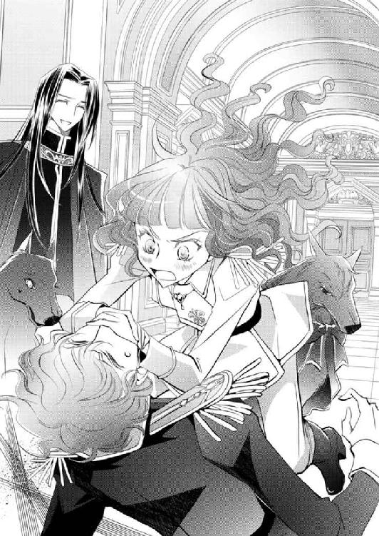
「......ミル、その辺で手をどけてください。わたしの誓約者が死んでしまいそうです」
「いっそ......！」
「ミルドレッド元帥、シドからの報告がまだですから、手にかけるのならばそれが終わってからにしてください」
ユリシーズがにっこり笑ってそう諭すと、煌めく暁の姫元帥は、頰を赤く染めながら、渋々掌をどけた。
「ぐはっ、元帥、本気でしたね......!?」
「貴様が、み、妙なことを口にするからだ！」
「妙？ あなたバレていないとでも思って」
「うわあ！ だから言うな......！」
再び伸びてくる手を、シドはひょいとかわして、ユリシーズを盾に、背に隠れた。
「落ち着きなさいよ、ミル。あんたがわちゃわちゃしてたら、余計にシドもユリシーズも面白がっちゃうんだから。男はそーいうところ、ホント子どもなのよ？」
乙女ヴァハラ、クインの呆れ声に、ミルドレッドはむっつり黙り込んだ。
「シドも、元帥をからかうような真似はおよしなさい。ユリシーズも、笑ってはいけませんよ」
今度はシドとユリシーズが、イムにそう言われ、互いに顔を見合わせた。
「シド、元帥とユリシーズに報告を」
「あー、そうだね。とりあえず今わかっていることを伝えに来た」
「ファウベル家のことですね」
ユリシーズはうなずいた。
「ファウベル家は、小娘が一歳になるかならないかくらいの頃にローデリー地区に引っ越してきたんだけど、もともとは海沿いのクロステアという小さな町に住んでいたそうだ」
「クロステア。教堂はない町ですね」
「すんごい田舎だよ。小娘の父親、レアンドロ・ファウベルは、若い頃は王都に住んでいたんだけど、結婚後引っ越して、クロステアで学校の教師をしていた。母親のクラリサ・ファウベルも王都で高等教育を受けていたが、身体が丈夫じゃなくて、あまり家から出られなかったようだ。そこで、恐らくだが妻の療養にと、のんびり暮らせる田舎に引っ越したんじゃないかな」
ユリシーズやミルドレッドは口を挟むことなく、シドの説明に耳を傾ける。
「話を聞く限り、ごく普通の家庭でしかなかった。でもひとつ、ちょっと聞き捨てならない情報が入ってきたんだ」
「聞き捨てならない情報？」
ユリシーズが聞き返すと、そう、とシドはうなずく。
その眉間には、微かにしわが寄せられていた。
「こっちに引っ越してきたレアンドロは教師をしながら、余った時間のすべてをヴァハラ研究にあてていたらしい。小娘の話によれば、趣味の範疇には収まりきらない熱心さだったってね。で、その時小娘は確かに言ったんだ。両親ともヴァハラの誓約者じゃなかったって」
「わたしも聞きました。つい先日のことです」
「だけど、クロステアで近所に住んでいたという男に聞いたんだよ。ファウベル家には、大層立派な体格のヴァハラがいたって」
ユリシーズとミルドレッドが、思わずといったように顔を見合わせる。
「犬と見間違えたんじゃなくって？」
「喋っていたそうだよ」
クインの問いに、さらりと返す。
シドは、しかも、と言葉を続けた。
「そのヴァハラがちょっと特殊なんだ」
「なんだ？ もったいつけずに早く言え」
ミルドレッドに急かされて、シドはにやりと笑った。
「別にもったいつけたわけじゃありませんよ」
「イヤッ、じゅうぶんもったいつけてるわよ、シド！ 早く教えなさいってば......ッ！」
クインからも詰め寄られ、シドは肩を竦めた。
「そのヴァハラ、白毛だったのですよ」
「あ、イム!?」
「もったいつけることではありませんよ、シド」
イムにたしなめられて、シドは小さく唇を尖らせた。
「僕が言いたかったのに」
「ファウベル家には、白毛のヴァハラがいた......」
「両親のいずれかが誓約者ということでしょうか」
クロステアにいた頃は、ラウラはまだ生まれていないか乳児だし、クロエも幼児だ。ごく普通に考えれば、白毛のヴァハラの誓約者は、両親のどちらかということになる。
ユリシーズの言葉に、だけどさ、とシドが口を挟んだ。
「小娘は、両親は誓約者じゃないって言ってたんだよな。別に噓つく必要ないだろ？」
「幼いからわからなかった、ということはありませんかね？」
シドとイムが首を傾げる中、
「誓約者は両親のどちらでもない、という可能性はないのか？」
ミルドレッドが、ふと思いついたように口にする。
「ああ、確かに」
「その可能性はありますね」
「ヒューもサクリクスと誓約したのは三歳だったし」
豊かなプラチナブロンドの髪の、不思議な力を持つ彼女こそが、その白いヴァハラの誓約者なのではないか──。
「クロエ・ファウベル」
シドとユリシーズは、声を揃えて、その名を口にした。
「リーは、リーのお母さんに会いたくないのかなって思ったんだ」
クロエのその言葉を聞いて以降、リムル‐リシル‐リスレは、めっきり無口になった。
あれほどぎゃんぎゃんうるさかったのに、クロエやロムロが話しかけなければ、口を開こうとしないのだ。
リムルが一度は蹴散らした動物たちが再び集合し、クロエの後ろからずらずらついてきても、何も言おうとしないのだから。
最愛の妹であるラウラ以外には、心配りを怠りがちだが、さすがに自分の身の内にいるリムルには、最低限の気配りを見せたいクロエだ。
もちろん唯一目的地への道順を知るリムルに、本格的にへそを曲げられたら困る、という打算もある。
「そういえばリムル‐リシル‐リスレの、理想の誓約者ですが」
ロムロがのんびりと話しはじめる。
彼の柔和な表情や態度が、クロエにはちょっとだけ心地好かった。
「賢く逞しく健康で地位のある血筋のよき者で、さらに理知的で行動力がありかつ思慮深く優しく温かい心持ちでちょっぴり悪戯心のあるひと、でしたっけ？ そういう男性が好みなんですか？」
「ロムロくん、よく覚えていたね」
クロエが感心している内で、リムルがぴくぴくと小さな耳を立てている気配がする。
「あれ、でもそれって、ロムロくん、リーの理想に結構近くない？」
「はあッ!? 何を申す......！ このような者、全然理想とは違うわッ！」
クロエとロムロの思惑どおり、リムルはいきり立って叫んだ。
「えーそう？ まあ、地位のある血筋のいい者っていうのはどうなのかわかんないけど、性格的なところは結構近いと思うよ。ちなみにロムロくんて、いくつ？」
「十九歳です」
「えっ、あたしより年下なの？ うわ、全然見えない」
「クロエさんはいくつなんですか？」
「あたしは二十歳」
「ひとつしか違わないではないですか」
ロムロはにっこり笑う。
「まあそうだけど。えー、じゃあ、ロムロくん、十九歳で中尉って、すごくない？」
「ああ、それは、元帥の直属の部下ですので、階級がないのは格好がつかないということで与えられた、飾りのようなものですよ」
「そういえばロムロくん、ガーディナー将軍がクーデター計画をぶっ潰した時の五人の部下のうちのひとりだったんでしょ？」
「ですね」
「将来有望だね」
「む......。じゃ、じゃが、こやつには特別な力はないし、どこの馬の骨とも知れぬ身じゃろう」
「はははっ、リムル‐リシル‐リスレは、本当にいろんな言葉を知っているんですね。馬の骨だなんて、どこで学んだんです？」
整った面にやわらかな笑みを浮かべるロムロを、リムルは半眼で見上げた。
「其方には言われて嫌なことはないのか？ いつもいつもニコニコ笑うばかりではないか」
「笑顔はひとを幸せな気持ちにしますよ。少なくとも俺は、他者の本気の笑顔を見ると嬉しくなります」
ロムロは『ニコニコ』笑いながら、クロエの──リムルの頰に掌を触れさせた。かと思うと、ムッとするリムルの口元を軽くつまんで引き上げた。
「にゃ、にゃにをする......!?」
「ほら、笑顔。女の子は笑った方が可愛いですよ」
「......」
「にょっと、オムオうん、ああいのあおおいっはあないえ！」
ちょっとロムロくん、あたしの顔を引っ張らないで！
クロエが言うと、ロムロはすぐにごめんなさい、と指を離した。
ひとしきりクロエとリムルが文句を言ったあとで、ふと、小さなヴァハラがぽつりと漏らした。
「おなごは笑う方が可愛いのか。そのようなこと、──には教えられなかった」
肝心の単語が聞こえなかったが、なんとなく想像できた。
恐らく、「母上には教えられなかった」と、リムルは言ったのだろう。
リムルは延々と続く黄色い大地に目を向ける。
「妾は別に、母上にお会いしたくないわけではない。クロエ・ファウベルが望む場所には妾が連れてゆく。そうしたら其方も、妾の望みを叶えるのじゃぞ」
『リーは、リーのお母さんに会いたくないのかなって思ったんだ』
それはクロエの問いへの答えだった。
「互いの望みを叶えるために、おふたりは誓約をなさったのですか」
それまでふたりの誓約について一度も訊ねてこなかったロムロが、初めてそう問うてきた。
一ツ日程度の付き合いしかないが、ロムロはこのヴァハラ獣界でクロエを助けてくれたし、別に隠すことではない。
「そう。リーにはあたしの力が必要だし、あたしもリーの持つ情報が必要だったの」
「『はじまりの森』にクロエさんの探し物があるのですね。そこにはリムル‐リシル‐リスレの『母上』がいる、と？」
うなずくクロエに、ロムロは顎に指先を触れさせながら、何事か思案しているようだ。
「クロエさんの探し物とは、リムル‐リシル‐リスレの『母上』？」
「それは違う」
「あ、そうなんですか」
拍子抜けするロムロだったが、それ以上問いかけてくることはなかった。
ロムロの、他者に対する距離感は抜群だった。むしろもっと訊ねてくるかもしれないと思っていたクロエこそ拍子抜けする。
──まあ別に、どうしても話しておきたいってわけじゃないけど。
「ところでリー、もうそろそろ二ツ刻は歩いていると思うんだけど、『はじまりの森』はまだかな？」
クロエの問いに、リムルはだが、ふっつりと黙り込む。
「......リー？」
「む、......むぅ......、も、もうすぐ、のはず、じゃ」
「はず」
クロエはぴくりと頰を震わせた。
「クロエさん、また顔が怖い」
クロエ──否、同調したリムルが、ふるふると震えはじめた。
「リムル‐リシル‐リスレ？」
いきなりクロエの身が飛んだ。
ついてきた、空を飛べる者たちは慌ててクロエに従う。飛べない者たちは、地面から、まるで神を仰ぐように、一斉に顔を上に向けた。
ロムロもまた、軍服の裾を風にひらめかせながら飛んでいくクロエを見上げた。
クロエは高く高く上昇し、四方をぐるりと見回す。
だが白と黒の森は、視界のどこにも、一切引っ掛からなかった。
低木がパラパラと続く、鮮やかな黄色い大地が広がるのみ。
「......リー、これはどういうことかな」
クロエの低い声での問いに、リムルはびくりと震える。
「リィィー？」
リムルはきつく拳を握ると、力の限り叫んだ。
「はじまりの森はいったいどっちなのじゃああ！」
「──名はイーノス。左目が不自由だが、右目は美しい琥珀色。無口でほとんど喋りませんが、口を開く時には、いつも大事な言葉をかけてくれます」
やわらかな声が、ラウラの耳を優しく慰撫するように聞こえてくる。
「......ん」
「聞こえますか、新種のヴァハラくん。今言ったことを、ここにいるシシハヤたちに伝えてください。情報を集めてください。イーノスというヴァハラのことでしたら、どんな小さなことでも構いません」
──イー、ノス......って、今、喋っているのが、イーノスさん、じゃ......。
夢うつつにぼんやりそう思っていると、ピチュピチュとたくさんの囀りが聞こえてきた。
シシハヤの鳴き声だ。
だがその中に、特徴のある馴染み深いネムリンの声はない。
見たよ
見たよ
「見た者がおるそうじゃ」
ぼんやりと、キルラがそう返す。
「見た。......どこで、ですか」
ピチュピチュ
ピチュウピチュ
見たよ見たよ
あっちだゾあっち
「あっちだそうじゃ」
「あっちとはどっちですか」
ピチュピチュピチュ
ピチュウピチュウ
怖い怖い
あそこは怖いゾ怖いンだゾ
「怖い、場所じゃ」
「怖い場所？ もっと具体的に」
シシハヤが囀るたびに、キルラの朦朧とした声が通訳をする。
怖い場所
そこは行ってはならぬと言われている場所
決して近づいてはならぬ
近づけば
「ヴァハラの神に、のみ込まれてしまう」
「ヴァハラの、神」
──ヴァハラの神様......？
以前にも何かの会話の折に、ちらりと聞いたことはある。
ヴァハラの神とはなんなのだろう。
ヴァハラに神様がいるということ？ それとも、ヴァハラ自身が神様ってことなの？
ラウラは白い靄がかかる頭の中で、ぼんやり考える。
このヴァハラ獣界には、本当に神様がいらっしゃるのかしら。
ああ、ならば会ってみたいな、と。
ラウラは思った。
「ううむ、イーノスがいるのは怖い場所で、その怖い場所にはヴァハラの神がいて、近づけばのみ込まれてしまう、と？ ならばイーノスはヴァハラの神にのみ込まれてしまったということになるじゃあないか。ううむ、ううむ......」
悩ましげに唸る声が、少しずつ近く聞こえてくる。
「まあいい。吾輩はその場所が知りたい。新種のヴァハラくん、シシハヤに、頼むからちゃんとわかるように説明してくれと言ってくださいよ」
「うむぅ、むにゅう......」
「ちょっと、新種のヴァハラくん、聞いてます？ 寝ないでくださいよ！ 起きて！ 起きなさい！ 起きろおおお！」
「うるさいのじゃああ！」
どっちもどっち、という声で叫び合ったところで、ラウラはようやく覚醒した。
「あ」
目を開けたのに、紗が掛かったかのように、視界がぼんやりしている。
「あ、......れ？」
「な、なんじゃ？ よく見えんぞ？」
やみくもに手を伸ばしてみるが、その指先までもが、ぼんやりしていて、よく見えない。
「し、......将軍？ ガーディナー将軍？」
ラウラは小声で、ヒューバートを呼んだ。だが返事はない。
いつもならばそばにいて、ラウラが呼べばすぐに声をかけてくれるのに、どうして返事がないのか。
ラウラの胸の内に、サァッと不安の影が広がった。
「ヒューバートは？ おらんのか？ ......ヒューバート!?」
キルラの叫び声にも返事はなかった。
「ごめんねごめんねー。将軍はここにはいませーん」
ラウラとキルラの不安とはまるで裏腹な、場違いなほど陽気な声が響き渡った。
「......イーノス、さん？」
「はいそうですよ、お嬢さん」
明るい声を聞いた刹那、ラウラはつい先刻起きた出来事を、一瞬で思い出した。
黒い靄。
オズウェル・ジェメル。
ヴァハラを意のままにしようと開発された、甘い花のような香りを持つ秘薬。
透けたシシハヤやミュウィンと戦う、ヒューバートの背中......。
「......！」
ラウラは思わず後ずさる。だが背後には壁のようなものがあって、それ以上退くことができない。
「イーノスさ......、将軍はここにはいないって、どういうことなんですか」
「どうもこうも、言葉のとおりですよ。軍人さんとは話が通じないみたいだし、お嬢さんと新種のヴァハラくんにお願いごとがありまして、ここまで来てもらいました」
「ここ......」
視界をクリアにしようと何度も目を瞬かせる。
少しずつ、視力が戻ってきた。だがまだはっきりとは見えない。見えないことが、ラウラに恐怖を与える。だが小刻みに震えながらも、ラウラは前方にいると思しきイーノスを強く睨みつけた。
「将軍はどこに」
「軍人さんのことはどーでもいいでしょう。それより吾輩の話を聞いてくださいよ」
「どうでもいいわけないでしょう......!?」
「そうじゃ、なんということを言うのじゃ！」
ヒューバートが誰よりも強いことを、ラウラは知っている。絶対に無事だと確信しているけれど、だからといって心配しないはずがない。
ここに、ラウラのそばに、ヒューバートがいない。
ヒューバートの安否が知りたくて、胸の底から泡のように不安が湧き上がってくる。
ラウラの内で、キルラがしきりに「大丈夫じゃ、絶対にヒューバートは大丈夫じゃ」と励ましてくれる。
「おやおや、震えているんですか？ そんなに怯えないでー。じゃあこうしましょうよ。吾輩の話をちゃんと聞いてくれたら軍人さんのことを話しましょ。それでいいでしょう？」
ラウラはぐっと奥歯を嚙みしめた。
悔しいけれど、この場で主導権を握っているのはイーノスだ。きつく眉間にしわを寄せながらも、ラウラはうなずいた。
「お嬢さんと新種のヴァハラくんに協力していただきたいんですよ」
「協力？」
「はいそうです。実はですね、吾輩、ヴァハラ探しをしているんです」
「ヴァハラ、探し......」
「一ツ年くらい前ですかねえ、里帰りのためヴァハラ獣界に戻ったヴァハラなんですが、それ以降、人界に戻って来なかったんですよ。それで探しに来たわけです」
イーノスの説明はシンプルで、それゆえラウラの頭にもすぐに理解できる。だが同時に、不可解な点もたくさん出てきた。
「そなた人界には怖くて行けないとゆうておったじゃないか。あれは噓じゃったのか!?」
「えーはい噓っぱちでーす。もともと人界にいました」
ごめんなさいねえ、と悪びれず謝られて、ラウラは呆れた。
話している内に、次第に視界が晴れてくる。
ラウラはここが、今朝出発した『祝い森』であることに気づいた。背をぴたりとくっつけていたのは、発光する葉を持つ木だ。
そして恐る恐るイーノスに目をやる。
「......」
やはり先刻見たのは目の錯覚ではなかった。イーノスは黒い靄を纏わりつかせている。
ぞっと背筋を震わせるラウラを見て、イーノスはふふっと笑った。
「だから、そんな怖がらないでくださいよお。幽霊じゃありませんから、ね！ 吾輩あなた方にヴァハラ探しの協力をしてほしいだけなんですって。ホント、ただそれだけなんです」
イーノスの背後には、何百ものシシハヤが従っていた。それらはいずれも、青白い光を放つ、普通ではないシシハヤたちだった。
じぃわりと波打ち、膨らんで、しぼんで、様々な形を取っている。
ラウラはそんなシシハヤの群れからイーノスへと視線を戻すと、キッと目元に力を込めた。
「だったら最初からヘンな噓をつかず、そう言ってくださればちゃんと協力しました！」
「へえ？」
「本気で困っているんでしょう？ 姉さんを探すことが一番の目的ですけれど、わたしだって、キルラだって、もちろん将軍だって、こんな、攫うような真似をしなくたって、協力くらいしますよ......！」
ラウラは叫んだ。
だがイーノスは、きょとんと首を傾げる。
「将軍も？」
「そうですよ！ ガーディナー将軍はとってもお優しいんです。自分の身が危うくても、ひとを助けてくれるような、そういうひとなんです。だからあなたが誠心誠意、本当に困っているって言ったら、絶対手を貸してくれたはずなのに......！」
「そうなんだあ。でも将軍は吾輩のこと、最初に胡散臭いって言ったでしょ？ 不審に思う、とも」
うっ、とラウラは言葉を詰まらせたが、黙り込みはしなかった。
「それでも、あなたが本気の本音で......噓をつかなければ、将軍はちゃんと聞いてくれたと思うんです」
こうなっては過去を後悔しても遅いけれど。
「ふーん。お嬢さんは将軍のことをずいぶん信頼しているんだね」
「我も信頼しておるぞ！」
「でもいくら信頼しているからって、鎖に繫がれていたら日常生活大変でしょ？」
「──」
ラウラの表情が、ハッと強張った。
恐る恐る左手首に目をやり、右手の指先を触れさせる。
「しょう、ぐん......？」
ラウラはヒューバートを呼んだ。
「将軍、......将軍!? ガーディナー将軍......！」
呼べば、どちらかが求めれば、必ず誓約の鎖が淡い光を伴いながら出現し、そして求めた方へと一方が引き寄せられた。
何度も、何度も繰り返し現れた。
厄介極まりない鎖だった。
こんなことになってしまって、どうやって生活していったらいいのと、混乱と、少しの恐怖、怯えを抱いた。
けれどヒューバートを知るにつれ、互いを繫ぐ黄金の鎖が、とても大切に思えてきた。
このままずっと繫がっていてもいいんじゃないかと、現実的ではないことを、願いもした。
心を通わせることができてからは、物理的な鎖という繫がりがなくとも、自分たちは繫がっていられると、そう信じられた。
誓約を解除し、この、手首を繫ぐ鎖がなくなっても大丈夫、と......。
けれど。
「切、れた......？ 鎖が、ない......」
ラウラは呆然と呟いた。
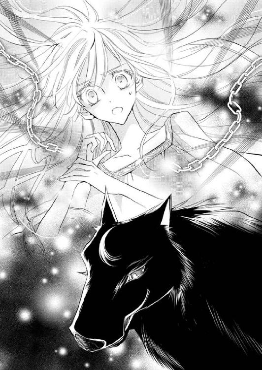
そうだ、先刻目が覚めた時にだって、ラウラはヒューバートを呼び──求めた。
ここに来てほしいと願ったのに、鎖は出現しなかったではないか。
「はい。吾輩が断ち切って差し上げました。どうぞ存分に感謝してくださって結構ですよ！」
むふ、と胸を張るイーノスに、言葉もなく唇をわななかせたラウラの代わりに反応を見せたのは、同調したキルラの方だった。
「貴様、ラウラとヒューバートの誓約の鎖を、き、切った、じゃと......!? なんてことをするのじゃあ！」
キルラ──ラウラは、イーノスに飛びかかった。
「おわっ、わっ、な、なんで怒るんですか──！ だって吾輩、とってもいいことをしてあげたでしょう？ 誓約者同士が鎖で繫がるなんて、普通はないですよっ。何をするにも離れられないし、生活するのも大変だし、湯浴みひとつだって、先刻のようにバタバタするじゃありませんか」
「ふたりはそれでよいのじゃ！」
「いいのは新種のヴァハラくん、君だけなんじゃありませんかあ？ 君は人間じゃない。何が不便で何が嫌か、全然わかってないでしょ」
むっ、とキルラは唇を引き結んだ。
「断言します。吾輩はよいことをしたんです。将軍とお嬢さんは、絶対吾輩に感謝すべきですぞ！ だからお嬢さん、あなたは礼として、吾輩に協力をしなければなりません」
「勝手なことを申すでない！」
憤然とするキルラとは逆に、ラウラは声を奪われてしまったように、呆然とした。
──本当に、誓約の鎖、切れてしまったんだ......。
もうヒューバートと繫がっていないのだ。
そう思った瞬間、ラウラの胸に、恐ろしいほどの寂莫感が広がっていく。
確かにイーノスが言うとおり、ヒューバートと鎖で繫がれた生活は不便極まりなかった。
だがその不便さをおしてなお、ラウラはヒューバートのそばにいたかった。
それが現実的ではなかったとしても、ずっと、ずっと。
──こんなにも呆気なく切れてしまうなんて......。
そう考えた時、ふと、ラウラは顔を上げた。
「どうやって、鎖を切ったんですか」
「簡単です。薬を使ったんですよ」
「薬......」
「ええ、お嬢さんも知っているんじゃないかな。ジェメル卿がつくった、ヴァハラを自由にできる、あの『薬』」
それはラウラのものか、あるいはキルラの感覚なのか......ざわ、と背筋があわだった。
「この、前肢の先にね、薬を含ませているんです。原液ではありませんが、ほおら」
イーノスはシシハヤへと肢先を突き出す。すると、ただでさえ青白くぼんやりした存在だったシシハヤが、さらに青く光を帯び、輪郭までもが滲んでゆく。
「な、......」
「これで鎖を引き千切りましたし、ヴァハラ獣界の獣たちに、言うことを聞いてもらいました。この匂いはね、ヴァハラだけでなく、ヴァハラ獣界中の獣に効くんですよ」
「な、なんなんですか、それは......」
香りは、サーリァという花の香りによく似ている。だが花の香りはこんなふうには作用しない。
いい香りだとうっとりすることはあるが、意のままにできるようなものではない。
「さあ、吾輩もよくわかりません。ただ」
「......ただ？」
「姫が言ってました。『その匂いは嫌いじゃ』とね」
「姫......リムル‐リシル‐リスレのこと」
「そう。どうしてと訊きましたらね、姫、なんて答えたと思います？ 『母上の匂いにそっくりだからじゃ』ですって。姫ってば『母上』が嫌いらしいですよ」
「母、上......？」
『母上』という言葉を無視できなかったのか、キルラが身を乗り出した。
「ええ、『母上』。姫の母上って、おんなじ形をしているんでしょうかねえ？」
想像しているのか、イーノスがふふっと笑った。
「話を戻しますとね、吾輩ヴァハラを探しているわけですよ。だがヴァハラ獣界は広い。あちこち探してはみたんですが、まるきり見つからない。でもね、新種のヴァハラくん、君はヴァハラ獣界のどんな生き物とも会話をすることができる。そしてここにいる空魚は、仲間同士念を送り合うことができると、昨日君たちを観察していて気づいたんです」
だからずっとあとをつけてきたのかと、ラウラは思い至る。
「ヴァハラ獣界中にいる空魚たちのネットワークがあれば、吾輩のヴァハラが今どこにいるのか探し出せるかもしれない。だが吾輩は、空魚を意のままにできても、何を喋っているのか皆目わからない。そこで新種のヴァハラくん、君の出番だ。空魚が念で伝えてくる情報を、君が訳してくれたら、吾輩はヴァハラを探し出すことができる......！」
イーノスは心底嬉しそうに、そう叫んだ。
「貴様、誓約の鎖を切られた上にかどわかされた我らが、貴様に協力すると思うのか」
キルラがキリキリと目をつり上げながら、イーノスに詰め寄った。
「おや、協力はできない、と？」
「無論じゃ！ 我らをヒューバートのもとへ戻すがよい！」
「嫌だ」
酷薄なイーノスの声が聞こえたのと、前肢が押し当てられたのは、ほとんど同時だった。
クラ、と眩暈がラウラを襲う。
──ああ、また、だ......。
意識が遠のく。頭の中が真っ白になって、何も考えられなくなる。
ラウラ、ラウラ、しっかりするのじゃ......！
だが、今にも意識を失いかけたラウラに、キルラが懸命に声をかけてくる。その声に勇気を得て、ラウラは意識を保とうと、必死になった。
「おや、眠らない？ 意外としぶといねお嬢さん」
「あな、た......、こんなふうに、無理やり従わせようとしても、......」
「だって新種のヴァハラくんに協力してもらわなきゃ、イーノスは見つからない」
「イー、ノス......って、あなた、じゃない、の......？」
「いーえー。吾輩のは偽名です。イーノスは、吾輩の誓約のヴァハラの名ですよ」
喉が鳴る。
では。
「逆、同、......調」
「ご名答！ 吾輩は人間です、お嬢さん」
ふ、とヴァハラの口元が歪んだ。
ああ、だからヴァハラらしからぬ表情だと思ったのだ。
誓約のヴァハラと誓約者は、同調ができる。
誓約者の中に、ヴァハラが入るのだ。
けれど同調は難しく、滅多に成功しないといわれている。できる方が稀なのだと。
そしてヴァハラの中に誓約者が入る、いわゆる逆同調は、誰であろうと絶対にできないものとされていた。
だがそれを可能にした人物がいた。──オズウェル・ジェメルだ。
彼は薬品を使い、ヴァハラを意のままに操ったばかりか、逆同調までしてみせたのだった。
その秘薬は、ユリシーズが処方箋も含め、すべて処分したと聞いていたのに。
ラウラはきつく唇を嚙みしめる。
「あなた、何、者なの」
「吾輩は、アラステア。セルリア教堂の教主ですよ、お嬢さん」
「アラステア、教主......」
セルリア教堂といったら、ローデリー地区内にある、もうひとつの教堂ではないか。
しかも、
「教尊候補、なんじゃ、ないんですか？ オフラ教の頂に、立つかもしれない......」
「ああ、そういうの全然興味ないんですよねえ。吾輩、別にオフラ教があろうがなかろうが構いませんし、ロレンシアの皆さんがヴァハラを持とうが持つまいが、どっちでもいいですし」
そんな、とラウラは顔を歪める。
イーノス......否、教主アラステアは、ひょいと首を傾げた。
「吾輩にとって大事なのはイーノスだけなんで。ほかのヴァハラなんてどーでもいいんです。ヴァハラだけじゃなくって、人界とかヴァハラ獣界とか、ほかの生き物とか人間とか、ね。どうなっても構わないんですよ」
「......」
曇る視界を晴らそうと、何度も首を振る。
「なんということを言うのじゃ。誰が、どうなっても構わぬなど、貴様は本気でそう思っておるのか？」
「ええ本気ですよ。だって吾輩の世界に絶対必要なものって、あんまりありませんからね」
「だから、それ以外のものは、どうなってもいい......？」
「普通皆そんなもんじゃありませんか？」
ぞっとするようなことを、あまりにもあっさり口にするアラステアに、ラウラは再び首を振った。
「そんなもんじゃありませんよ......！」
「見解の相違ですね。よくあることです」
アラステアは平然とそう言い放つ。
──話が通じない......！
「お嬢さん......、じゃなくて、新種のヴァハラくん。吾輩に協力してくださいよー。でないと、君の大事な誓約者のお嬢さん、どうにかしちゃうかもですよ？」
そんな、揶揄するようなアラステアの声が耳に触れた瞬間、発火してしまうのではないかと思うほど、全身が熱を持った。
「ラウラを傷つける輩は、誰であろうと我が許さん──！」
キルラの怒りは相当なもので、ラウラは身体の熱さとは逆に、心がひやりとする。
キルラは我を忘れると、力が暴走するのだ。
つい今朝方も、ラウラとヒューバートのケンカに触発されて、とてつもない力を放出させてしまった。
──キルラ......！
落ち着いて、とラウラは心の内で呼びかける。
その声が聞こえたのか、キルラはハッと動きを止めた。
「あっ」
キルラ自身も気づいたのだろう、うろたえながら身体を竦めた。
大丈夫、大丈夫だよ、キルラ。
繰り返しキルラを呼んで宥める。
キルラは自らを落ち着かせようと何度も息をついた。
大丈夫。
だが落ち着いたキルラにホッと安堵するや、すかさずアラステアの前肢が、ラウラの額に押し当てられた。
それは、薬を含ませたという方の肢ではなかったが、押しつけられた硬い肉球の感触に、ひやりと背筋を震わせた。
「知ってます？ 吾輩、同調を解くことができるんです」
「......ッ!?」
それはヴァハラの王しかできないはずだと言いかけたが、すぐに思い出す。
オズウェルがヴァハラ狩りをおこなった時、ヒューバートとサクリクスは同調をしていたのだと。その同調を無理やり解かされ、誓約の鎖もまた、引き千切られてしまったのだと、そう聞いていた。
オズウェルと同じような薬を纏い、ヴァハラ獣界の獣を従えるアラステアならば、ラウラたちの同調を解くこともまた、できるのかもしれない。
はったりではなく本当だと、ラウラは直感し、きつく目を閉じた。
「新種のヴァハラくん、お嬢さんから引き摺り出されたくなければ、吾輩の言うことを聞いてくださいな」
「き、貴様、卑怯じゃぞ！」
罵倒は、アラステアにはそよ風ほどにしか感じなかったようだ。上機嫌に目を細めて、なんとでも言ってくださいなあ、と笑った。
「シシハヤの言葉をまとめてください。イーノスはどこにいるのか」
「ううう......」
「はーやく」
同調を解いたら、ラウラの身は危険に晒される。ここはヴァハラ獣界だ。離れ離れになったら、ラウラを守れない。──キルラはそう考えたのだろう、懊悩しながらも、空中にたゆたうシシハヤに、イーノスのことを訊ねた。
シシハヤたちは、くるりと四方に頭を向けると、ゆっくり回った。
ネムリンも仲間と交信する時に、よくああやってあちこちに頭を向けていたと、ラウラは思い出す。
──ネムリン......。将軍と一緒にいてくれているよね？
ラウラは小さな空魚の無事を願った。
しばらくして、さざなみのようにシシハヤたちが鳴きはじめた。
ピチュピチュ
ピチュウ！
ウピチュ！
いたよ
あそこだ！
あそこ！
「あそこ」
『白黒の森に──！』
シシハヤたちは一斉にそう囀った。

最初に戻ったのは聴覚だった。
絶えず打ち寄せる波の音が、少しずつはっきりと聞こえるようになった。
開けたままだった双眸にも、力が入る。瞼に力を込め、一度しっかり閉じる。開けて、閉じて、三度繰り返したところで、ようやくぼんやりと物が見えるようになった。
目に入ったのは、眩しいほどの白い砂と、青白い魚──尾びれに赤いリボンを巻いた、ネムリンだった。
ンピチュー
微かな鳴き声が聞こえる。
「......ああ、大丈夫だ」
キルラの通訳がなくとも、なんとなくそう答えると、ネムリンの尾がふるふると震えた。
これは嬉しい、あるいは安堵した、ということだろう。
一ツ日以上ともにいて、その都度、ネムリンがああ言ったとか喜んだとかラウラが通訳してくれていたのだ。動きでも少しは理解できる。
「おまえ、置いていかれたのか」
ピチュン......
しょんぼりしている、ように見える。
指先を動かしてみる。──動く。
ヒューバートは腕に力を込め、ネムリンを指先で撫でた。
引き千切られたかのような痛みを覚えた右手首は、変わらずにある。だがヒューバートは、そこにあったはずの大切なものがもうないことに気づいていた。
ラウラとヒューバートを繫いでいた誓約の鎖が──ない。
その喪失は、ヒューバートに思いも寄らぬ衝撃を与えていた。
誓約の鎖が無理やり断ち切られたのはこれで二度目だ。
ヒューバートはきつく奥歯を嚙みしめた。
起きられるだろうか。
全身がひどく重い。あの薬を思いきり吸わされたのだろう、猛烈な倦怠感と、ヴァハラ獣界の圧に、身体を支えようとするのに、なかなか立つことができない。
ヒューバートは焦りを抑えて、一度大きく息を吸った。
腹の底に力を溜め、足先から順にその力を巡らせる。
ゆっくりと上体を起こし、時間をかけて立ち上がった。
一瞬の眩暈をこらえたヒューバートは辺りを見回した。
シシハヤやミュウィン、そして巨鳥の姿はなかった。期待はしていなかったが、やはりラウラとキルラも、当然イーノスもいない。
陽の傾きを見て、意識を失ってさほど経っていないことを確認する。
四半ツ刻程度だろうか。
ヒューバートは歩きだす。一歩目はよろけたが、二歩目はしっかりと足の裏を砂地に着地させる。一歩進むごとに、身体に力が戻ってくる。
膝を曲げ、肘を曲げ、首を回し、肩を回す。
落ちた剣を拾い上げる。
それらの動作をスムーズにおこなえた、と実感した時、ヒューバートは隣でふよふよ浮かぶネムリンを掌でそっと包み込むと、一気に走りだした。
ピチュンピチュ！
「何を言っているかわからない」
ンピチュー......
「ラウラとキルラ‐キルレ‐キロルを探す。おまえの力を貸してくれ」
ピ！
掌の上のネムリンは、小さな小さな顔をヒューバートに向けた。
通じているのかどうか、まったくわからないが、ネムリンは掌の上から飛び上がった。そしてこれまで見てきたように、四方八方、順に頭を向ける。
シシハヤは仲間と交信する時に、こうしてあちこちに頭を向けるのだ。
足を止め、ネムリンの様子を見守る。
ピチュンピチュ！ ピチュピチュン！
ネムリンはまくしたてるように、立て続けに囀った。
それは、本来の目的であるクロエの居場所を見つけたのか、それともラウラとキルラを探し当てたのか、ヒューバートにはわからない。
うっすら眉間にしわを寄せるヒューバートに、ネムリンはもどかしげに尾を振ると、頰にぶつかってきた。
昨日名付けた際、ネムリンがこうしてラウラの頰に触れたことを思い出す。
「ラウラとキルラ‐キルレ‐キロルの方か」
ピチュン！
通じているのかいないのか、やはり判断がつかない。だがこの広いヴァハラ獣界をやみくもに走り回っても、ラウラたちを見つけるのは、この砂浜の中から白い石をひとつ見つけ出すほどに、難しいことだろう。
ならばこれまで水先案内人だった、この小さなシシハヤを信じるのは、賭けとしては分がいい方ではないか。
小さな魚だが、ネムリンが自ら考え行動する生き物であることを、ヒューバートは知っている。
ヒューバートは即断した。
「では頼む」
ンーピチュ！
任せるべさ！
そんなふうに言ったように聞こえた。
ネムリンが進む方へと、ヒューバートは走る。
ピチュンピチュ。ピチュピチュン！
ネムリンは以前にも増してお喋りだった。絶えずヒューバートに語りかけてくるのだが、もちろん、まったくわからない。
だがネムリンにとっては、ヒューバートが理解できようができまいが、構わないのだろう。ひっきりなしに囀る。
その様子は、どうやら何か、怒っているらしい。
ひとに対してすら、心の機微に疎すぎるとシドに罵られるヒューバートだ。シシハヤの気持ちに添うことは、さらに難しそうだが、あながち間違いでもないようだった。
だが何に対して怒っているのかまでは、察することはできなかった。
「身体が透けているということは、つまりおまえもあの薬を嗅いだか被ったかしたということか」
そう考えて、ふとヒューバートは己の腕を見下ろした。
視力がまだ完全には回復していないためか、視線が安定しない。真っ直ぐ見ているはずなのに、不安定に揺れることがある。
その、不安定な視力で見た指先の色が、ほんの少し薄い──気がする。
指を握ると、ちゃんと感覚がある。剣も握れるし、力も回復してきている。
ならば少しくらい透けていても問題ないと、ヒューバートは己の指からあっさり視線を外した。
果てなしの海を背に、砂浜を抜ける。そこで一度止まると、ぐるりと四方に目を配った。
「......」
うっすら目を眇める。
深紅の巨鳥がいた。
ヒューバートは鞘に納めていた剣を抜いた。
「再戦か」
つい先刻、気絶させた巨鳥だ。
イーノスの眷族である印として、身体がうっすらと透けている。
ヒューバートと戦って敗れたことが、あの鳥の矜持を傷つけたのだろうか。
深紅の目が、鋭く光った。
ヒューバートを見下ろし、ギャアと高く鳴いた。
「おまえに関わっている暇はない」
だが巨鳥はヒューバートの声を無視し、上空で旋回した。
凄まじい勢いで急降下してくる巨鳥を、地面に転がって避けたヒューバートは、すかさず立ち上がる。続けざまに、嘴と鋭い爪を持つ前肢を繰り出してくるのを避けながら、ヒューバートもまた剣で突いた。
ナイフのような深紅の嘴が、ヒューバートの頰を掠る。すんでのところで回避すると、剣で巨鳥の翼を薙いだ。
一歩退いたヒューバートは、短く息を吐き、吸った。巨鳥は再び舞い上がると、一気に落ちてくる。嘴が眼を抉り取ろうと突き出された瞬間、ヒューバートはふわりと飛んだ。
ピチュン！
ネムリンの囀りが聞こえたか否か、という一瞬に、剣を振り上げる。そして先刻とは逆側から、巨鳥の脳天に、重い剣を振り下ろした。
「～～ッ！」
声なき声をあげて、巨鳥は地面にぐったりと落ちた。
二度目の、完膚なきまでの敗北だ。
相手が意識を失っているのを確認したヒューバートは、そのまま歩みを進め──だがふと、巨鳥を振り返った。
ピチュン？
ネムリンが問うように顔を近づけてくる。
「......」
ヒューバートはネムリンを、そしてのびる巨鳥を一度ずつ見ると、おもむろに背負った荷から、丈夫な紐を取り出した。
ンーピチュ
「走るよりこれに乗って飛べば早く移動ができるし、空から見つけやすい」
ピチュ、ン！
のびている巨鳥の首に、緩く紐を巻く。また動きの邪魔にならないように、翼にも紐を巻きつける。すべての紐をまとめて背に持ってくると、ヒューバートは巨鳥に活を入れた。
ハッと意識を取り戻した巨鳥は、己がどういう状態か理解できなかったようだ。首を左右に振り、背後にヒューバートがいることに気づくや、まるで人間のようにぎょっとした顔をした。
ヒューバートは微かに目を細めると、巨鳥の背に乗った。
キャアァァ！
叫びながらヒューバートを振り落とそうとがむしゃらに翼を羽ばたかせるも、ヒューバートは抜群の身体能力を発揮し、落ちるような無様なことにはならない。手綱をしっかり握って引くことで、巨鳥を完璧にコントロールした。
キャアア！
「飛べ」
ヒューバートの命令に従ったわけでもないのだろうが、巨鳥はいきなり急上昇した。
風がヒューバートの黒髪をなぶる。
ンピチュー！
手綱を締めたり緩めたりしながら、肩に乗るネムリンが頭を向ける方へと進んでいく。
あっという間に、『果てなしの海』は見えなくなった。
「イーノスとやらのヴァハラの居場所はわかったのじゃから、我らをヒューバートのもとへ帰すのじゃあ！」
キルラが目をつり上げてアラステアに詰め寄るも、ダメですよと首を振られた。
「なにゆえじゃ！」
「だって本当に『白黒の森』にイーノスがいるかわからないじゃないですか」
「我が噓をついているとでもいうのか！」
どれだけ貴様が憎らしかろうと、我は噓などつかん、とキルラはきっぱり言い放つ。
「じゃなくってですねえ、もしかしたらイーノス、移動しちゃっているかもしれないじゃないですか。そしたらまた、シシハヤに訊かなきゃならないでしょ？ で、そこに君がいなけりゃ困っちゃうじゃない」
「つまり貴様のその目がイーノスとやらを見るまで、ともにいよと、そういうわけか」
「そういうわけです。さあ、行きましょうか」
宙に浮いたアラステアを先頭に、ラウラもまた、身を浮かせる。アラステアの命令を忠実に守るシシハヤとミュウィンたちが、ラウラの周囲をがっちり取り囲んでいた。
ほんの少しでもラウラが飛び出そうものなら、ミュウィンの毒液が降り注ぐ。
「......」
ラウラはきつく唇を嚙みしめて、アラステアのあとに続いた。
白黒の森......はじまりの森のことは、以前キルラから聞いている。
ヴァハラの神が、最初のヴァハラをつくったという森で、キルラは育ての親である前の前の王から、決して近づくなと言われていたのだという。
──そんなところに、どうしてヴァハラが？
厄介ごとに巻き込まれているのではないかと、ラウラの胸の内には、どんどん不安が広がっていく。
その不安は、行かない方がいいと言われている場所に向かうからというだけではなかった。
この一ツ月間、ラウラはヒューバートとこんなに離れたことはなかった。
ずっと一緒だった。
けれど本当は、ずっと一緒にいられることこそが奇跡だったのだと、ラウラは思う。
その奇跡を、失いたくない。
これからもヒューバートとともにいたい。
『一生一緒に』
ヒューバートがそう言ってくれたのは、ほんの少し前のことなのに、今は、こうして離れ離れになってしまった。
心細い。
怖い。
また、無事に会えるのだろうか。
ラウラが意識を失ったあと、ヒューバートはどうなったのだろう。今どこにいるのか。
ヒューバート自らラウラから離れるような真似など、絶対にしないだろう。
きっと戦ってくれた。
けれど現実は、今、この場にヒューバートはいない──。
ふいに、ぞくりと背筋が震えた。
──将軍、......将軍、どうか無事で......。
ラウラ。
そっと、キルラが意識に触れてくる。
キルラ、キルラ......。将軍は大丈夫なのかしら。誓約の鎖が失われてしまって......。将軍が簡単に負けるはずがないよね？
そう言いながらも、ラウラの胸には、嫌な予感が満ちてくる。
どうしようもなく不安で、今すぐにヒューバートに会いたくて、会いたくて、どうしても会いたくて、全身から熱い想いがこみ上げてくるのだ。
落ち着くのじゃ、と諭そうとするキルラもまた、不安そうだった。
ふたりの誓約者を繫ぐ誓約の鎖が切れたことによる影響は、キルラにはないのだろうかと、ラウラはふと思った。
不安ばかりが、次から次へと押し寄せてくる。
キルラが言うように落ち着かなきゃと思っても、胸がざわめくのを抑えられない。
ヒューバートとともにいられるよう、強くなろうと思った。
けれどこうして離れてしまうと、自分が本当にちっぽけで弱い人間だと思えてならない。
ヒューバートと一緒にいられるために、ひとりでいる時だって強く在らなければと鼓舞したいのに、竦んで真っ直ぐに立てなくなる。
ラウラ。
ヒューバートの声を思い出す。
──将軍は無事ですか？
助けてほしいなんて言わない。ただ、ヒューバートが無事であると、それだけを知りたい。
ヒューバートが無事だとわかれば、ラウラもがんばれる。この危機を乗り越える力が湧いてくる。
──ガーディナー将軍......。
ラウラの、今にも消え入りそうなほどの心細さを我がことのように受け止めたのだろう、キルラが決然と口を開いた。
「あらためて問う」
「ん、なんですか、新種のヴァハラくん？」
「ヒューバートはどうしたのじゃ」
アラステアは一度瞬きをした。そしてああ！ と声をあげる。
「忘れてましたあ。そうだそうだ、吾輩の話を聞いたら軍人さんのことを言う約束でしたもんね！ すごかったよ将軍」
「む、そ、そうか」
「意識のない君を抱きかかえて、空魚や毒クラゲや巨大な鳥たちの攻撃を避けるばかりか自身も攻撃を仕掛けて、気迫で動きを止めてさ。吾輩もう少しでばっさり斬られるところだったよ」
「そうか」
攻撃をした当の本人からの言葉とはいえ、少しだけ安堵する。だがそんなラウラを、すぐにアラステアはどん底に突き落とした。
「まあ、最後はやられちゃったけどねー」
「......え」
「吾輩のこの薬を吸い込んで砂浜に倒れたあとは知らない。空魚と毒クラゲは吾輩について来たけど、そこに残してきた鳥が、エサにしちゃったかもね。すごくでかい鳥だったから、いくら将軍が強くても、意識がない時に飲み込まれたらさすがに敵わないでしょ」
「──」
ぞっと、全身を怖気が走った。
「まーそんなことどうでもいいさ。そろそろ白黒の森が見えてくるかな」
どうでもいい。
あっけらかんとした声が耳に入るなり、ラウラは空中にぴたりと止まった。
「どうしたの。早くおいで。来ないと空魚にやられちゃうよ？」
アラステアの声に従い、シシハヤがラウラに迫ってくる。
全身を包み込まれ、息もできない。だがラウラは、その場から微動だにしなかった。
どうでもいい？
ひとの命を、どうでもいいなんて、どうして言えるの？
心の底から怒りが湧き上がってくる。その怒りを、ラウラは止めることができなかった。
ラウラの怒りはまた、キルラの怒りでもあった。
──将軍──ヒューバート──ガーディナー将軍──我の大事な二番目の誓約者──
ラウラとキルラの想いが、心が、ひとつの身体の中でぐるぐると回り、交差し、こらえようもなく膨れ上がっていく。
止められなかった。
許せない、と思ってしまった。
ラウラの全身から、淡い光が立ちのぼる。
「......ん？」
じわじわと光は量を増し、ラウラを包み込んだ。接近しようとしたシシハヤが、光に触れるなり、慌てたように飛びのいた。
「どうでもいいなんて言わないで。命を、そんな簡単に扱わないで」
震える声で、ラウラは言った。
だがアラステアは、青い目を細めて、ふいとそっぽを向く。
「興味ないんですよぉ。他人の命になんて」
「興味がなくても、軽く扱わないで！」
ラウラが叫んだ刹那、ドン！ と光が空高く放たれる。
それは、キルラの力が暴走した時と寸分違わぬ光の柱だった。
「すごいな、同調して、その力ですかあ！」
ラウラの、キルラの怒りを、アラステアはまるで受け止めようとしない。むしろおかしそうに笑われて、ラウラはますます怒りと、そして強い悲しみを抱く。
──どうしてこういうひとがいるの......!?
悲しくて悔しくて、その思いは光となって、全身から逬る。
「茶化すでない──！」
キルラが叫んだ途端に、燦然たる光が、アラステアがいる方角へと向かう。
「おおっ！」
だがアラステアが避ける必要もないほど、光はかけ離れた場所へと放たれる。
全身を覆う光はますます増して、ラウラが見えなくなるほどだった。
光線は黄色い地面を抉り取るように、四方へと飛んでいく。
「我の誓約者をバカにする者は、誰であろうと許さん。謝罪するのじゃ！」
「嫌ですよ。だって吾輩、悪いと思っていませんもーん」
アラステアは飛ぶ速度を増した。ラウラとキルラも追う。
進みながらも、幾度となくアラステアへと光の矢が向かうが、一向に当たらない。
黄色い地面を眼下に、どんどん進む。進むうちに、地面が黄色から茶に変わり、やがて灰色へと変化していく。
木々にも変化があった。
若葉のようにやわらかな緑色の葉が生い茂った木から、紅葉をしているような鮮烈な赤へ、さらに濃い緑、そして黒へと変わっていく。
澄んだ水の川は、太い灰色の流れへと変わっていく。
心なしか陽の光も陰ったような、そんな鬱蒼とした雰囲気に、いつの間にか包まれていた。
「はあっ、はあ......！」
「お見事ですぞ。本当におふたりは完璧な誓約者と誓約のヴァハラだ。怒りまで同調して、そんな当たれば一瞬で絶命するであろう光を放てるとはねえ」
「あ、あ......」
ふいに、凄まじい脱力感に襲われたラウラは、よろよろと地面に下り立った。地に足先が触れるなり、その場にくずおれる。
「お嬢さんはお優しいですなあ。吾輩に攻撃を当てようとしなかったでしょう？」
「そんな、こと......」
「だが正解ですよ。吾輩が身体を借りているこのヴァハラ、まったく無関係ですから。無関係のヴァハラを傷つけるような真似、お優しいお嬢さんにはできんでしょう」
「......」
ラウラは唇を嚙みしめる。
「それにしてもバカですなあ、無駄な力を使って。怒っても、吾輩は吾輩の持論を変えませんよ」
アラステアもまた下りてくる。座り込むラウラを、まるで憐れむように覗き込んだ。
起き上がろうとして、だが身体を支えきれない。
それでもラウラは、アラステアから視線を外さなかった。
「バカだと言われても、わたしもわたしの想いを翻したりしません」
「我もじゃ！」
「だがそのために、体力を使い果たした。──今動けないでしょう。ここで吾輩がお嬢さんの首に牙を突き立てたら、命は潰えてしまいますね」
「──」
どうでもいいことのように、アラステアは言う。それでもラウラからは、決して目を逸らさない。
「動けないんですね」
「......っ」
「面倒くさいなあ」
アラステアは動けないラウラを自らの背に乗せようとした。
「白黒の森はもうちょっと先のようですし。ここでのんびりお嬢さんの体力が回復するのを待っている暇はありませんから」
その呟きと、微かな音がしたのは、ほとんど同時だった。
「......？」
なんの音か、と耳を澄ます。
ヂュィィ......
何かの鳴き声のように聞こえた。しかも、どこかで聞いたことがあるような気がする。
「......これは」
ヂュイ......
ヂュィィィ......
なんだろう、すごく嫌な予感がする。
白黒の森──はじまりの森まで、あともう少しだとアラステアは言った。
はじまりの森は怖い森。近づいてはいけない森──。
力の入らない身体を、精いっぱい動かす。
そして視界に映ったものに、瞠目する。
ヂュィ、ヂュィ、という音とともに、水が、じわじわと迫ってきたのだ。
水......いや、違う......！
「あれは」
「なんと、水の守護者ラハヤではないか！」
「ラハヤ！」
それは一ツ月ぶりに見る、ヴァハラ獣界の生き物だった。
ラウラにとっては、ヴァハラの次に印象深い生き物だ。
ラウラの姉、クロエを眠りにつかせた生き物で、当初は憎んですらいた。だが実際は、クロエを魔の手から守ろうとしてくれていたのだ。
ラハヤは水の衣を持つ。海のように、川のように波打ちながら、ラウラたちに近づいてきていた。
「......おやおや、これはまずいんじゃありませんか」
アラステアが目をやった方に、ラウラもまた顔を向ける。
「あ......」
そこにあったのは、視界いっぱいに広がるラハヤだった。
泡のようにモクモクと盛り上がり、その場一帯を覆っていた。それは減るどころか、どんどん増えていく。
しかも押し寄せてくるラハヤの後方から徐々に凍ってきているのが見えて、ラウラは背筋にじわりと汗をかいた。
このまま押し寄せてきたら、ラウラなどあっという間にラハヤの波にのまれ、氷に閉じ込められてしまうだろう。
ラウラは腕に力を込めて立ち上がろうとした。だがすぐに、がくんと膝が折れてしまう。まだ力が回復していないのだ。
ラハヤはもう、すぐ近くまで来ている。
「うう......ッ！ ち、力が入らぬ......！」
焦るラウラとキルラを、アラステアは再び背に乗せようとした。だがその時、予想より遙かに早く、ラハヤの波が、ラウラたちの足先を濡らした。
「ああ......っ」
足首に触れたラハヤは、本物の波のように引き摺り込もうと絡みついてくる。離れない。
慌てて手で払おうとしたが、その手にまで纏わりついてきた。
「は、離れるのじゃ！」
ラハヤはラウラの全身を搦め捕ろうと、足首から膝、手首から肘、肩、首へと徐々に侵食していく。
「あ、......ああっ！」
「うわ、こりゃ無理か！」
いち早く宙に浮かんでいたアラステアは、ラウラがラハヤにのみ込まれそうになるのを見るなり、早々にダメだと言い放った。
「う、うう......っ」
頭だけを残して、首から下はすべてラハヤに包み込まれてしまう。
「すまないねえお嬢さん。新種のヴァハラくんだけいただいていきますよ」
「な、何をする!? やめるのじゃ、嫌じゃ、やめろ！」
わめくキルラになど一切構わず、アラステアの前肢が、ラウラの額に、ひたと触れた。
ぐ、ぐ、ぐ......。
「あ、ああ──ッ！」
己の身体の中から、強引に引き出される壮絶な脱力感に、ラウラはたまらずきつく目を閉じた。
「嫌じゃ、嫌じゃあああ！」
キルラの叫び声とともに、無理やり同調を解かれてしまう。
──身体に力が、はいら、ない......。
ラウラは、ラハヤの中へと落ちていった。
「ラウラァァァァ！」

沈む。
ラハヤの水の中に、沈んでいく。
──ああ、以前にもあった。
あの時は本物の水......湖だった。
キルラとの同調が解けた直後で、今のようにまったく身体に力が入らなかったのだ。
けれどあの時には、頼もしい腕が、ラウラを救ってくれた。
今は、......ない。
ラウラをいつも、いつも助けてくれた腕は、ここにはない。
──ガーディナー将軍......。
強くなりたいって思った。
ヒューバートと並んで生きていけるように、強くなりたい、と。
うっすらと目を閉じる。
ラハヤはひとの時間を止める。息は苦しくない。それどころか、温かな褥にやんわり包まれているような、極上の感覚だ。
だが、この褥に身を委ねてはいけない。
眠ってはダメ、目を閉じたら、ラウラは一ツ月前のクロエのように、ただひたすら眠り続けてしまうだろう。
ずっと、ずっと。
──ダメだ......。絶対に、目を閉じてはダメ。
自分がどうしてここに来たのか忘れるな。
クロエを、姉を探しに来たのではないか......！
まどろみに身を委ねてしまいたくなる己を、ラウラは叱り飛ばした。
指先ひとつ動かすことさえ辛い。けれど諦めない。
何ひとつ、ラウラは諦めたくない。
クロエも、キルラも、そしてヒューバートも。
助けを待つのではなく、生きていて、動けるのであれば、自分が助けに行けばいい。
自分はまだ生きている。ほんのわずかだが、動くことだってできる。
──できるったらできる......！
全身全霊を込めて、少しずつ、手足を動かしてラハヤの水を搔く。それは気が遠くなるほどの時間と労力をかけて、ラウラは少しずつ浮上していく。
ラハヤ越しに、キラキラとした陽光が見える。もう、きっと夕刻も近い。夜になる前に、ラハヤの中から抜け出せるようにと、力を込めた。
ところが、あともう少しと思ったところで、ラハヤの波が、再び覆い被さってきた。
分厚く積み上げられた透明なラハヤの層に、ラウラは絶望のため息を零した。
それでも、諦めるな、と天へと腕を伸ばす。意識が朦朧として、もう自分がどこに手を向けているのか、まったくわからなかった。
もしかしたら、自分はすでに意識がないのかもしれないとすら思った。
上向いているのかうつぶせているのか。
目を開けているのか閉じているのか。
自分のことなのにわからなかった。
足先が、硬く強張るように感じた。
ラハヤの氷が足に到達したのかもしれない。
このまま凍りついてしまったら......。
ラハヤの凍った褥が、足先から足首へ、そしてふくらはぎへと少しずつ纏わりついてくる。
包み込まれる感触に、身体ばかりか心まで動くのをやめてしまったように感じる。
──いや、だ。
諦めない。
絶対に、最後の最後まで、諦めない。
もはや感覚のない左手の指を、恐ろしいほどの時間をかけて空へと伸ばす。
ふわり、と。
指先に、温かなものが触れた、気がした。
ラウラはその温かなものに、指を縋らせた。
ぎゅっと握り返される。
「......あ」
そのまま、ラウラは勢いよくラハヤの中から、引き摺り出された。
「あ、は、は......ッ！」
「ラウラ......！」
それは、聞きたくて聞きたくて、たまらないほど聞きたかった声だった。
「将、軍......？」
顔を上げた刹那、痛いほどの力で抱き竦められた。
腕の感触、こめかみに触れる熱い息、頰に押し当てられるやわらかな唇......そのどれもが、ラウラが心から望んだひと──ヒューバートのものだった。
「しょう、ぐん、......ガーディナー、将軍......」
ラハヤの褥から脱した途端、ヴァハラ獣界の圧がラウラに伸し掛かる。
瞼すら開けていられないほどの圧を感じながらも、ラウラは朦朧と顔を上げた。
視界が歪む。
その歪んだ視界の中に、確かにヒューバートがいてくれた。
信じられない。どうしてここに......。
そんな想いが湧き出す一方で、歓喜で胸がいっぱいになる。
よかった、本当によかったと、唇をわななかせながら、こらえきれずに涙が溢れた。
小刻みに呼吸を繰り返しながら、今持てる精いっぱいの力を使って手を伸ばす。
ほとんど動かないその腕を、ヒューバートの手が握りしめてさらに引き寄せてくれた。
「ラウラ、......ラウラ」
ヒューバートは、ただひと言、ラウラの名を呼ぶだけだった。だがそのひと言の中に、どれほどの想いが溢れているのか、ラウラには痛いほど伝わってくる。
ふたりを繫ぐ誓約の鎖は、無残にも引き千切られてしまった。......けれど、こうして、こんなにも広いヴァハラ獣界で、再会できた。
──ガーディナー将軍。......ガーディナー将軍。
左手首がうずく。痛いような、甘いような、そんな感覚が、じわじわと纏わりついている。
ヒューバートの右手首も、同じ感覚を得ているだろうか。
押し寄せるラハヤの波に、もう二度と攫われないように。そう思ってくれているのだろう、ヒューバートは痛いくらい抱きしめてくれる。
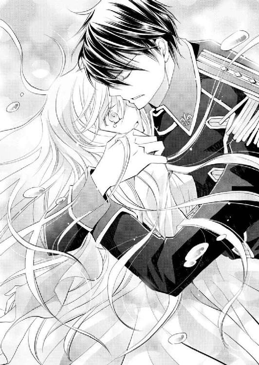
だがふたりは、すぐに目と目を合わせた。
「キルラは」
「キル、ラが......」
ふたりの大切な誓約のヴァハラの名を、同時に口にする。
何も言わなくとも、ふたりの想いは一緒だった。
絶体絶命なのは先刻と変わらないのに、ふたりでいることで、たくさんの勇気と力が溢れてくる。
ンピチュ！
「ネム、リン......。ああ、ネムリンも無事で、よかった」
ヒューバートの肩に、ちょん、と乗るネムリンに、よかったと目を細める。
「おまえは大丈夫なのか？」
「......え？」
「キルラ‐キルレ‐キロルが放つ、巨大な光が見えた」
だからここへ駆けつけることができたんだ、と気遣わしげに言われ、ラウラはうなずいた。それはとてもぎこちないもので、わずかしか頭を動かせなかったが、ヒューバートにはじゅうぶん伝わったようだ。
「しょう、ぐんは......？」
イーノス──アラステアからは、ヒューバートの安否は知らないと聞かされていた。ヒューバートは怪我をしていないのだろうか。
不安に顔を曇らせるラウラを安心させるように、ヒューバートは微笑んでみせた。
その笑みを見て、ラウラもホッと安堵の息をつく。
「これは、ラハヤだな」
「は、い。この中に沈むと、意識を保っていられなくて。でも圧は、感じられません、でした」
水の中にいるような感覚はあったが、ラハヤの中にいれば圧は感じずにいられるようだ。
「動物たちもずいぶん沈んでいるようだ」
透明なラハヤの褥には、ヒューバートが言うように、たくさんの動物たちが閉じ込められ、望まぬ眠りにつかされていた。
まるで棺のようではないかと、そう思って、ラウラはふるりと身体を震わせた。
空から何かが落ちてきた。
ひらり、ひらりと、軽やかに落ちてくるそれは、まるで羽毛のようだ。
ぎこちなく上空に視線を向けたラウラは、小さく声をあげた。
「ゆ、き......？」
頰に落ちてきた雪は淡い冷たさをラウラに与えると、すぐに雫へと変わる。
そんな雪空の下、大きな赤い鳥が旋回し、そして何処へか飛んでいくのが見えた。
空からは雪が、そして遠く目を凝らせば、ラハヤの波が、ゆっくりと押し寄せてくる。
次から次へとやってくるラハヤは、いったいどこから湧いてきているのだろうか。
こんなふうにラハヤが押し寄せてくるなんて。
──もし、ラハヤがヴァハラ獣界中に広がったら、この世界はどうなってしまうの？
ヒューバートに支えられながら、ラウラはアラステアが向かった方角へ顔を向けた。
「......はじまりの森」
「あのヴァハラ、いや、逆同調をした男は、はじまりの森へ行ったのか」
「はい。そこに、誓約のヴァハラがいるんだそうです」
「キルラ‐キルレ‐キロルも」
「キルラも、そこに」
「では行こう。──はじまりの森へ」
ヒューバートの声は、いつもと変わらない、平静なものだった。だからラウラも、まだ絶体絶命のピンチから脱していなくとも、気持ちを落ち着かせることができる。
キルラとの同調を解かれて、ラウラは自力で動くこともままならない。今まで以上にヒューバートの荷物になることは必至だ。けれどラウラは、諦めるつもりはなかった。
キルラも、クロエやロムロも、そしてゼノも、サクリクスも。
全員で人界に帰るのだ。
力の入らない左手を、ヒューバートに縋らせる。ヒューバートはラウラを決して離すまいと、右腕をラウラの腰にしっかり回してくれた。
「将、軍」
「なんだ？」
「こんな、広いヴァハラ獣界で、わたしを見つけてくれて......ありがとうございます」
ラウラはゆっくりとヒューバートを見上げた。
「将軍と、わたしを繫ぐ鎖は、切れてしまって、すごく、すごく、心細かった、です、けれど、それでも、こうして、見つけてくれた。──わたし、無事に、人界に戻れたら、ちゃんと、もう一度誓約を結び直して......そのあとで、正式に、誓約を解除、できたらって、思います」
「......ラウラ」
「誓約の鎖がなくても、たとえ離れても、......将軍は、わたしを見つけてくれる。それが、本当にわかった、から。わたしたちの鎖は、必要ない」
口を開くのも辛かったが、ラウラは己の想いをすべて伝える。
小さく微笑むと、ヒューバートの唇が、ラウラのそれに優しく押し当てられた。
ラハヤの褥は温かい。圧も感じないし、快適ですらある。だが眠りへと引き摺り込まれる時に、足先から凍りつくような寒気を感じる。
ラウラ自身が気づかないうちに、どうやら身体は冷えきっていたようだ。
ヒューバートの唇が、熱を移すように、やわらかく何度も触れてくる。
温かい。
穏やかな口づけに、ため息が溢れた。
頰と頰が、額と額が触れ合う。
その額がとても熱いことに気づいて、わずかに距離を取る。
互いを視界に映したと同時に、ラウラは大きく、ヒューバートはごくわずかに、双眸を見開いた。
「額が」
「将軍、額から、鎖......」
ふたりの口からは、同じ言葉が溢れた。
「これは」
「これ、前に、ありました......！」
お互い初めて想いを告げ合い、そのあとでどういうわけかキルラがふたりの間に挟まるという珍事が起こるようになった夜のことだ。
「え、......どういう」
「──もしかして」
「将軍、何か、わかった、んですか？」
肉眼ではっきり見える誓約の鎖は、遙か彼方にまで続いている。
その先にいるのは、ふたりの誓約のヴァハラ、キルラ‐キルレ‐キロルだ。
だがキルラのいる場所──はじまりの森の手前から、ラハヤの波が押し寄せてきた。
「......ッ！」
ラハヤの波は、水状ではなかった。大きな波の下方から、バリバリと音を立てながら、凍りついていく。
あの状態では、被った途端に眠りにつかされてしまうかもしれない。
ラハヤの波をしっかり見据え、ヒューバートの背に、頼りない力ながらも指を縋らせる。
ンピチュー！
ネムリンが叫んだ。
──来る......！
衝撃を覚悟した刹那──
「へいへーい！ オレの力は必要かい？」
そんな、おどけた声が聞こえてきた。
「......え」
閉じかけた目を思わず見開く。
白銀の、美しい被毛。
普通のヴァハラより格段に体格のいい、威風堂々とした姿。
それなのに口を開けばおどけた道化のように振る舞う、ちょっぴりドジで、けれどとても優しい、──ヴァハラの王にして、英雄将軍、ヒューバート・ガーディナーの誓約のヴァハラ。
サクリクス。
その、ヴァハラの王が、ラウラたちの頭上にいた。
「──サクリクス」
ヒューバートの声は微かに掠れていた。
「よおヒュー。なんつーか絶体絶命っぽいけど、おんなじくらいすげーラブラブな気配もするなあ。オレちょっぴりジェラシー感じるぜえ」
笑うように大きな牙を見せるサクリクスへと、ヒューバートは左手を伸ばして宙から引き摺り下ろす。
「うお！ な、何しやがる!?」
「おまえこそ、どこに行っていた」
「ん？ 心配したー？ オレ様最強のヴァハラの王だぜ？ やられるわけないだろうが」
「黒きヴァハラにラウラからの贈り物を奪われたおまえが何を言う」
「うっ」
──将軍、いつもより饒舌なうえに早口......！
口にも態度にも出さなかったし、もちろん信頼しているのだろうが、それでもやっぱり、サクリクスの身を案じていたに違いない。
あからさまにはその思いを口にしないヒューバートと、恐らく大変な目に遭ったはずなのに、やはりそれをおくびにも出さないサクリクスは、本当にいいパートナー、誓約者とそのヴァハラだと、ラウラは思った。
ンピチュー!?
「ん？ あ、うわ......！」
キルラがいないからなんと言っているのかはわからないが、恐らく『何をのんきに話しているべさ!?』とネムリンは言ったのだろう。
ラハヤの大波が、目前にまで迫っていた。
「おらよ行くぜー！」
サクリクスが陽気な声とともに、前肢を伸ばしてくる。ところが目測を誤ったのか、ラウラの肩に当たってしまい、「ん？ 間違った」と再度ヒューバートに触れた。
いつもながら、見惚れるくらい鮮やかな同調だった。
ヒューバートの漆黒の髪が、白銀色へと変化した刹那、ラウラは逞しい腕に抱き上げられ、ラハヤの大波から、すんでのところで逃れた。
「ラウラちゃーん、大丈夫だった？ こいつ、ちゃんとラウラちゃんを守れたかい？」
「は、はい。大丈夫、です」
「んー、でもさ、やっぱり女の子がヴァハラ獣界に来るのはちょっと心配だな。圧、辛いでしょ？ ......ていうかさ、キルキルは、どうしたのかな」
ヒューバートと同調したサクリクスが、じっとラウラの翠藍色の瞳を覗き込む。
「ラウラちゃんと同調してないよね。髪の色、ラウラちゃんの色だもんね」
サクリクスはそわそわと、あちこちに視線を飛ばす。
と、ネムリンと目が合った。
「シシハヤ？ 単独行動とは珍しいな」
「あのですね、話せば、長くなる、といいますか、......わたし、普段のように、ちゃんと話せない、んですが」
本当は、目を開けていることすら辛い。
「ん、......あ、そーだ。ここはオレがラウラちゃんと同調すべき？ 誓約の鎖がこんがらかってるから、オレ、ラウラちゃんと同調できるんじゃないかな？ どう？ ヒュー」
ヒューバートは無言だった。
「おいおい、オレ様にまで睨み利かせてどーすんだよ。オレ様はラウラちゃんが辛くないようにと思って、親切心から言ったんだぜ？」
にやにや笑うサクリクスだが、その顔が一瞬真顔になり、だが次の瞬間には、目を細めて、穏やかな表情になった。
どうやら中で、ヒューバートと会話をしたようで、サクリクスは、ひとつうなずいた。
「ごめんね、ラウラちゃん。ラウラちゃんと同調して、圧から解放してあげたいんだけど、ヒューがうるさいからやめとくね」
「うるさくなど言っていない」
ヒューバートがひと言突っ込む。
──......なんだろう？
ヒューバートが、サクリクスとラウラの同調を止めたのは、今の言葉が本当の理由のようには聞こえなかった。
そう思ったのが伝わったのか、サクリクスは苦笑する。
「ラウラちゃんは勘が鋭いなあ」
「何か......あるん、ですか？」
心配になって、そろりと問うと、サクリクスは大丈夫、と笑う。
「ただちょっとオレ様ドジ踏んで怪我しちゃってて、若干いつもの調子が出ないからさ、これで同調したら、ラウラちゃんも痛みを感じちゃうんだ。だから、ヒューがやめとけってさ」
「え。......、ど、どこを」
リムル‐リシル‐リスレと戦った時に、怪我を負ってしまったのだろうか。
「へーき！ ヴァハラの王を信じなさい」
サクリクスは、ヒューバートでは絶対にしない表情で、おどけるように笑った。
「あの、......サクリクス、さん。本当、に？ 治療、は......」
それでも心配で、おずおずと問うと、サクリクスはうなずく。
「ほら、こんだけ動けるんだからさ、治療もしなくてだいじょーぶさあ！」
そう言ってふわりと上昇したかと思うと、凄まじいスピードでラハヤの波の上を飛んだ。
「わ、......わ」
ンピチュー！
あまりの速さに目を回しかけるラウラの横で、ネムリンは置いていくなとばかりに一生懸命ついてくる。
確かに自分を抱えながら、こんなに速く飛べるのだ。怪我は大したことはないのかもしれないと、ラウラは安堵する。
心配性のヒューバートは、ラウラにほんの少しの痛みでも味わわせたくないと思ってくれたのかもしれない。
ラウラの誓約のヴァハラはキルラだけだし、サクリクスの誓約者はヒューバートだけなのだから。
本当に、どうしてもダメだというギリギリまで、ラウラは自分の力でがんばりたかった。
「んじゃ、ヒュー、話を聞こう。ラウラちゃんは、ゆっくりでいい。話してくれるかい？」
「は、い」
ラウラはうなずいた。
ヒューバートの簡潔すぎる説明を補足する形で、ラウラはヴァハラの王に話して聞かせた。
するとサクリクスの面が、ゆっくりと色を失っていく。
サクリクスではなく、まるでヒューバートが浮かべるような無表情だ。
「......サクリクスさん、ごめんなさい。わたしが、一緒にいた、のに」
無理やり同調を解除させられた瞬間を思い出す。
キルラの悲痛な呼び声に、ラウラは応えることができなかった。
目を伏せて唇を嚙みしめるラウラに、サクリクスはふと瞬きを繰り返した。
「いや、ラウラちゃんに大事がなくてホントよかったよ。ラウラちゃんがしょげることはない。悪いのはそのアラステアってヤツなんだから」
「......サクリクスさん」
サクリクスはいつものように、不敵な笑みを、面に浮かべる。
「目的ははっきりしてんだ。キルキルを奪取して、クロエちゃんとロムロを探し出して、ああ、ラハヤが増殖しちまったこの状態も、全部ちゃっちゃと解決して、そんでみんなで人界に戻ろうぜ！」
「は、い。......はい」
ラウラも精いっぱいの力でうなずく。
「それにしてもイーノスか。......厄介だな。ゼノも来てるし、て、あれやべえ......！」
「サクリクスさん、ゼノさんと、会ったんですか......!?」
「おお。うわやべ、助けてもらったのに、オレ置いてきちまった！」
慌てて周囲を見回すが、ゼノの姿はどこにもない。
「やっべえ。オレとしたことが、......しょうがねえ。まずはキルキルを助けるべし！」
「え」
ゼノは放っておくのかと目を丸くするラウラに、サクリクスは再度仕方ないとうなずいた。
「あとで助けてもらった礼はする。ゼノの目的は、クロエちゃんを探すことだから、ちゃんと手伝うさ。だからとにかくまずキルキルだ」
「......」
──うう、ゼノさん、ご、ごめんなさい......！
「イーノスが厄介、というのはどういう意味だ？」
ヒューバートの問いに、サクリクスは一瞬口をつぐんだ。ため息をつきつつ、雪がちらつく空をゆっくり見上げる。
「オレがヴァハラの王になる時に、一番のライバルっていうか、最有力候補だったのが、実はイーノスだったわけ。それ以前に、オレはあいつに借りがあるんだ」
「え、......イーノスさんは、白毛の、ヴァハラなんです、か？」
いいや、とサクリクスは首を横に振る。
「イーノスは普通の黒毛だよ。初めて黒毛の王になったかもしれないヴァハラなんだ。すげえヤツなんだぜ」
サクリクスは、どこか懐かしむように目を細めて、口元をほころばせた。
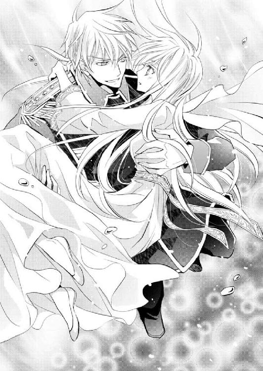
サクリクスにとって、浅からぬ縁のあるヴァハラのようだ。
「サクリクスさん」
「そっか、イーノス、こっちに来てたんか」
「会えるなら会えばいい。だが今は」
ヒューバートが低く呟く。
「おお、キルキルを助けるぜえ！」
「はい」
ンピチュー！
「行くぜ──！」
サクリクスはラウラを抱えながら、勢いよく飛んだ。
目指すは白黒の──はじまりの森。
「ラウラァァァァ！」
叫んでも、暴れても、イーノス......アラステアの拘束は緩まない。
キルラは泣きながら、己の誓約者の名を、声の限りに呼んだ。
「うわああっ、離せ！ 貴様、ラウラの身に万一何かあったら、決して許さぬぞ──！」
「そんなこと言っても、吾輩にも吾輩の都合がありますしぃ。いいからおとなしく来てくださいよ。用事が終わったら、戻ってあげてもいいですから」
「き、貴様......！ 貴様なんぞ大嫌いじゃ！」
「別に君に嫌われても痛くもかゆくもありませんねー。ほら、白黒の森に到着しましたよ。うわ、こりゃ広大な森だ。ローデリー地区が丸ごと入りそうじゃあないか」
アラステアの驚嘆の声に、キルラは涙をボロボロ零しながらも、眼下に広がる森へ目を向ける。
アラステアが言うように、延々と白と黒の森が広がっている。
恐らく若い木の幹が黒で、老いて枯れはじめている木が白、その中間が灰色なのだろう。そして葉の色がまた独特で、白、灰色、黒しかない。
見れば見るほど、普通の森とは違い、陰鬱で気味が悪かった。
「こんなところに、どうしてイーノスがいるんでしょうねえ」
アラステアはため息をついた。
背後に続くシシハヤやミュウィンたちも、どこか恐れをなしたように、ゆらゆら揺れている。
『ここには決して来てはならぬぞ』
じじ──前々王の言葉を思い出す。
キルラがまだとても幼かった頃、初めて空が飛べた時、嬉しさのあまり、行けるところまで飛んでいってしまったことがあった。
そして辿り着いたのが、ここ、はじまりの森だったのだが、探しに来た前々王に、きつく説教されたのだ。
いつもは鷹揚でのんびりしつつ毒舌を吐く前々王なのに、この時だけは真剣な面持ちだった。
なにゆえじゃ、と訊いたキルラに、だが前々王は、確たる理由を教えてくれなかった。
ただひと言、この森は不可侵の場所であり、祈りの場所でもある。興味本位に近づいてはいけないのだ、と。
「......本当にこの森に下りるのか」
「ええ、もちろんですよ、新種のヴァハラくん。それが吾輩の目的ですからね」
アラステアはなんの躊躇もなく、白黒の森へと下りていく。だがしばらく飛んでいくと、ふいにアラステアが止まった。
「......なんだろうねえ、あれ」
アラステアが何を見てそう言ったのか、キルラもすぐに察する。
「あれは......、なんじゃ」
はじまりの森の中央には、巨木がある。
ほかと比べ格段に大きく、ヴァハラ獣界の獣たちから、神木と呼ばれている。
周りの木は、黒、白、灰色と、成長に伴い、色が異なる。だがこの神木は、幹は漆黒、枝は白、葉は白と黒だ。灰色は一切なかった。
葉はほかの木のそれより一回りは大きく、枝にびっしりとついている。枝によって、白と黒にくっきり分かれていた。
その神木──はじまりの森のシンボルが、水の守護者、ラハヤに包み込まれてしまっていたのだ。
木の根元からラハヤが噴出してきているようで、はじまりの森が、水の守護者に侵食されつつあった。
「いったいラハヤはどうしたのじゃ......。あれはあんなに増殖するものではないぞ」
キルラは今の己の状況を忘れ、呆然とラハヤに包まれた神木を見下ろした。
アラステアの身体がふいに強張った。
「......？」
アラステアの視線を辿ったキルラは、同様にハッと息をのんだ。
「な、......なんじゃ、あれは」
白と黒の葉が茂る神木の頂に、獣がいた。
獣はラハヤの褥に取り込まれ、以前のクロエのように眠りについているようだ。
その獣が纏う色に、キルラは目を奪われる。
眠っているのは、葉の色と同じ、漆黒の毛色のヴァハラと、そして純白の長い被毛を持つ、とてつもなく美しいヴァハラだった。
了
香月沙耶です。
このたびは、『ダブル・コントラクト 想いがつのる初熱望!?』をお手に取っていただき、本当にありがとうございました。
ヴァハラ獣界編も今回で二巻目です。
ダブコンキャラは大概好きなように喋ってくれまして（ヒューバート除く）、新キャラもそうだったんですが、逆に喋りすぎてくれるものだから、ははは、うーんどうしようかなあ、という事態に。
基本的にセリフが短めのヒューとは逆ながら、同じくらい御しがたいタイプでした。でも難しいキャラの方が、書いていて面白いかな。
次巻では、新キャラの新たな面が出せたらいいなと思っています。
掛け合いが楽しかったのは、クロエ・ロムロ・リムルです。
ラウラ組とは違ったノリのこの三人組、無事目的地に到着できるのか、一行の珍道中も、楽しんでいただけたら嬉しいです。
そしてそして今巻も、椎名咲月先生に、巻末マンガを描いていただきましたー！
いつもはざっくりとしたネタを送っているのですが、今回は椎名先生にすべてお任せいたしました。お忙しいなか、ありがとうございます。
つい先ほどラフをいただいたのですが、もーメチャクチャ可愛いですよ～ッ！
皆さん、この後のページへＧＯですー！
また、雪が舞い落ちる表紙絵、素晴らしくロマンティックで、見ているとふわふわした気持ちになります。冬景色の中にあって、ラウラとヒュー、キルラの暖かそうなこと......。
人物紹介では、ひと・ヴァハラに加え、ネムリンまでも描いていただきました。
な、なんて愛らしい。
椎名先生、本当にありがとうございました。
担当のＹさま、今巻はいつにも増してご迷惑をおかけしてしまい、もうなんとお詫びしたらいいか......（土下座）。
次こそがんばりますので、どうぞよろしくお願いいたします。
当作の発刊に携わっていただいたたくさんの方にも、御礼申し上げます。いつも本当にありがとうございます。
ダブコンも六巻です。ここまで書くことができて、読み続けてくださった読者の皆様には、心より感謝しています。
もふもふが可愛い、と感想をお寄せいただくことがたまにありまして、少女小説的にはどうなのかしらと若干心配しつつも、もふもふ好きなのでとっても嬉しいです。
皆さんの好きキャラ、よかったら教えてくださいね。
次巻もお手に取っていただけたら嬉しいです。
それでは。
香月 沙耶 拝
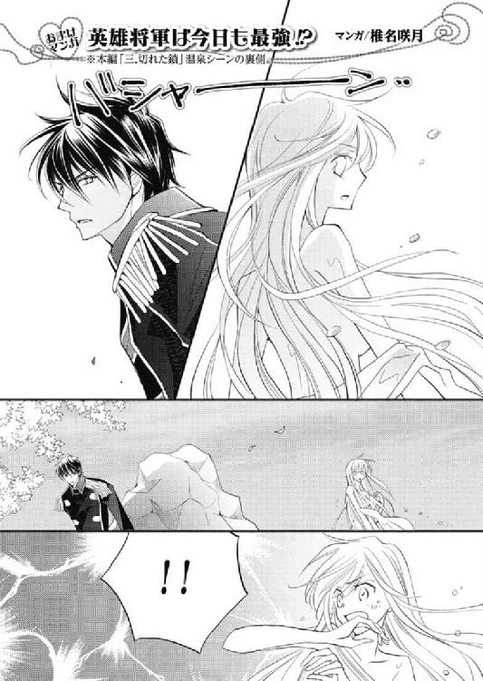
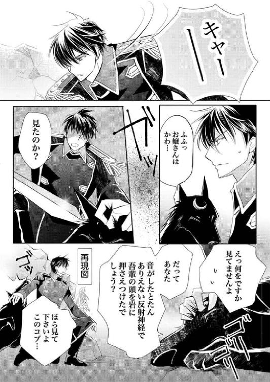
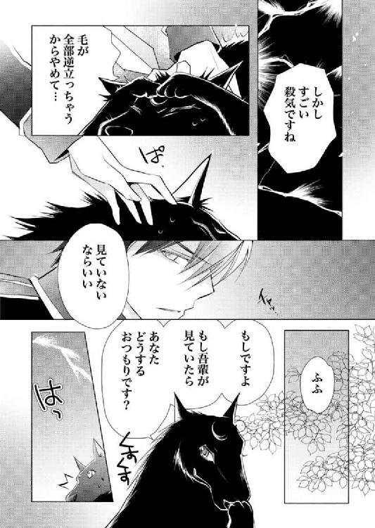
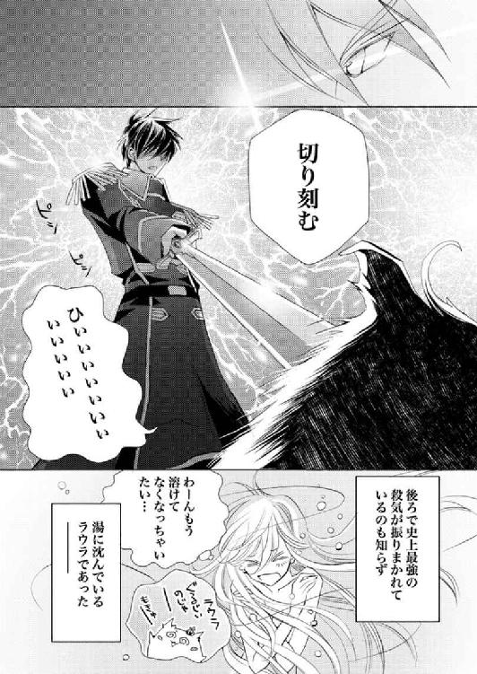
著者
Saya Kohzuki
６月11日生まれ・双子座・Ｂ型・埼玉県在住
春→夏って瘦せやすいんですが、秋→冬って、食べ物がとっても美味しくて、つい食べ過ぎちゃいます。
で、気づけば体重がエラいことになっていて、春、冬場の己に対して悪態をつくということを毎年繰り返しています。
今冬こそ、意思の強い自分でいられますように。
【弥涼暮月】http://s-kohzuki.jugem.jp/
イラスト
Satsuki Shiina
物語はちょっとドキドキでハラハラな感じになってきました...！ がんばれヒュー!!
たまにつぶやいております。
@satsukisheena
shee's cafe
http://homepage2.nifty.com/~shee/
電子版 ビーズログ文庫
ダブル・コントラクト
想いがつのる初熱望!?
著者／香月沙耶
イラスト／椎名咲月
2013年2月26日電子版ver.1.0発行
2014年11月28日電子版ver.1.2発行
発行人 青柳昌行
発行 株式会社KADOKAWA
〒102-8177 東京都千代田区富士見2-13-3
電話 0570-060-555（ナビダイヤル）
http://www.kadokawa.co.jp
企画・制作 エンターブレイン
デザイン 行成公江
(c)2012 Saya KOHZUKI
本電子書籍はビーズログ文庫『ダブル・コントラクト 想いがつのる初熱望!?』（2012年12月27日発行 初刷）を元にして制作しております。